| [川原礫]アクセル・ワールド06 | |
| 川原礫 | |
| (2015) | |
|
アクセル・ワールド６ ─浄火の神子─
川原 礫
|
底本データ
一頁17行 一行42文字 段組１段
「二重山括弧」は「山括弧」に置換え注略。
「＞」は全角縦中横注略。
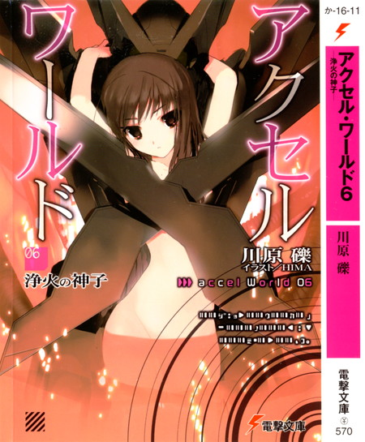
アクセル・ワールド６
─浄火の神子─
黒雪姫率いる軍団〈ネガ・ネビュラス〉。その躍進を担っていた銀翼が、もげようとしていた。謎の組織〈加速研究会〉とのバトル中、ハルユキは突如複活した〈災禍の鎧〉の侵食を受ける。彼は未だ、その呪縛からは逃れられなかった。
事態を重く見た〈純色の七王〉は、〈加速世界〉の最高意思決定機関である〈七王会議〉を開く。そこでシルバー・クロウに下された決定とは、〈浄化〉と呼ばれる強化外装の完全解除を行うこと。従わなければ、残りの六王から賞金首に指定され、事実上〈加速世界〉から追放となる。
最も高度な解呪コマンドである〈浄化〉。その鍵を握るアバターは、〈無制限フィールド〉の意外な場所に幽閉されており......。
〈加速世界〉では、致命的な危機を抱えたハルユキ。なのだが、〈現実世界〉では飼育委員活動中に知り合った小学四年生の少女と、なぜか心の交流が深まってしまって──。
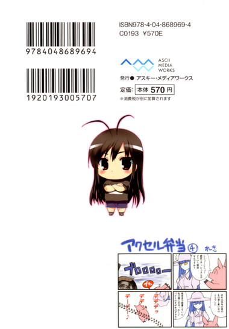
川原 礫
毎日ヤバイ気温が続いております。アクセルの世界にもそろそろ初めての夏が来ますが、この調子では２０４０年頃には大変なことに...！キャラ全員暑さで溶けてて一巻まるまる何も起きないというのはどうでしょうか。王連中も「だりー」しか言わない。すいませんちゃんとやります。
イラスト：ＨＩＭＡ
10月３日生まれ。挿絵は今シリーズが初のイラストレーター。『電撃萌王』小冊子への寄稿を見た文庫編集者が、今回の挿絵依頼をオファーしたことがきっかけ。本業仕事の合間を縫って、ブログやＳＮＳサイトなどでイラストを発表している。
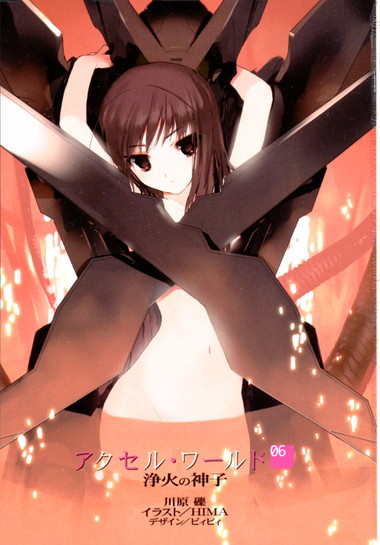
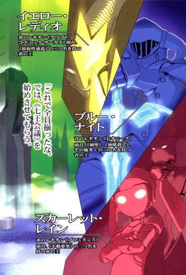
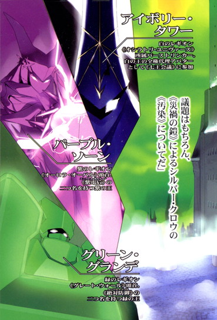
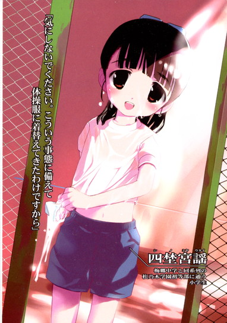
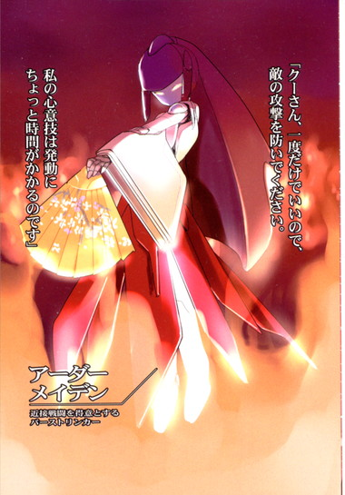
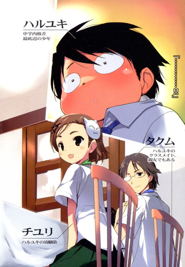
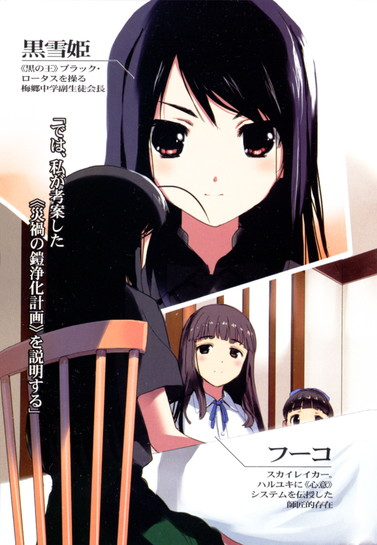
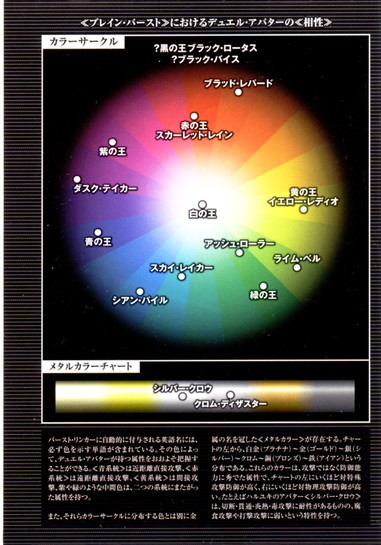
〈ブレイン・バースト〉におけるデュエル・アバターの〈相性〉
バースト・リンカーに自動的に付与される英語名には、必ず色を示す単語が含まれている。その色によって、デュエル・アバターが持つ属性をおおよそ把握することができる。〈青系統〉は近距離直接攻撃、〈赤系統〉は遠距離直接攻撃、〈黄系統〉は間接攻撃、紫や緑のような中間色は、二つの系統にまたがった属性を持つ。
また、それらカラーサークルに分布する色とは別に金属の名を冠した〈メタルカラー〉が存在する。チャートの左から、白金（プラチナ）～金（ゴールド）～銀（シルバー）～クロム～銅（ブロンズ）～鉄（アイアン）という分布である。これらのカラーは、攻撃ではなく防御能力に秀でた属性で、チャートの左にいくほど対特殊攻撃防御が高く、右にいくほど対物理攻撃防御が高い。たとえばハルユキのアバター〈シルバー・クロウ〉は、切断・貫通・炎熱・毒攻撃に耐性があるものの、腐食攻撃や打撃攻撃に弱いという特性を持つ。
アクセル・ワールド 06
浄火の神子
■黒雪姫（クロユキヒメ）＝梅郷中学の副生徒会長。清楚怜悧なお嬢様。その素性は謎に包まれている。学内アバターは自作プログラムの『黒揚羽蝶』。デュエルアバターは〈黒の王〉『ブラック・ロータス』（レベル９）。
■ハルユキ＝有田春雪（アリタ・ハルユキ）。梅郷中学二年生。いじめられっ子で太り気味。ゲームは得意だが、内向的。学内アバターは『ピンクのブタ』。デュエルアバターは『シルバー・クロウ』（レベル５）。
■チユリ＝倉嶋千百合（クラシマ・チユリ）。ハルユキの幼馴染。お節介焼きな元気娘。学内アバターは『銀色の猫』。デュエルアバターは『ライム・ベル』（レベル４）。
■タクム＝黛拓武（マユズミ・タクム）。ハルユキ、チユリとは幼少期からの知り合い。剣道が得意。デュエルアバターは『シアン・パイル』（レベル５）。
■フーコ＝倉崎楓子（クラサキ・フウコ）。旧〈ネガ・ネビュラス〉に所属していた凄腕のバーストリンカー。とある事情により隠匿生活をおくっていたが、黒雪姫とハルユキの説得により戦線に復帰する。ハルユキに〈心意〉システムを授けた。デュエルアバターは『スカイ・レイカー』（レベル８）。
■ニューロリンカー＝脳と量子無線接続し、映像や音声など、あらゆる五感をサポートする携帯端末。
■学内ローカルネット＝梅郷中学内に構築されたローカルエリアネットワーク。出席確認や授業などに利用され、梅郷中の生徒は常時接続が義務となっている。
■グローバル接続＝世界中のネットと接続する行為。梅郷中学内ではグローバル接続は禁止されており、その代わりに学内ローカルネットが提供されている。
■ブレイン・バースト＝黒雪姫からハルユキに転送されたニューロリンカー内のアプリケーション。
■デュエルアバター＝ブレイン・バースト内で対戦する際に操るプレイヤーの仮想体。
■軍団＝レギオン。複数のデュエルアバターで形成される、占領エリア拡大と利権確保を目的とする集団のこと。主要なレギオンは七つあり、それぞれ〈純色の七王〉がレギオンマスターを担っている。
■通常対戦フィールド＝ブレイン・バーストのノーマルバトル（１対１格闘）を行うフィールドのこと。現実さながらのスペックを持つが、システムはあくまで一昔前の格闘ゲームレベルのもの。
■無制限中立フィールド＝レベル４以上のデュエルアバターのみが許可されるハイ・プレイヤー向けのフィールド。〈通常対戦フィールド〉とは段違いのゲームシステムが構築されており、その自由度は次世代ＶＲＭＭＯにも全くひけを取らない。
■運動命令系＝アバターを制御するために扱うシステム。通常はすべてこのシステムによってアバターは操作される。
■イメージ制御系＝自身が強く想像（イメージ）することによってアバターを操作するシステム。通常の〈運動命令系〉とはメカニズムが大きく異なり、扱えるものはごく少数。〈心意〉システムの要諦。
■心意（インカーネイト）システム＝ブレイン・バースト・プログラムのイメージ制御系に干渉し、ゲームの枠を超えた現象を引き起こす技術。〈事象の上書き（オーバーライド）〉とも言う。
■加速研究会＝謎のバーストリンカー集団。〈ブレイン・バースト〉をただの対戦ゲームとしては考えておらず、何事かを企む。〈ブラック・バイス〉、〈ラスト・ジグソー〉が所属している。
■災禍の鎧＝クロム・ディザスターと呼ばれる強化外装。装着すると、対象アバターのＨＰを吸い取る〈体力吸収（ドレイン）〉や、敵の攻撃を事前に演算・回避する〈未来予測〉など強力なアビリティが使用可能となる。しかしその使用者は、クロム・ディザスターに精神を汚染され、完全に支配される。
〈ブレイン・バースト〉は、フルダイブ型の対戦格闘ネットワーク・ゲームである。
しかし、市販されている同種のゲームとは異なり、対戦の組み合わせは、グローバルネット上のサーバー単位で行われるわけではない。
基準となるのは、プレイヤー、つまり〈バーストリンカー〉の現実身体が存在する場所だ。現実世界に於いて、一定の区分内にいる者同士でなければ対戦相手にはなれない。その区分を、ブレイン・バーストでは〈戦域〉と呼ぶ。
戦域の面積は都心とそれ以外の地域で異なるが、東京二十三区内ならば、ひとつの区がだいたい二から四の戦域を持つ。たとえば、杉並区なら〈杉並第一戦域〉から〈杉並第三戦域〉の三つに分割されているわけだ。その戦域ひとつひとつに〈マッチングリスト〉と呼ばれる、現在エリア内に存在するバーストリンカーの一覧表が設定されていて、各人はそのリストから対戦相手を選んで挑戦するか、あるいは〈待ち受け状態〉にして乱入を待つことになる。
二十三区内の戦域の合計数は、約六十。
総勢千人のバーストリンカーのほぼ全員が東京中央部に暮らしているため、ひとつの戦域のマッチングリストには、おおよそ十から二十人が登録される計算だ。もちろん場所や時間帯によって偏りは発生し、週末午後の新宿駅周辺や秋葉原では、リストの人数が百を超えることも珍しくない。
それだけの人数がひとつのスポットに集中すると、時として思わぬ現象が引き起こされる。リストから無作為に選んだ対戦相手が、〈対戦ステージ〉上でいきなり数メートルの至近距離に出現したり、あるいは観戦者の現実位置に近い場所にどちらかの対戦者が登場してしまったりするのだ。
ブレイン・バーストのＶＲ対戦ステージは、現実世界のありとあらゆる場所に張り巡らされた高解像度の保安監視カメラ網、いわゆる〈ソーシャルカメラ・ネット〉の映像から再構成されている。つまりステージ内のビルや道路は、ランダムな〈属性〉によって様々な姿に変化するとはいえ、基本的には現実の姿そのままなわけだ。
その地形上で、デュエルアバターの出現位置が密接しているということは、双方のバーストリンカーの現実身体もまたすぐ目の前に存在するということになる。これは相当に気まずい。いや危険ですらある。バーストリンカーにとって、生身の顔や名前が露見してしまう──いわゆる〈リアル割れ〉は、最大の禁忌のひとつだからだ。もし写真を撮られたり、尾行によって住所や本名を割り出されれば、現実世界での拉致や脅迫といった手段で全バーストポイントを強奪されかねない。
そのような暴力的犯罪行為を厭わない過激な輩も、加速世界にはごく少数ながら存在する。彼らは物理攻撃者略して〈ＰＫ〉と総称され、大レギオンは粛正を叫んでいるものの、名前を割り出すことすら非常な困難を伴う。なぜなら襲われたバーストリンカーはほぼ例外なくポイントを全損、すなわちブレイン・バースト・プログラム本体及びそれに関する記憶を完全喪失してしまい、二度と加速世界に戻ることはできないからだ。
確率は低いとはいえ、そのような恐ろしい危険が、週末の熱く盛り上がった戦域には潜んでいる。
裏返せば、バーストリンカーの人口密度が低いエリアでは、リアル割れの可能性は限りなく減少すると言える。
二十三区なら、世田谷区の西部や、大田区、江戸川区あたりがいわゆる過疎エリアということになる。面積が広いわりに、リスト上の人数が常時少ないからだ。
だが意外にも、東京でもっともニアミスの危険が少ない場所は、全エリアの中心──千代田区だと考えられている。
千代田区は、二十三区で唯一、戦域が分割されていない。特区として独立している秋葉原エリアを除く全面積が広大なひとつの戦域に設定され、しかもそこをホームグラウンドとするバーストリンカーは無に等しい。
なぜなら、千代田区の面積の二十パーセントまでもが、一般人の立ち入れない皇居なのだ。
そのルールは、加速世界に於いても貫かれている。対戦ステージにも各種属性に応じた形状の〈皇居〉は存在するのだが、お濠の中央に障壁が設けられていて侵入は不可能だ。ただでさえ広すぎるマップの中央が巨大な禁止ゾーンなので、対戦者の片方がその気になれば、最初に遠距離攻撃でワンヒットしておいてから三十分間延々逃げ回り、判定勝ちを狙うことも難しくない。
そんな戦いづらい地形なうえに、すぐ北東に秋葉原、西に新宿という対戦のメッカがあるとくれば、敢えて千代田区で戦おうという者がそうそういるはずもないのだ。ゆえに千代田エリアのマッチングリストは常に閑散としている。しかし、だからと言って無価値なエリアというわけではない。
東京の中心でありながら、現実身体がニアミスする危険が少ない。その特徴は、千代田エリアに思わぬ利用法を生み出したすなわち〈対戦〉ではなく〈交渉〉の場。敵対する勢力同士が、リアル割れの可能性を限界まで排除したうえで接触したいと考えた場合、広大かつ寂寞とした千代田区はまことに都合がいい。
以上のような理由で──。
二〇四七年六月十六日、日曜日、午後一時四十五分。
レギオン〈ネガ・ネビュラス〉頭首、黒の王〈ブラック・ロータス〉こと黒雪姫と、レギオンの副長にしてデュエルアバター〈スカイ・レイカー〉を操る倉崎楓子、そして下っ端戦闘員〈シルバー・クロウ〉こと有田春雪の三人は、東京都千代田区富士見二丁目のコインパーキングに停めた小型ＥＶの車内で、〈交渉〉が始まる時をじっと待ち続けているのだった。
いや、規模的にはもはや単なるレギオン間交渉ではない。
なぜなら午後二時に開始されるのは、加速世界八年の歴史上でたった二回しか招集されたことのない、〈純色の七王〉全員による会議なのだ。
１
「......このクルマ、師匠の私物ですか？」
間近に迫った〈七王会議〉の緊張感に耐えかねたハルユキが、後部座席から唐突に訊ねると、運転席の〈師匠〉こと楓子は驚いたように首を振った。
「まさか。母のものですよ、いくらなんでも高校生のお小遣いで自動車は買えません」
「で、ですよねー」
ＥＶは丸っこく可愛らしいフォルムだが、明るいクリームイエローの内装は本革張りで、ステアリングの中央にはヘビと十字を象ったエンブレムがある。ハルユキもよく知っている、イタリアの老舗自動車メーカーのものだ。大学生はおろか、社会人でも若いうちはなかなか買えない値段だろう。
「ずいぶん運転慣れてたんで、もしかしたらって思って。その、免許証は自前......ですよね？」
おそるおそる口にした二つ目の質問に答えたのは、楓子ではなくナビシートの黒雪姫だった。
「ふふ、当たり前だろう。フーコは今年で十六だから、免許も取れるし結婚もできちゃうオトナなんだぞ、我々と違って」
「......サッちゃん、その言い方なんか嫌............」
────そうかー、オトナなのかぁー。
と一瞬ふらついた思考を、ハルユキはぷるぷる頭を振って立て直した。
普通自動車免許の取得資格が十八歳から十六歳に引き下げられたのは確か七、八年前のことだ。表向きの理由は、ソーシャルカメラ・ネットの完備と車両制御ＡＩの義務化によって交通事故の発生率が激減したから、ということだが実は裏の事情もあるらしい。
二〇四〇年代の日本は、際限なき少子高齢化によって、社会保障システムが崩壊の瀬戸際に立たされている。年々増大する医療・介護費や公的年金の支出額を、現役世代が支えきれなくなってきているのだ。そこで、運転免許に代表される各種資格の取得年齢を引き下げることで、働ける若者の数を増やそうという意図が政府にはあるようだ。事実、同時期に労働基準法も改正され、十六歳からフルタイムの社員として雇用することが可能となっている。
つまり、楓子はもう法的な意味合いに於いては半ば以上大人なのだ。そして今年十五歳になる黒雪姫は、来年。ハルユキも、わずか二年後にはその時がくる。
もちろん中学を卒業してすぐ就職するわけではないので、実質的にはまだまだ子供であり続けるわけだが、それでもハルユキはそこはかとない不安を感じずにはいられなかった。
──いったい僕は、いつまで今の僕でいられるのだろう。
そんなことを考えてしまってから、ふと内心で苦笑する。今の自分でいたくない、どこか遠くに逃げたい、という渇望をこそ、長い間ハルユキは感じ続けていたはずだ。
その欲求が消え去ったわけではない。自分の外形は大嫌いだし、中学校も相変わらず好きにはなれない。しかしたとえいまカミサマ的な誰かに、違う場所で暮らす違う人間にしてやる、と言われてもきっと断るだろう。〈この場所〉に──短期的には楓子の運転するＥＶのリアシートに、そして長期的にはバーストリンカーとして加速世界の片隅に居られること。言い換えれば、〈ブレイン・バースト〉という、とてつもない規模と精細さを誇り、無限のスリルと興奮を与えてくれるゲームのプレイヤーでいられること。それ以上に望むことなどない、何一つ。
でも、それすらも、おそらくは、永遠ではない。
ブレイン・バーストはゲームである。ゲームならばいつかは終わる。いや、そのエンディングに辿り着くことだけを目指して、ハルユキや黒雪姫は戦っているのだ。
ゲームの結末がどのような形をしているのかは、今は解らない。黒雪姫が望み通りにレベル10へと到達し、ブレイン・バーストそのものがクリアされるのか、いずれやってくるであろう〈子供時代の終わり〉によって容赦なくプレイ権を奪われるのか、あるいはそれ以外のエンディングが訪れるのかは想像すらもできない。
だからこそ、いまは全力を尽くすのだ。
全力で遊び、楽しみ、そして守る。自分と、大好きな人たちが一緒にいられる、この世界を。
やや狭めのリアシートで、そう心に誓いつつグッと拳を握ってみた──ものの、ハルユキはすぐに自分の陥った境遇を思い出し、深く息を吐いた。
正直、守る！ などと格好いいことを言っていられる状況ではない。
もう十数分後にも始まろうという〈七王会議〉の議題は、まず第一に、ブレイン・バースト世界に突如出現した謎の破壊組織〈加速研究会〉への対応策。そして第二に、まさかの復活を遂げた強化外装、〈災禍の鎧〉クロム・ディザスターの処遇だ。
どちらの議題も、ほんの一週間前までなら、まだレベル５のハルユキには雲の上の話でしかなかった。王たちやその側近が論議するのを、ただ観客席から眺めていればよかったはずだ。
しかし、今やハルユキは、観客どころか舞台の中央に立たされてしまっている。
なぜなら、災禍の鎧を甦らせ、六代目の所有者となってしまったのはシルバー・クロウ──ハルユキ自身なのだ。
「......そう緊張するな、ハルユキ君」
前席から穏やかな言葉が届き、ぴくんと顔を上げる。
声の主は、不意にナビシートのリクライニング・レバーを引くと、背もたれを思い切り傾けた。慌ててドライバー側に避けたハルユキのすぐ目の前で、シートがフルフラットまで倒れる。長い黒髪がさらりと流れ、一部がハルユキの膝に触れる。
今日の黒雪姫は、珍しく私服姿だった。グレーのスリムジーンズに、ぴったりしたプリントＴシャツ。その上に、薄手のパンチングレザー素材の半袖シャツを重ねている。色はもちろん黒。アイボリー系のワンピースに七分丈のレギンスというフェミニンな出で立ちの楓子とは対照的だが、ぞくりとするほどの美貌の冴えはわずかにも減じられていない。
ハルユキの目の前で寝そべる格好になった黒雪姫は、するっと右手を伸ばすと、ハルユキのＴシャツの襟首を指先でつまんで引っ張った。吸い込まれるように体を前傾させると、車の芳香剤とは異なる甘い香りが鼻をくすぐり、ハルユキの思考を急減速させる。
「キミが何を怖れる必要もないさ。大丈夫、王連中には何の手出しもさせない。キミは、私が守ってやる」
至近距離でそう囁かれ、いっそう頭がくらくらするが、懸命に脳のギアを入れ直してハルユキは答えた。
「あ......ありがとうございます。でも......その、先輩以外の王たちは当然、シルバー・クロウの粛正を求めてきますよね？つまり......レギオンマスターによる、〈断罪の一撃〉を......」
「ま、そうだろうな」
「それ......断ったら、先輩がまずいことになりませんか？なんていうか、イジメ的な」
ハルユキの経験則からすると、〈正当性を笠に着た多数〉というのは、どこまでも冷酷になれるものだ。一年生の頃にハルユキを散々虐めた不良生徒たちも、最初から理不尽に暴力を振るったわけではない。始めの頃は友達のような顔をして近づき、ハルユキが誘いを断ったり距離を置こうとした途端、〈仲間を裏切った〉という名目で牙を剥いたのだ。
今回、理屈の上では、黒雪姫ではなく六王たちに分があると思える。〈災禍の鎧〉は加速世界の黎明期から多くの犠牲者を出した呪いであって、消え去るべきだとハルユキ本人も思う。むしろ、自分の操作で消滅させられるのならとっくにそうしている。
それが不可能なら、所有するバーストリンカーごと処分するべき。その〈正当〉な意見を黒雪姫が拒否すれば、王たちからどんな精神的、物理的圧力を浴びせられることか。
と、ハルユキは心配した──のだが。
「ははは、何を今更言ってるんだキミは」
突然軽やかに笑い飛ばされ、ぱちくりと眼をしばたかせる。
すると黒雪姫は笑みを不敵なものに変え、やや低めた声で嘯いた。
「私はすでに奴らの敵だ。馬鹿げた〈相互不可侵条約〉にも加わっていないしな。文句があるなら六王自らデュエルを吹っかけてくればいいのさ。それこそ私の望むところだが、な」
「............先輩......」
──まったく、なんて強くて、かっこよくて......凛々しい人なんだ。
という胸中の感慨を、言葉にできる能力はもちろんなかったので、ハルユキはせめて間近で煌めく漆黒の瞳を一心に見つめた。
すると黒雪姫は鋭い眼光を和らげ、再び優しい微笑でハルユキの視線を受け止めた。唇がごく小さく動き、最小ボリュームの囁きが空気をそっと震わせた。
「思えば、私は最初からキミに守られてばかりだったな......」
するりと伸ばされた指先が、ハルユキの右頬に優しく触れる。どくんと心臓を跳ねさせながらも、どうにか掠れ声で答える。
「そんな......、そんなことないです......僕のほうこそ......」
しかし黒雪姫は、人差し指でハルユキの頬を軽くつついて反論を封じた。
「私はキミの〈親〉だ。いつだってキミを守る権利があるんだぞ。だから、こんな時くらいは何も言わずに私を頼ってくれ」
「............せん、ぱい」
急に胸が詰まり、ハルユキはどうにかそれだけを口にしながら、黒雪姫と視線を見交わし続けた。優しく頷き返した剣の主は、尚もハルユキの頬に指先を添えたまま、数刻前の言葉をもう一度囁いた。
「約束する。キミは、私が守る」
「............はい。はい......信じてまムギュウ！」
──と、語尾が台無しな音に上書きされたのは。
いきなり倒れてきた運転席の背もたれが、ハルユキを押しつぶしたからだった。
シートの縁から突き出た手がハルユキの左耳をむぎ──っと引っ張ると同時に、両頬を盛大に膨らませた楓子が顔を覗かせ、憤慨したように言った。
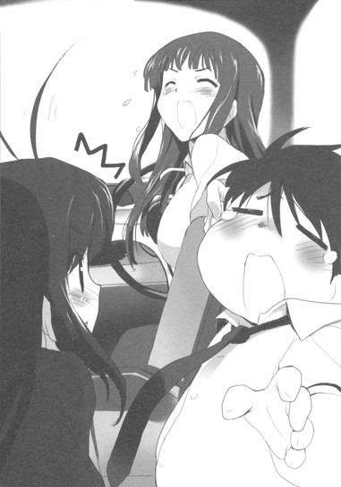
「あのねえサッちゃん、鴉さん！ ひとの車で勝手に盛り上がるの禁止っ、です！」
前席の二人がシートの角度を戻し、ハルユキも後席に深くかけ直したところで、午後二時三分前となった。
窓越しに見上げると、六月中旬の空はやや不機嫌そうな薄曇りだが、ところどころで青色も顔を出していた。急な雷雨でニューロリンカーの接続障害が起きる心配はなさそうだ。
軽い咳払いに続けて、黒雪姫が緊張感の増した声で言った。
「今回の会議は、接続者全員が対戦相手となる〈バトルロイヤルモード〉ではなく、ホストとなる〈青の王〉の側近二人の対戦に、他の参加者がギャラリーとして自動ダイブすることになる。ゆえに、我々が誰かからアタックされる危険は考えなくていい」
「あの......〈心意システム〉による攻撃も、ですか？」
ハルユキの質問に、楓子が応じた。
「ええ、たとえ心意を使おうとも、一般対戦フィールドに於いてギャラリーが攻撃したりされたりということは起こり得ません。なぜならギャラリーはそもそもＨＰゲージを持っていないからです。先週の〈ヘルメス・コード縦走レース〉で、参加者や観客がラスト・ジグソーの心意によって傷つけられたのは、ＨＰゲージを全員に設定したうえで数値ロックするという特殊なフィールド状態だったからです」
「そう、でしたね......。なんか......なんだか、まるで............」
ハルユキが不明瞭に呟くと、黒雪姫が静かな声で補足した。
「なんだかまるで、心意によってレースを破壊できる余地が敢えて残されていたみたいだ、か？」
「え......い、いえ、そこまでは......」
慌てて首を振る。そう言ってしまうと、必然的に次のような推測が成り立たざるを得ないのだ。すなわち──あのラスト・ジグソーによる破壊行為は、ブレイン・バースト開発者の容認するところだった、と。
まさか、それはない。それだけはあってはならない。正体不明の開発者が、いったい何を目的としてブレイン・バーストを運営しているのかは相変わらず謎だが、ハルユキは彼または彼女に、一人のゲーマーとしてそこはかとない敬意を感じるようになってきているのだ。こんなに楽しく、エキサイティングで、夢中になれるゲーム......いや〈世界〉を築き維持する人物が、〈加速研究会〉のような汚い奴らに手を貸すはずはない。
「ハルユキ君」
強く奥歯を噛み締めていると、黒雪姫が優しい声で呼びかけた。
「いいか、これだけは憶えていてくれ。加速世界の主役は、ひとりひとりのバーストリンカー全員なんだ。キミもそうだ。どのような形で世界にコミットするかはキミ自身の選択に完全に委ねられている。開発者の意図がどうあろうと、な」
「............はい！」
深く頷くと同時に、視界端の時刻表示が十秒前を告げた。
「いい返事だ。──それでは全員、グローバル接続開始」
レギオンマスターの指示とともに、三人の指がそれぞれのニューロリンカーのリンクボタンを長押しする。
グローバルネット・コネクション表示が点灯し、接続ステータスがそれに続き、それらのアイコンが消えた約二秒後──。
バシイイィィッ！ という加速音がハルユキの聴覚いっぱいに響いた。
視界中央に、【Ａ ＲＥＧＩＳＴＥＲＥＤ ＤＵＥＬＩＳＢＥＧＩＮＮＩＮＧ！】という炎文字が煌々と燃え上がった。
２
黄緑色の奇怪な光に満たされた空。青黒いタイルの敷き詰められた地面。牙状の突起に装飾された建物群と、それらの間を流れる濃密な霧。
「......〈魔都〉ステージか。ま、今日の趣旨にはマッチしていると言うべきだろうな」
そう呟いた黒の王ブラック・ロータスは、鋭く尖ったつま先で足元のタイルを音高く踏み鳴らした。
敬愛するレギオンマスターの、流麗かつ猛々しい姿にしばし見入ったハルユキは、次にその隣にひっそりと佇む空色のアバターをじっと見つめた。
こちらは、ただひたすら優美な立ち姿だ。華奢な女性型ボディの背に、やや青みの濃い髪が翼のように流れている。滑らかなラインを持つ両腕・両脚に、武器の類はいっさい装備されていない。
しかし、ハルユキは知っている。いま地面をしっかりと踏み、アバターを直立させている二本の細い脚こそが、彼女──スカイ・レイカーの起こした奇跡の証であることを。
ブラック・ロータスがハルユキの〈親〉にして〈剣の主〉なら、レイカーは〈師匠〉と呼ぶべき存在だ。彼女は長い間、加速対戦の第一線から退き、誰からも忘れられた旧東京タワーの天辺で隠遁生活を送っていた。
その理由は、約二年半前、自らの意思で両脚を膝から切り落として戦闘能力の大半を喪失したからだ。しかし、同様に力──〈飛行アビリティ〉を一時失ったハルユキと出会い、〈心意システム〉の手ほどきをしたのをきっかけに徐々に対戦への情熱を取り戻し、そして先週の〈ヘルメス・コード縦走レース〉に於いてついに自分を縛る心の傷を乗り越え、脚を復活させた。
ネガティブなイマジネーションの影響下から脱出するのがどれだけ難しいかは、一度クロム・ディザスターに支配されかけたハルユキも身に沁みて理解している。
おそらく、あの時チユリ──ライム・ベルが、〈対象アバターの時間を巻き戻す〉という超絶的能力を持つ必殺技で助けてくれなければ、ハルユキは鎧と、そして自分自身の憎悪に呑まれて数百人のギャラリーを無差別に襲っていただろう。
ほんの数分間、負の心意に身を浸しただけでもう戻れなくなるところだったのだ。なのにスカイ・レイカーは、現実時間で二年半ものあいだ自らを縛り続けていた恐怖と絶望の鎖を断ち切った。これを奇跡と言わずして何と言おう。
深い感慨に打たれつつ、じっとレイカーの両脚に見入っていると──。
「鴉さんったら、そんなにわたしの美脚が気に入りました？」
と笑いを含んだ声を掛けられ、ハルユキは慌てて顔と両手をわたわたと振った。
「ち、違いま、いえもちろんすっごく綺麗ですけど、でもそういうことじゃなくてっ......」
「ほう、キミは脚フェチだったのか。悪かったな、私にはふくらはぎも足首もなくて」
今度は黒雪姫が、バイオレットブルーの眼を剣呑に光らせながら言う。ハルユキは顔の向きを変え、再度の弁解。
「そっそんなっ、僕先輩の脚も大好きで......って、別にフェチとかそーゆーのじゃなくてですね......！」
これ以上何を言っても泥沼な気がしたので、右手で南東の方向を指さして叫ぶ。
「そそそれよりホラ、ガイドカーソルが向いてるの、あっちのほうですよ！行きましょう早く行きましょう」
ハルユキの言葉どおり、視界の中央には灰色の三角形が二つ同じ方向を指して静止している。その先に、今日の会議のホスト役を務める青レギオンの幹部二人がいるはずだ。更に、カーソルの上側には二本のＨＰゲージが並び、中間ではカウントダウンが進行中。一八〇〇秒から開始されたはずのそれは、すでに一七五〇にまで減少している。
「ン、そういえば百秒以内に集合厳守とか言ってたな。仕方ない、走るか」
三人は頷きあい、一斉に魔都の街道を南へとダッシュした。
一般対戦のギャラリーには、地形オブジェクトを破壊する権利がない代わりに、最大限の移動力と跳躍力が与えられている。ハルユキたちは行く手を塞ぐビルの壁を駆け上り、今度は屋上から屋上へと一直線に突進する。
二十秒ほど駆けると、進行方向を覆っていた深い霧が一気に切れた。
眼前に広がった光景に、ハルユキは思わず声を上げた。
「うわっ......、で、でかい............」
〈城〉だ。
カーソルが指す位置の少し南東寄りに、あまりにも巨大な建築物が天を衝くようにそびえている。青光りする鋼鉄の尖塔と、奇怪な彫像群によって構成されるその城は、魔都ステージの中にあって他を圧する存在感を放ち、いっそ神々しくすらあるほどだ。周囲は高い城壁と広い水路に囲まれ、入り口らしきものはどこにもない。
いままで杉並や新宿で行った無数の対戦の間に、遥か東の空にそびえる城の姿を垣間見たことはあったものの、これほどの距離にまで近づいたのは初めてだった。巨城の威容にハルユキがぽかんと見入っていると、すぐ右側で黒雪姫が囁いた。
「あれが、現実世界に於ける〈皇居〉だよ。加速世界でも、唯一いかなる手段を用いようとも立ち入れない場所だ」
「と......飛んでもダメなんですか？」
質問に答えたのは、左側を走る楓子だった。
「ええ。城壁の上下方向に、不可視の障壁が設定してあるのです。だから、飛んでも地面を潜ってもダメ。初期にはずいぶん色々な方法が試されたようですけどね......」
「ああ。あの中には超スゴイ強化外装が隠されているとか、色々噂が流れてな。だが、ついに誰一人侵入できた者はいなかった。──一般対戦フィールドでは、な」
黒雪姫のその言い方に何かを感じ、ハルユキは問い返した。
「え......それって、どういう意味ですか？」
しかし、答えが戻る前に、楓子が鋭く囁いた。
「見えた......あの丘の上！」
指さすほうに視線を向ける。すると確かに、行く手の小高い丘の上に、小さな人影が二......いや三つ見えた。現実世界では、おそらく皇居の〈東御苑〉と呼ばれる場所だ。本体と違って一般開放されており、ハルユキも昔小学校の社会科見学で行ったことがある。
やや速度を落とし、慎重に近づいていく。アタックされる可能性のないギャラリーでの参加とは言え、ついに加速世界の支配者たる〈純色の王〉たちに接近遭遇するのだと思うと、身震いを抑えることはできない。
広い水路に架かる橋を渡り、壮麗なゲートをくぐって、丘の斜面に設けられた階段を上る。絶対不可侵の〈魔城〉はすぐ右手に屹立しているが、ハルユキはそちらに視線を振ることもなく、ただ丘の上だけを凝視し続けた。
やがてついに階段が途切れ、広大な石畳の空間が眼前に開けた。
現実世界では、江戸城本丸跡の芝生が広がっているはずの場所だ。しかし植物は一切存在せず、代わりに鋼鉄の円柱が大きな環を作って立ち並んでいる。
しかしなぜか、奥の柱一本だけがやけに短く、五十センチほどの高さしかなかった。
そしてそこに、一体のデュエルアバターが腰を下ろしていた。
青い。吸い込まれるような、透明感のある深い青色だ。空の色でも、海の色でもない。実在する何にもたとえることの難しい、純粋な青を全身にまとっている。
装甲の形状は、完全なる騎士タイプ。しかも〈災禍の鎧〉のような禍々しさはかけらもない、神話の英雄然とした凛々しい姿だ。バイザーつきのヘルメットの両側にはドラゴンのような角が伸び、左腰には長大な両手剣を佩いている。
右膝に左脚を乗せ、両腕を組んでリラックスした姿勢を取る青いアバターの体躯は、それほど大きくはない。おそらく立てばタクム──シアン・パイルのほうが高いだろう。しかし、その全身からは、まるで宇宙から迫り来る隕石のような圧倒的プレッシャーが放散されていて、ハルユキは二十メートルも手前で立ち止まってしまった。
「......あ、あれが......」
掠れた声で呟くと、隣でレイカーが小さく頷いた。
「ええ。あれが、新宿エリアと文京エリアを支配するレギオン〈レオニーズ〉の頭首......〈剣聖〉、〈神獣殺し〉、その他多くの二つ名を持つレベル９ｅｒ、青の王こと〈ブルー・ナイト〉です」
「青の......騎士......」
他のゲームならば、雑魚モンスターに付いていそうなシンプル極まる名前だが、加速世界で聞くと逆に絶対的な唯一無二性を感じさせるものがあった。
底知れぬ威圧感にぶるりと背中を震わせてから、ハルユキはようやく思い出した。あの騎士は、別にハルユキの対戦者というわけではない。立場的には、お互い単なるギャラリー同士なのだ。一切の攻撃力も、ＨＰゲージすら持たない傍観者なのに、これほどの圧力を受けるとは──仮に一対一で対戦する羽目になったらと考えるだけでも恐ろしい。
と、その時。キン、と小さな音が響き、ハルユキの硬直を解いた。
それは、黒雪姫が一歩前に踏み出した足音だった。黒の王ブラック・ロータスは、青の王の剣気などそよ風同然と言わんがばかりに数歩進むと、右手の剣をひらりと動かした。
「今日は貴様がホストだからな、顔を立てて先に挨拶してやる。──相変わらず暑苦しい格好だな、ナイト」
黒雪姫の台詞に、ななななに挑発してるんですかぁ！とハルユキは脳内で悲鳴を上げた。その上隣でレイカーがくすっと笑うので、危うくバックダッシュで遁走してしまいかけたが、幸いそれより早く青い騎士のアバターが、清冽な響きのある少年の声で言った。
「......あのさぁ、それ挨拶って言わないぞ、ロータス。あんたも相変わらずツンケンした人だな、二年半ぶりだってのにさ」
かしゃ、とアーマーを鳴らして肩をすくめる。同時に、発散されていた殺気がうそのように消散する。
どうやら青の王は、口調からすると思ったよりくだけた人物のようだった。青のレギオンは毎週欠かさず黒の領土を攻めてくるので、てっきり王当人も黒雪姫の粛正に燃えているのかと思っていたが、案外そうでもないらしい......
とハルユキが肩の力を抜きかけた、その瞬間。
青の王の両側、たなびく濃霧の向こうから、フォルムの酷似した二つの人影が音もなく滑り出してきた。
──武者だ！
瞬間的にそう考える。細身の長躯をよろうアーマーは、横長の金属片を重ねた和風の具足だ。色は、左のアバターが深い群青。右はやや明るい青緑。頭には兜ではなく鉢金を巻き、結わえた髪が長く垂れている。体つきからしても、両方とも女性型だ。
二人の女武者アバターは、滑走するような不思議な歩法で数メートル前進すると、左腰の刀の柄に手を掛け、低く声を発した。
「我らが剣聖を弄する口ざま、王とても許さんぞ！」
「裏切者が、この場に居れるだけで感謝するがいい！」
そして再び、びりびりと空気を揺らすような殺気が吹き寄せてきて、ハルユキはひいぃぃーとすくみ上がってしまう。
黒の王の子分としては、ここで同じくかっこいい台詞の一つも吐いて応戦すべきなのだろうが、何か言った瞬間首を飛ばされそうな気がして口を開くこともできない。何せ、間違いなくあの武者たちこそがこのフィールドを生成した青の王の側近二名、つまり〈対戦者〉であって、双方同意のもとに妨害的ギャラリーを排除する権利を持っているのだ。
──しかし、次の瞬間。
「あら、しばらく会わなかった間に、ずいぶんと偉そうな口が利けるようになったのね、お嬢ちゃんたち」
笑いを含んだ声を発したのは、スカイ・レイカーだった。高いヒールをかつかつと鳴らして黒雪姫の隣に並ぶと、右の掌を武者たちに差し伸べ、指をひらひらと動かす。
「いつかみたいに、また二人並べて都庁の天辺から吊してあげてもいいのよ？」
ひ、ひいいぃぃぃ────。とハルユキは再び無音の悲鳴。あなたそんなことしたんですか！と胸中で叫んでから、それくらいしても不思議はないなこの人なら、と納得する。
二人の鎧武者は、切れ長のアイレンズに燃えるような怒りの色を浮かべ、同時に刀の柄を握った。
「「貴様ッ......」」
綺麗に揃った異口同音の叫びを、背後から青の王の、苦笑を含んだ声が遮った。
「そのへんにしときな、コバル、マーガ」
「「............は」」
素早く低頭し、二人は同時に一歩下がる。
ハルユキはほうっと息を吐いてから、改めて視界上部に並ぶ二本のＨＰゲージを眺めた。
左のゲージの下には、〈コバルト・ブレード〉。右のゲージには〈マンガン・ブレード〉というアバターネームが輝いている。名前と外見がここまで重なっているからには、あの二人は現実世界でもかなり似通ったキャラクターなのだろう。
仮に双子の姉妹だったりした場合、二人ともを最側近として従える青の王は、色んな意味でスゴイ人だな......、などと妙な感想を思い浮かべていると、黒雪姫が軽く肩をすくめながら再び言葉を発した。
「それはそうと、ナイト。自分だけ座ってないで、こちらにも椅子を用意してくれないかな」
「おっと、こりゃ失礼」
青の王は手振りで二人の鎧武者に合図する。
すると武者たちはその場で腰を落とし、もう一度刀の柄に手を置いた。ハルユキがびくっと身を縮める暇もなく──。
高く澄んだ金属音とともに、二条の青白い閃光がステージを広く薙いだ。
見開いたハルユキの眼にも、二人の右手が霞むように動き、刀が一瞬チカッと煌めき、再び鞘に戻る光景が、わずか三フレームの静止画としてしか捉えられなかった。
直後、白く流れる濃霧がぴうっと細く途切れ、それを追うように、武者たちの左右に屹立する巨大な円柱が同時に二本ずつ、三回にわたって音もなく倒れ始めた。計六本の柱は、立て続けに轟音を響かせて地面に激突し、無数の青黒い金属塊へと砕け散る。あとには、鏡のように滑らかな切断面を持つ〈切り株〉だけが残される。
「............う......そだろ......」
ハルユキは呆然と呟くしかなかった。
この一般対戦フィールドの属性は間違いなく〈魔都〉だ。第一の特徴は、地形オブジェクトが異常に硬いこと。かつてハルユキが心意システムを修行した折には、同じ魔都ステージの建物の壁に深さ数センチの傷を穿つのに、実に一週間もの猛特訓が必要だったのだ。
なのに、コバルト・ブレードとマンガン・ブレードの二人は、刀の一閃で同時に三本もの柱を斬り倒してみせた。もし柱の代わりにハルユキが立っていたら、一撃で首と胴が泣き別れになっていたのは間違いない。
──あれが、青のレギオン最精鋭リンカーの実力。そして〈王〉の力は更にその上を行くということ。
────僕は、僕たちは、あんな連中と戦おうとしているんだ............。
余りに深い戦慄にアバターの全身をわななかせていると、不意にぽんと背中を叩かれた。
スカイ・レイカーだ。一切の武装を持たない艶麗なアバターは、ハルユキの耳に口を寄せて囁いた。
「動かない柱を倒すなんて、ただの見せ技ですよ、鴉さん。あんなのにビビってるようだと、あとでお仕置きしちゃいますよ（はあと）」
びっくーん。
と棒立ちになるハルユキを置いて、黒の王とその盟友は平然と歩き始めると、一番近い右端の柱の切り株に黒雪姫だけが腰を下ろし、レイカーはその後ろに立った。武者アバターの刀よりも、レイカー先生のお仕置きのほうが怖いハルユキとしては、そそくさと後を追い、レイカーの隣で腕を組み胸を張って立つしかなかった。
武者たちも再び主の背後に控え、一瞬ステージを覆った静寂を、黒雪姫がやれやれという調子の声で破った。
「......さて、招待主の挨拶も終わったことだし、お前たちもそろそろ顔を見せたらどうだ？もうとっくに百秒経ってるぞ」
確かに、タイムカウントはすでに一六〇〇秒を切ろうとしている。しかし、顔を見せたら、とはどういうことだろう。この場にはまだ、青と黒のレギオンの六人しか......。
ハルユキがそう思い、視線を巡らせようとした、その寸前──。
「ンだよ、遠慮してやったのにその言いぐさかよ、ロータス」
無垢な幼さと不動の強かさが同居した声がどこからともなく響き、したっ、という柔らかな足音がそれに続いた。
はっと顔を向けると、右に三メートルほど離れて隣接する柱の切り株上に、ひとつのシルエットが出現していた。
直立する肉食獣、といった印象のフォルムを持つ暗赤色のアバター。三角に尖る耳と長い尻尾を見るまでもなく、〈血まみれ子猫〉の二つ名を持つ赤のレギオン〈プロミネンス〉の幹部、〈ブラッド・レパード〉であると解る。
そしてその左腕には、先の声の主である、小柄な真紅のアバターが腰掛けていた。
ツインテール状に伸びる二本のアンテナ。つぶらなアイレンズ。丸く滑らかな四肢の装甲。極小のサイズと相まって、まるで一粒のルビーのようにも思える可愛らしいその少女こそが、練馬エリアと中野エリアを領土とするプロミネンスの頭首・赤の王〈スカーレット・レイン〉なのだった。
〈不動要塞〉の二つ名の由来である巨大な火力コンテナは未装着だ。可憐な横顔を見つめながら、ハルユキは彼女らに、レイン、パドさん、と声を掛けようと口を開きかけた。
しかし、直後。
二人の赤系アバターから、青の王にまったく見劣りしないオーラが放たれ、ハルユキの口をつぐませた。
心意の〈過剰光〉とは違う。不可視の、純粋なる闘気だ。
万物がデジタルコードで記述される加速世界ではあるが、この〈気を感じる〉という現象は決して錯覚ではない。ロジック的には、〈デュエルアバターが内包する戦歴情報の重さが他人に圧力として感じられる〉のではないかとオカルトめいた言われ方をされているが、事実、真の強者はその存在だけで格下を圧倒するのだ。いま、赤の二人がハルユキをすくませているように。
赤の王、本名上月由仁子ことニコ、そしてブラッド・レパードことパドさんの二人とハルユキは、現実でお互いの生身を晒しあった友達同士だ。そしてまたプロミネンスとネガ・ネビュラスも、過去の共闘をきっかけに無期限の休戦協定を結んでいる。
しかし、だからと言って、どんな場でもべたべたと馴れ合うような関係ではないのだ、と二人の厳しい横顔は告げていた。かすかな寂しさと同時に、ハルユキはそれが正しいことなんだとも感じた。なぜなら、ブレイン・バーストは、それを持つ誰もが競い合って強くなるために存在しているのだから。
いや──。
本当はもう一つ、ニコに顔向けしづらい理由がハルユキにはある。
現在もシルバー・クロウに寄生していると思われる強化外装は、ニコがレギオンマスターとして、先代の持ち主だった自分の〈親〉を〈断罪〉してまで消滅させたはずだったのだ。つまりある意味では、ニコはこの場に集う王たちの中でもっとも強くハルユキの処刑を主張する動機を持っているのだ......。
その先を考えてしまうことを無理矢理に止め、ハルユキは顔を前に戻した。同時に、ブラッド・レパードの声が低く響いた。
「〈プロミ〉からは王と私の二人だけ。挨拶は省略」
腕から飛び降りたニコが鋼鉄の丸椅子に掛けると、レパードはその背後に立ち、両腕を腰に当てた。
これで、七王のうちの三人までが揃った。半円を描いて並ぶ、切断された七本の柱のうち、中央の一本に座するのが青の王。向かって右端に黒の王。その右隣に赤の王という配置だ。
次はどこが来るんだ、とハルユキが身構えていると──。
霧の彼方から響いてきたのは、足音ではなく、喉にこもった高い笑い声だった。
「クッ、クックック............」
明らかな嘲りと侮蔑に満ちたその笑いには、確かな聞き覚えがあった。しかし聞こえてくる方向が解らない。きょろきょろと周囲を見回すが、そのたびに発生源が背後に回り込むようだ。
「クク......、〈王〉ねえ？ 私の記憶が確かなら、王とは〈純色の七王〉の略だった気がしますけどね？でも、そこに座ってるおちびさんは、赤と言うにはちょっと色が安っぽくはないですかねえ......？」
いずこからか投げ掛けられたその言葉は、明らかに赤の王スカーレット・レインを侮辱したものだった。
ニコは、七大レギオンを統べる王たちの中でただ一人の〈二代目〉である。先代の赤の王〈レッド・ライダー〉は、二年半前に黒の王の一撃によって首を落とされ、レベル９同士のサドンデス・ルールが適用されて加速世界から永遠に退場した。一度は瓦解しかけた〈プロミネンス〉を再興し、二代目のマスターとして名乗りを上げたのがニコだ。確かにアバターの色こそ、純色の赤ではなくやや明度の高い紅だが、それで偽王扱いされる謂われなど絶対にない。なぜなら──
「い、色なんか関係ないだろ！ レインは実力でレベル９まで上り詰めたんだ、それ以外に王の条件なんかない！」
──のだから。
と、ここでようやくハルユキは、自分が脳内の思考をそのまま口に出して叫んでいたことに気付いた。隣のレイカーがくすっと笑い、離れて座るニコ当人も苦笑いの気配を漏らす。
「......あたしの言いたいことをそこのカラスに言われちまったから、ひと言だけ追加しとくぜ。安っぽさじゃ、アンタのバナナ色もなかなかいい勝負だと思うけどな。時間ねえんだ、とっとと出てこいよ」
赤の王はそう言い放つと、右手の指をパチンと鳴らしざま、向かい側に並ぶ三つの円柱の真ん中を指さした。
ハルユキが慌てて凝視すると、いままで空っぽとばかり思っていた短い柱の上に、小さな紙人形のような物体が立っているのに気付いた。首を五センチほど傾げかけてから、ようやく悟る。
あれは、かつて王たちの刺客から身を隠していた黒雪姫が、加速世界の情報を得るために使用していた物と同様の〈観戦用ダミーアバター〉だ。声の主は、自分がギャラリーとしてこのフィールドに接続するという仕組みを逆手に取り、アバターを極力目立たないものに変更していたのだ。
ハルユキがそう感づいた直後、紙人形を中心にぼわんと白い煙が湧き上がった。
それがステージの微風に吹き払われたあと、円柱の上に立っていたのは、鮮やかな──あるいは毒々しい黄色の外装を持つ、細身のピエロ型デュエルアバターだった。
曲がりの大きいツノが左右に突き出した帽子。笑い顔の形に細く眼と口が切られたフェイスマスク。丸く膨らんだ肩と腰から伸びる、ひょろりと長い四肢。
針のように細い右手の指を顎に添え、ピエロは尚も含み笑いを漏らした。
「クックッ、バナナ色は酷いですねえ。私としては、ウラニウムにたとえられるのが好みなんですけどね？でもまあ、仕方ないですね。猿とお子様はバナナ好きと相場が決まってますからね、ククク......」
ゆらゆらと頭を動かして嗤い続けるピエロこそ、かつて黒雪姫とニコをまとめて罠にかけようとした〈黄の王〉、台東・荒川・足立の三エリアに加えて秋葉原をも支配するレギオン〈クリプト・コズミック・サーカス〉頭首──〈イエロー・レディオ〉だ。
その仕草や饒舌さからは、他の王たちのような重厚な威圧感は見いだせない。
しかし、決して侮っていい相手ではないことを、かつて彼と黒雪姫の接近戦を間近で目撃したハルユキはよく理解している。レディオは混じりけなしの黄色、つまり純然たる〈間接攻撃系〉なのに、ブラック・ロータスと一歩も引かずに斬り結んだのだ。
どうやら黄の王は、一人の側近も連れずに現れたようだった。笑いを収めると、右手を胸に当て、慇懃な仕草で一礼。そのまま滑るように円柱へ腰掛ける。
──これで、四人。
「......あと、来てないのは、ええと......」
呟いたハルユキの耳に、今度は堂々たる足音が届いた。
がっ、がっ、と硬く重い振動がステージを揺らす。右後方からだ。さっと振り向くのと、霧をかき分けて大柄なアバターが出現したのは同時だった。
大きくはあるが巨体と言うほどではない。単純なサイズなら、強化外装を展開したニコはもちろん、青のレギオンの中堅メンバー〈フロスト・ホーン〉にも及ばないだろう。
しかしハルユキは、ここまで圧倒的な重厚感を備えたアバターと対面したことはなかった。
マスクや肩、下半身は全て、分厚い板を思わせるアーマーに覆われている。だが腰が細く引き締まっているので鈍重な印象はかけらもない。右手は空だが、左手にはこれもどっしりとした大盾が携えられる。
そして、全ての装甲を染める色は、エメラルドよりも深く鮮やかなグリーン。
「............緑の王......」
かつてこのアバターを、過去のリプレイ動画中で数秒だけ見たことのあるハルユキは小さく言った。隣でレイカーが頷き、囁きで補足する。
「ええ。あれが、渋谷から大田にまで至る広大な領土を持つレギオン〈グレート・ウォール〉の頭首、〈グリーン・グランデ〉。二つ名は〈絶対防御〉」
「確か、一度もＨＰゲージが黄色くなったことがないんですよね......」
同レベル対戦だと、たとえ勝ってもちょくちょくゲージが真っ赤になってしまうハルユキは、思わずため息を交えて呟いた。すると、すぐ前に腰掛ける黒雪姫が、フンと小さく鼻息を鳴らした。
「奴はそもそも〈対戦〉の絶対数が少ないんだ。レベルを９まで上げるためのポイントを、ほとんどエネミーのソロ狩りで稼いだらしいからな。それはそれで大した偉業と言うべきなんだろうがな......」
「ははあ............」
ハルユキは伸び嘆声を漏らす。無制限フィールドを闊歩する異形の〈エネミー〉は、雑魚クラスでもとんでもない戦闘力を持っているうえに、苦労して倒してもポイントの実入りはごく少ない。通常のＲＰＧでは〈地味な経験値稼ぎ〉が大好きなハルユキも、エネミー狩りは一般対戦での負けが込んだ時でもない限りちょっとカンベンという心境なのだ。
離れた場所から〈レベ上げ職人〉として尊敬の視線を向けられていることなど知るよしもない緑の王は、揺るぎない歩みでニコと青の王の間の円柱に近づくと、どかっと重々しく腰を下ろした。黄の王と同じく、随員なしでの参加だ。
そのままひと声も発さずに静止してしまうが、それを不自然に思う者は誰もいないようだった。どうやらかなりの無口キャラとして定着しているらしい。
再び顔を前に戻し、ハルユキは大きく一度深呼吸した。
最強者たる〈王〉たちの登場シーンも、これだけ続くとさすがにプレッシャーには慣れてきたようだ。実は小刻みに震えていた両膝もいつの間にか固定され、両手の冷たい痺れも消えている。
──そうだ、何もビビる必要はないんだ。僕だって、黒の王ブラック・ロータスの手下......じゃない〈子〉なんだ。レイカーさんみたいに堂々としていればいい。
内心で自分に言い聞かせ、ぐいっと胸を張──ろうとした、その瞬間。
「............っ......!?」
まるで冷たい手に心臓を鷲掴みにされたような感覚に襲われ、ハルユキは最大級にすくみ上がった。
──なんだ......これ。
──殺気......？ いや、そんなもんじゃない。もっと断定的な......排除の意思だ。僕を処刑して、加速世界から追放するという......無音の宣言............。
かつ。かつ。
どこからともなく、高い足音が響きわたる。
硬直しながらも、懸命に耳を澄ませる。北だ。半円形に座る王たちに正面から歩み寄る形で、足音は接近してくる。強張った首を軋ませ、視線を向ける。
濃霧の彼方に、ひとつのシルエット。
影だけを見た段階で、女性型アバターだと直感できる。長い髪パーツとスカート型アーマーが揺れているからだ。腰は有り得ないほど細くくびれ、両脚もまた針のようだ。
かつ、かつ、かつ。剣で地面を突くように鋭い足音は、スカイ・レイカーの倍は高いピンヒールのせいか。
その足が、立ち並ぶ柱の環に踏み込んだ途端、深く立ち込める霧が殺気に耐えかねたかのように大きく吹き払われた。
ついにその姿を露わにしたアバターを、ひと言で表現するならば──〈王〉ならぬ〈女王〉以外に有り得なかった。
髪と見えていたのは、額の円冠から伸びる長いベール状の装甲だ。フェイスマスクは美しくも鋭利で、肩や胸パーツも、フェミニンでありながらどこか威圧的。ウエストの高い位置からはロングスカート状の分割装甲が伸び、その隙間では細く長い脚が付け根ぎりぎりまで露わになっている。
間違いなく、ハルユキがこれまで眼にした中で、もっとも〈妖艶〉と称すべきデュエルアバターだ。しかし、その美しさは手を伸ばしたくなる種類のものではない。頭部のティアラを含め、体の各所を、鋭いトゲが煌めくイバラ状の装飾が縁取っているからだ。
右手には、一メートル半ほどもありそうな錫杖を携えている。その先端にも、一際長い針をもつ薔薇の蔓が輝く。あらゆる装甲の色は、光を受けるたびに幻惑的に揺らめくミステリアスな紫。
「出たわね......」
かつ、かつ、と歩み寄ってくる女王のアバターを、アイレンズを細めて凝視しながら、スカイ・レイカーがごくかすかな声で囁いた。
「あれが、恐らく今日集う王たちのなかで、もっともわたしたちに敵対的な相手です。銀座から湾岸エリアを支配するレギオン〈オーロラ・オーバル〉の頭首、〈紫電后〉の二つ名を持つ紫の王、〈パープル・ソーン〉。そして右手に携えられる錫杖が、〈七の神器〉の一つ、〈ザ・テンペスト〉」
「あ......神器？」
聞き慣れない言葉をハルユキが鸚鵡返しに口にすると、レイカーは早口に解説を加えた。
「加速世界に、合計で七つ存在すると推測される最強クラスの強化外装です。現在確認されているのは、あの杖に加えて、青の王の持つ大剣〈ジ・インパルス〉と緑の王の持つ大盾〈ザ・ストライフ〉、そしてもう一つ............」
そこでレイカーがなぜか一瞬言いよどんだようにハルユキには感じられたが、訊き返す機会はもうなかった。
環柱群の中央をゆっくりと進んできた紫の王が、切り倒された七本の柱のいちばん右端に座る黒雪姫にもっとも近づいたところで足を止め、錫杖の下端で地面をカッと音高く突いたからだ。
薄いベールが揺れ、マスクがわずかに黒雪姫へと向けられる。シャープな形状のアイレンズに、アメジスト色の冷光が宿る。
いままで女王型アバターが非指向的に発していたプレッシャーにすら縮み上がっていたのに、その圧力がネガ・ネビュラスの三人にフォーカスされたと感じた瞬間、ハルユキは本気で気絶しそうになった。
これが明確な怒りや憎悪なら、むしろまだ対処できる。ハルユキとても、バーストリンカーとなってからの八ヶ月で、ありったけの怒りをぶつけ合うような戦いは何度か経験しているからだ。
しかし、紫の王から放たれるものは、単純な感情などではなかった。解り合える余地などまったく存在しないと思わせる、絶対的な否定の意思だった。この相手とは、たとえ状況が今後どのように変動しようとも、永遠に抗争を続けるしかないのだとハルユキは直感した。それこそ、加速世界に終焉の時が来るまで。
紫の王パープル・ソーンは、二秒ほどブラック・ロータスを見下ろしてから、穏やかに言葉を放った。
「久しぶりだね、ロータス。まさか、こうしてもう一度あなたと口をきく日が来るとは思ってなかったな」
口調には刺々しいところは皆無だったが、それは氷の滑らかさだった。一度砕ければ、無数の鋭利なエッジを生むに違いない緊張感に、ハルユキはいっそう息を詰める。
威厳の中にも、女の子らしい甘さの混じる紫の王の声には、どこか聞き覚えがあった。少し考えてから、すぐに思い出す。ハルユキは確かに彼女の声を一度耳にしているのだ。もちろん直接にではない。かつて無制限フィールドで眼にしたリプレイ映像中のワンシーンに、紫の王の声が記録されていたのだ。記憶の底から、その音声が甦ってくる。
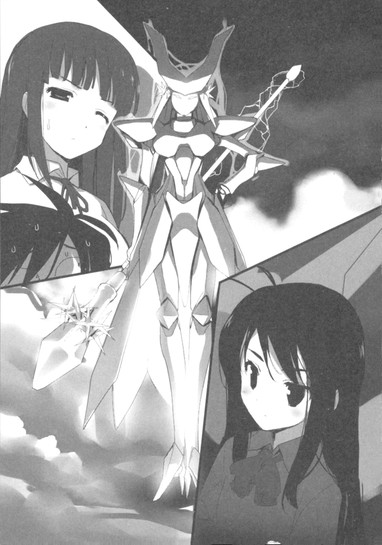
──ライダー、今の聞き捨てならないわよ！
──ちょっとちょっとぉ！
憤慨したような、それでいて甘えるような少女の叫び声。
映像中ではこの時、初代赤の王レッド・ライダーの首に、黒の王ブラック・ロータスが両手を回して寄り添っていた。だから、赤の王と親密だったという紫の王は、ぷんすかという表現がぴったりくるような声を上げたのだ。
しかし、その直後──。
ブラック・ロータスの両腕の剣が巨大な鋏の如く閉じ、レッド・ライダーの頭部と胴体を切り離した。
レベル９に達したバーストリンカーは、同じレベル９の相手に敗れた瞬間全てのバースト・ポイントを失うというサドンデス・ルールを課せられている。つまりその瞬間、赤の王は加速世界から永久に追放されたのだ。
リプレイ映像の最後に記録されていたのは、パープル・ソーンの、絹を引き裂くような悲鳴だった。
ハルユキの聞いた話では、その一幕の直後、黒雪姫は残る五人の王全員を相手に死闘を繰り広げたのだという。しかし一人も倒せず、だが倒されることもなく、三十分の対戦時間が終了した。以来黒雪姫は、二年にもわたってグローバルネットを遮断し、梅郷中のローカルネットに雌伏し続けた。去年の秋に、シアン・パイルの襲撃とシルバー・クロウの誕生という契機が訪れるまで。
そのような、余りにも重い過去を背負った二人の王たちは、更に数秒間視線とオーラをせめぎ合わせた。内心、ハルユキはブラック・ロータスが顔を伏せてしまうのではないかと危惧せずにいられなかった。黒雪姫は、自分がレッド・ライダーを不意打ちによって討ったことを心の奥底ではきっと今も悔いている。たとえ、赤の王が、もう自分がバーストリンカーであったことを憶えていないとしてもだ。
──しかし。
黒水晶のアバターは、鋭利な形状のフェイスマスクを小揺るぎもさせずに、茨の女王の視線を受け止め続けた。
やがて、黒雪姫の低く滑らかな声が、濃霧漂うフィールドに流れた。
「私もだ、ソーン。次に会う時こそ、どちらかの首が落ちるのだと確信していたからな」
動揺の色など欠片もない落ち着いた言葉に、紫の王はゆっくりとアバターの眼を瞬かせた。次に発せられた声が、わずかに冷気を増しているように思えたのは気のせいだろうか。
「......そうなるかも、ね？ たとえば、この場に集まった全員が、〈通常対戦〉から〈バトルロイヤル〉へのモードチェンジに同意したりすれば......可能性はあるよね」
ごくり、と生唾を呑み込みながら、ハルユキは「とんでもない冗談じゃない絶対同意なんかしません！」と叫びそうになるのを必死に堪えた。
だが黒雪姫は、ふ、と短い笑みを滲ませて平然と答えた。
「そうなれば、話は早いな。今日が、ブレイン・バーストというゲームがクリアされる日になるのなら、面倒な会議などする必要もなくなる」
途端、ハルユキは再度びきーんと凍り付く。その言葉は、今ここであと四人の王を狩ってレベル10になってやる、という宣言にも聞こえる......というかそれ以外では有り得ない。隣のスカイ・レイカーの、平然と立っていられる剛胆さがまったく信じられない。
紫の王は、黒の王の切り返しに小さく首を傾け。
不意に、右手の錫杖で軽く石畳を突いた。
きんっと鋭い音が響くや否や、更にハルユキの心胆を寒からしめる状況が出現した。なんと、紫の王の歩いてきた方向から、何重もの足音を綺麗にシンクロさせて、実に八人ものバーストリンカーが姿を現したのだ。
色も装甲の形状も様々。しかし、全員がとんでもない手練れであることは一目で知れる。恐らく、紫のレギオンの最高戦力を揃えてダイブさせたのだろう。
パープル・ソーンは、ここで初めてにこりと微笑み、言った。
「冗談だと思われたなら心外だな。もちろん、ちゃんと準備してきたんだよ。仮にあなたと戦うことになった時、今度こそ取り逃がさないように、ね」
示威やはったりではない。本気だ。この人の内側には、理解できると思うのもおこがましいほどの強い感情が封じられている。
息もできないほどのプレッシャーを感じ、ハルユキはごく小さく右足を引いてしまった。
だが黒雪姫は、尚も態度を崩すことはなかった。なんと、この状況で、「ふ、ふ、ふ......」と声を出して笑って見せたのだ。
「ふふ......、なるほど、これはお見それした。だがなソーン、本気で私の首を狙っているなら、その手勢はエリア境界ぎりぎりに伏せておくべきじゃないか？あっちのレディオを見習ってな」
えっ、とハルユキは対面側に座るイエロー・レディオを見た。黄色のピエロは、小さく肩を動かすだけで何も言わなかったが、確かに考えてみれば、会議が戦闘へとなだれ込む可能性が〇・〇〇一パーセントでもあるなら、黄の王が単身でやってくるはずがない。
黒雪姫の指摘に反応したのは、紫の王ではなく、八人の随員から一人抜け出してきた女性型アバターだった。
装甲色は、ワインを思わせる濃い赤紫。大きな鍔つき帽子と広がった大腿部が、まるで軍服のようだ。しかし両腰には銃ではなく、輪に巻いた鞭が装備されている。
女性士官型アバターは、紫の王から一歩引いた位置で立ち止まると、冷ややか極まる声を放った。
「虚勢もそこまでいくと滑稽だな、穴蔵の王。地面から這い出してあれこれ跳ね回っているようだが、貴様のけちくさい辺境の領土など、六王が本気になればたった一日で捻り潰せることを忘れてもらっては困る」
侮蔑的極まる言いぐさだったが、ハルユキはぐっと奥歯を噛み締めることしかできなかった。
残念ながら、士官アバターの言うことは真実だと認めざるを得ない。現在、ネガ・ネビュラスは杉並区全域を支配しているが、毎週末の領土戦争に挑んでくるのは七割以上が中小規模のレギオンで、六大レギオンからは東に隣接する〈レオニーズ〉が常時一、二チームと、南の〈グレート・ウォール〉がたまに参戦する程度だ。しかも挑戦者の平均レベルは４から５と言ったところで、７以上のハイランカーが現れたことは一度もない。
それでも、メンバーがたった五人しかいないネガ・ネビュラスにとっては、領土維持は決して楽な仕事ではないのだ。万が一、六大レギオンが総力を挙げてただ一回の戦争時間に集中攻撃してくれば、膨大な回数となる防衛戦を半数以上勝ち抜くことはとてもできず、加速世界の地図から黒の旗は消滅するだろう。
つまり、ある意味では、六──いや休戦中のニコを除く五人の王が〈様子見〉してくれているからこそ、ハルユキたちはホームエリアである杉並を守り続けていられるのだ。
女性士官アバターに何かを言い返すことはおろか、胸中で反論することすらできず、ハルユキはヘルメットを俯かせようとした。
しかし視線が足元に落ちる寸前、すぐ右隣から凛と張った声が響き渡り、ハルユキはハッと顔を上げた。
「できもしないことを、よくそこまで得意げに言えたものね、〈アスター・ヴァイン〉」
スカイ・レイカーだった。黒雪姫の副官として、士官アバターの恫喝に一歩も引かずに毅然と胸を張っている。
アスター・ヴァインという名らしい鞭使いは、鍔の下で両眼を鋭く細め、いっそう温度の低下した声で応じた。
「できもしない......だと？ 逃げ隠れている間に、戦力評価もできないほど頭を錆び付かせたのか？」
「あなたこそ、しばらく会わないうちに現実が見えないほど眼が曇ったようね」
ぴりぴりと大気が帯電するほどのやり取りを、ハルユキはただ棒立ちになって聞き続けるしかなかった。
スカイ・レイカーの言う〈現実〉とはどういう意味なのか、どれほど考えても解らない。ネガ・ネビュラスと、赤を除く五大レギオンでは、人数でも合計レベルでも比較するのも空しいほどの差がある。いったいレイカーは何を言わんとしているのか......？
疑問の答えは、わずかに間を置いて、レイカー自身の言葉でもたらされた。
「──王たちが温情でネガ・ネビュラスの領土を存続させていると思っているなら、それはあなたが鈍いか信用されていないかのどちらかよ。潰せるものならとっくに潰しているに決まっているでしょう。そうできないのは......〈王〉を名乗る彼ら自身が、その支配力が絶対的なものではないと知っているからよ」
「......なん、だと」
軋むような声を出すアスター・ヴァインに対して、紫の王は不気味な沈黙を保っている。その眼に浮かぶ光には、どのような感情も読み取れない。底冷えのする魔都ステージに、レイカーの冷静な声が響き続ける。
「いい？ 六大レギオン、と言っても、所属メンバーの数は合わせて六百を超える程度。対して、東京都心に暮らすバーストリンカーは、現状で千人を上回る。領土地図も、この千代田エリアを含め、四割近くが灰色の中立状態なのよ」
「......それがどうした。純色の六王以外のレギオンなど、どれも吹けば飛ぶような泡沫組織だろうが。貴様のちっぽけな居場所を含めて、な」
「そうね、どのレギオンも規模はささやかなものだわ。......でもね、無所属のバーストリンカーを含めて、その四百人には一つの共通点がある。即ち、〈六大レギオンに加わっていない〉という」
一瞬言葉を切り、スカイ・レイカーは、まるで彼女自身もレベル９の一員であるかの如き威圧感とともに続きを口にした。
「いい？ 彼らのほとんどは、自らの意思によって零細であることを選んだのよ。〈不可侵条約〉によって加速世界を停滞させている王たちへの反感ゆえにね。彼らは今、復活したブラック・ロータスと、黒のレギオンの動向に注目している。その〈叛逆の意思〉がリアルかフェイクかを測ろうとしている。そんな時、六王のレギオンが総力で潰しにかかったらどうなると思う？確かに、領土地図から私たちの旗はいっとき消えるでしょう。でも、黒の王本人が加速世界から消えるわけじゃないし、レギオンそのものも存続する。そして小レギオンたちの動向は、〈注視〉からもう一歩進んだものになるでしょうね。もし彼らが一つの流れにまとまるようなことがあれば、それでもあなたは泡沫と侮っていられるかしら......？」
ここでようやくハルユキは、レイカーの言わんとするところをおぼろげに理解できた気がした。
先週の、〈ヘルメス・コード縦走レース〉。あの軌道上に集った五百人以上のギャラリーたちは、かつて裏切り者として追放された黒の王が登場しても、決して罵声を浴びせたりはしなかった。それどころか、熱い声援すら送ってくれたではないか。そこには、黒の王への、〈停滞状態を打破せんとする者〉としての期待が込められていたに違いない。
あのエネルギーが、もし一つの勢力として結集することがあれば。それは、たとえ六王といえども無視できるものでは......いや、脅威と認識せねばならない事態ではないだろうか？
黙り込んだアスター・ヴァインに向けて、スカイ・レイカーは小さく右手を広げて見せた。
「理解してくれた？ いまの加速世界が、あなたが思うより遥かに緊迫した状況であることを。見せかけの停滞の下では、いくつもの大きな潮流がうねり始めているのだということを」
しんと静まりかえったフィールドに、清冽な声の残響がどこまでも広がり、消えた。
沈黙を破ったのは、かつ、と踏み出された紫の王のハイヒールだった。
顔の向きを前に戻し、まるでレイカーの指摘など歯牙にも掛けていないかの如く、ハルユキたちの眼前を静かに歩み去っていく。
アスター・ヴァインも、最後に強烈な一瞥を残して後に続いた。少し離れて、残る七名の随員も二人を追う。
紫の王は、半円形に並ぶ七本の柱のうち、青の王と黄の王のあいだの空き席に座を占めた。背後に八人のバーストリンカーがⅤ字を作って並ぶ。その威容が生み出す重圧は、明らかにこの場に集うどのレギオンよりも巨大なものだ。
──〈オーロラ・オーバル〉の領土が、杉並から遠く離れた銀座や有明でよかった。とハルユキはしみじみ感じてしまってから、慌てて背筋を伸ばした。そんな弱気をすぐそばの二人に見抜かれたら、あとでどんなお仕置きをされるか判らない。誤魔化すように、小さく呟く。
「これで......六人ですね。あと一人は、ええと」
現在集っているのは、黒、青、赤、緑、黄、そして紫の各勢力だ。ということは、残るひとつは──。
しかし、ハルユキが思考の続きを声に出す前に、黒雪姫がごく低く囁いた。
「いや、来ない」
「えっ......？」
「残る一人は、この場には現れない。間違いなく代理を送り込んでくるはずだ」
なんでそんなことが判るんですか？ とハルユキは訊こうとした。
その寸前、視界の片隅にかすかな違和感が生じた。口をつぐみ、きょろきょろと視線を彷徨わせる。
だが何も変わった様子はない。魔都ステージの東御苑本丸跡は、変わらず白い霧を静かにたなびかせている。丸く立ち並ぶ円柱群のうち、約半分の七本が斬り倒され、即席の椅子には加速世界を支配する大レギオンの代表者七名が静かに腰を────
「えっ」
それに気付いた瞬間、ハルユキはびくんと上体を震わせた。
作られた椅子は七脚。今まで登場した王は六名。だから一脚は空いているはずだ。しかし、いまハルユキの視界に映る全ての椅子が埋まっている。登場を見落とした？いや、有り得ない。緊張しまくっていたハルユキだけならまだしも、レイカーや黒雪姫までもが気付かないなどということは考えられない。
なぜなら、空いていなければならない椅子は、黒のレギオンの三人の真正面に存在するからだ。真横ならまだしも、正対する柱に誰かが近づき腰掛けたら、その動きは必ず見えたはずだ。だが現実に、ほんの十メートル少々しか離れていないその席上には、いつの間にか一人のバーストリンカーが存在している。
ひょろりとした細身だ。落ち着いたシンプルなデザインの装甲に身を包み、武器らしいものは持っていない。唯一特徴的なのは、細長く尖った頭部だろうか。前面には曲線のパーティング・ラインが刻まれているだけで、眼も口も見当たらない。円柱の端に、両手両脚を揃えてまっすぐ座っているので、まるでデュエルアバターではなく装飾的オブジェクトのようだ。全身の色は、陶磁器を思わせる、艶の薄い象牙色。
とてつもなく存在感の希薄なアバターだった。他の王たちのような、その場にいるだけで放散される濃密なプレッシャーなど欠片も感じられない。いや、実際に置物なのだろうか？まさか、最初からあそこにあった彫像を見落としていた......？
ハルユキがふとそんな迷いに囚われた、その瞬間。
象牙色のアバターが、両手を膝に置いたまま、かくりと腰を折り一礼した。上体が戻ると同時に、これも男声だということ以外に特徴のない声が流れる。
「レギオン〈オシラトリ・ユニヴァース〉所属の〈アイボリー・タワー〉と申します。白の王の全権代理としてこの会議に参加させて頂きます。よろしく」
まるで、場が加速世界の対戦フィールドから、企業の会議室に変わってしまったかのような事務的極まる挨拶だった。
それを聞いた他の王やその側近たちは、抑制されてはいるが明らかな不快感を滲ませた。恐らくは、彼らもアイボリー・タワーの出現に気付かなかったのだ。ことに、すぐ隣に座る黄の王などは、尖ったつま先の片方をこつこつ床に打ち付けて如実な苛立ちを示している。
しかし、雰囲気が悪化したのほほんの数秒だった。
中央の椅子に掛ける青の王ブルー・ナイトががしゃっと鎧を鳴らして立ち上がり、強く響く声を発したのだ。
「よし、これで全員揃ったな。まずは、七レギオンが欠けずに参加してくれたことに礼を言っておくよ。お疲れさん」
「二年半前の七王会議とは、二人ほど面子が違いますがね」
などと余計な台詞を挟むのはもちろんイエロー・レディオだ。赤の王が二代目になっていることと、白の王が代理を寄越したことへの皮肉だろうが、反応する者はいなかった青の王もかすかな苦笑いの気配を浮かべただけで進行を続けた。
「時間もないことだし、とっとと本題に入らせてもらう。──もう全員知ってることだろうから掻い摘んで話すけど、先週行われた〈ヘルメス・コード縦走レース〉イベントの真っ最中に、数百人のギャラリーの目の前で〈心意システム〉が発動されるという事件が起きた。今日の第一の議題は、この状況に我々はどう対応すべきか、ということだ。と言っても、考えられる対応策は二つに一つしかない。今まで通りシステムの秘匿に全力を尽くすか、それを諦めて全バーストリンカーに公開するか、そのどちらかだ」
「公開など有り得ない、そうでしょう？」
馬鹿馬鹿しい、と言わんがばかりに再びイエロー・レディオが声を上げた。細長い両手を広げ、大げさな動作で肩をすくめる。
「心意システムは、いわば核エネルギーみたいなものですよ？厳重に管理されていなければ、加速世界に壊滅的な災害をもたらしかねない、それが我々の共通認識でしたよね？」
ピエロが角つきの帽子をひょいと傾けると、左隣に座る紫の王が即座に異を唱えた。
「その管理が破られちゃったって話でしょ、レディオ。核にたとえるなら、世界中に原料の核物質がばらまかれちゃったって状況だよ。今更どう回収しようっていうの」
「だからといって、親切にもミサイルの製造マニュアルまで配ろうっていうんですか？大多数のバーストリンカーは、まだ心意システムの何たるかすら知らないんですよ？イベントステージ設定の不具合で押し通せばいいじゃありませんか？」
黄の王の台詞に、紫の王が再反駁しようとしたその寸前、ひとつの声が割り込んだ。
「あの、発言いいですか」
律儀に手を挙げたのは、半円の左端に座る象牙色のアバター、白の王の代理だというアイボリー・タワーだった。全員の視線が集まると、ぱたりと左腕を下ろして言う。
「対応を議論する前に、なぜこんなことが起きたのかを知るべきではないでしょうか。イベント中に心意を解放し、〈空間侵蝕〉にギャラリーをも巻き込んだというそのバーストリンカーは、いったいどこの誰で、何が目的だったんでしょうかね」
沈黙が、いっとき議場を支配する。
問題のバーストリンカーの名前と所属。それを、ハルユキはもう知っている。
だが、この場で口に出すことには巨大な躊躇いがある。なぜなら、あの謎の組織について語るということは、必然的に組織の〈副会長〉を名乗るバーストリンカーに触れるということでもあり、しかしその者の冠する色は、誰よりも敬愛する剣の主と同じ──〈純色の黒〉なのだ。そうと知れば、他の王たちは絶対に関連を疑うに決まって......
「〈加速研究会〉なる組織に属する〈ラスト・ジグソー〉。それが、イベントで心意攻撃を行ったバーストリンカーの名だ」
「っ............!?」
玲瓏たる声が流れた瞬間、ハルユキは息を呑んだ。
黒雪姫だった。黒の王ブラック・ロータスは、自らに向けられるであろう疑念を怖れる気配もなく、滑らかに言葉を連ねていく。
「組織の全容は不明だが、レギオンではなく〈サークル〉と自称していたな。他に判明している構成員は、すでに加速世界から退場しているが〈ダスク・テイカー〉と、もう一人......」
「ちょっと待ちな、ロータス」
その名前が明らかにされる寸前、ひとつの声が鋭くインタラプトした。
ハルユキたちの右に席を占める赤の王、スカーレット・レインだ。両腕を胸で組み、この場でもっとも小柄なボディに不釣り合いな威圧感を発散している。
助け船を出してくれたのかニコ、そう思ってハルユキは肩の力を抜きかけた。しかし。
ちらりと向けられたつぶらなアイレンズから、炎熱の如きオーラが吹き寄せてきて、ハルユキの呼吸を止めた。
「......先に、もう一つの議題を片付けてもらわねーと、あたしはこれ以上この場にはいられねぇよ。心意の脅威を云々するのに不適格な奴が、一人ここに紛れている。完全消滅したはずの〈呪いの力〉、究極的な心意の暗黒面をそのアバターに宿した奴がな」
３
「ほれ、とっとと席に戻れー。ロングホームルーム始めるぞー」
担任教師がぱんぱん手を叩くと、一部の生徒が不満げな声を上げた。
「えーっ、まだチャイム鳴ってないじゃーん。時間げんしゅー」
「なら、鳴った瞬間に椅子に座ってないヤツには宿題増量な！ほら鳴るぞ鳴るぞー、さん、にー、いち......」
聴覚いっぱいに鳴り響く六時間目のチャイムと、生徒たちが慌ててガタガタと席につく音を、ハルユキは頬杖を突きながら聞いた。
窓の外では、相変わらずの小糠雨が街を灰色に染めている。予報では梅雨明けは二週間後だが、その後にはすぐ期末考査が控えているので、待ちわびるという心境にもなれない。
もちろん、テストをくぐり抜ければ輝かしい夏休みがやってくるのだが、そんなロングスパンな楽しみで前向きになれるほどには修行が成っていない。目の前の一週間に襲い来る授業（とくに体育）と宿題（とくに作文）のことを考えるだけでため息をついてしまう。
まあ、宿題に関してはぐずぐず先延ばしても、提出の寸前に１バーストポイントを消費してやっつけるという荒技があるにはある。〈加速〉によって得た最後の三十分に於けるハルユキの宿題処理能力は、成績優秀なタクムも「なんでその集中力を普段から発揮できないのか」と呆れるほどなのだ。
しかし、毎日朝から夕方までびっちり設定されている授業だけは加速で集中処理するというわけにもいかない。むしろ、体育の時間にへろへろとトラックを走っている時などは、逆に減速機能が働いているのではないかという気すらする。いや、実際そうなのかもしれない。ブレイン・バーストの作動原理に基づけば、心拍が上昇することで思考のクロックも加速され、体感時間は引き延ばされるのだから。つまり走っても心臓がばくばく言わないようトレーニングすれば、体育の授業が今より短く感じられるということだろうか。よし、今度中国拳法の修行アプリでも落として、チャクラ的なパワーの特訓でもしてみるか。
見るともなく窓を見ながら、そんな益体もない思考を巡らせるハルユキの耳を、担任教師の声が素通りしていく。
「......今のクラスになって二ヶ月が経つわけだけどなー。ちょうど今ごろが、気のゆるみが出てくる時期なんだぞ。ほれ、このグラフが、四月からの遅刻と忘れ物の......」
いつもなら、終わりのホームルームは、放課後の〈対戦〉計画を練るための重要な時間だ。どこの戦域に行くか、どんな戦術を試すか、誰と戦うか、あるいは誰のバトルをギャラリーするか。シミュレーション好きのハルユキにとっては、本番の対戦には及ばないまでも充分楽しいひとときと言える。気付けばあっという間にホームルームが終わっているのが常なのだが、今日はやたらと時間の進みがのろい。
その理由は明らかだ。
ハルユキは今、対戦の計画を立てるどころではない状況に追い込まれているのだ。ある意味では、二ヶ月前に〈飛行アビリティ〉を強奪された時よりもプレッシャーは大きいとすら言える。
つまり──バーストリンカーでいられるかどうかの瀬戸際、という。
昨日の日曜日、〈七王会議〉が終わったあと、ハルユキは楓子のクルマで自宅近くまで送ってもらった。
黒雪姫と楓子の励ましにはどうにか笑顔で応えたものの、環七の歩道をとぼとぼ自宅まで帰るあいだは、やはり下を向いて舗装のタイルを数えてしまった。
俯いたままエレベータに乗り、二十三階まで上る。静まりかえった廊下を歩き、自宅のドアの手前で視界に表示された解錠ボタンに触れようと──
したその寸前、ハルユキはドアの脇にうずくまる小さな人影に気付き、ぴたりと立ち止まった。
派手なロゴ入りのＴシャツと、タイトなカットジーンズ。素足には色褪せたスニーカー。そんなラフな格好でも、男の子でないことはすぐ判った。頭の両側で結わえられた燃えるような赤毛が、薄暗い照明の下でも艶やかに輝いていたからだ。
「............に、ニコ？」
ハルユキが呆然としながら名前を呼ぶと、小柄な少女はゆっくりと顔を上げ、ニッと不敵な、それでいてどこか力のない笑みを浮かべた。
「......おせぇよ。同時に千代田エリアを出たはずなのに、十分も待ったじゃねーか」
「ご、ごめん」
思わず謝ると、尖った肩を軽くすくめる。
「ま、あたしゃパドのバイクで送ってもらったんだから、早くて当然だけどな」
「そ......それは追いつけるわけないよ。て、ていうか......」
激しく瞬きしながら、ハルユキは訊いた。
「なんで......ここに？」
するとニコは一瞬視線を外し、小さく鼻を鳴らしてから言った。
「話すと長くなるけど、廊下で最後まで聞くか？」
「あ、ああ、ごめん」
ハルユキは慌てて表示されたままの解錠ボタンに触れた。例によって無人の自宅のドアを開け、どうぞと声を掛けると、ニコはふうっと細長く息を吐き、両膝に手をついて立ち上がった。
突然の訪問者をリビングに通し、キッチンでオレンジジュースのグラスを二つ用意して戻ると、ハルユキは改めて首を捻った。
ソファに座り、窓の外の曇天を見ている年下の少女は、やはり何度見てもニコこと上月由仁子──つまりレギオン〈プロミネンス〉を支配する赤の王、〈スカーレット・レイン〉当人だ。
しかし、なぜ。ニコとは匿名メールアドレスだけでなくコールナンバーも交換しているので、連絡を取る手段はいくらでもある。それに何より、用がある相手の帰宅を玄関脇で膝を抱えて待つなど、ニコのイメージとは正反対の行動だ。ガラステーブルにジュースを置きながら、ハルユキはもういちど小さな横顔を盗み見た。
薄くそばかすの浮く頬には、普段の輝くような生気は見当たらない。むしろどこか心細そうですらある。とても、会議の席上で苛烈な言葉を放った赤の王と同一人物とは思えない。ハルユキの脳裏に、鋭い声が甦る。
──心意の脅威を云々するのに不適格な奴が、一人ここに紛れている。
紅蓮の炎にも似たその糾弾の、強烈な熱量を思い出した瞬間、まるでハルユキの心を読んだかのように目の前のニコが呟いた。
「......悪かったな、あんな言い方しちまって」
「えっ......い、いや、そんな」
一度はソファに沈めた腰を浮かせ、慌ててぶんぶん首を振る。
「そ、そりゃ最初は驚いたけど、あとで先輩やレイカーさんが教えてくれたから......。ニコがあそこで僕の......いや、僕に寄生する〈災禍の鎧〉の話を持ち出したのは、その問題で他の王たち、とくに黄の王に主導権を取られないためだ、って」
早口にそう言うと、ニコは二、三度瞬きしてから、光の加減で赤茶にも緑にも見える大きな瞳に苦笑を滲ませた。
「ちっ、お見通しかよ。ったく、可愛げのねぇ奴らだな......」
毒づきながら背中をどすんとソファに埋もれさせ、驚くほど細い脚を組むと、素足のつま先でスリッパをぶらぶらさせる。
その様子に少しばかりほっとしながら、ハルユキは小さく首を傾けて訊ねた。
「あれ、ニコはレイカーさんに会ったことあったっけ？」
「いや、直接ツラを突き合わせたのはさっきが最初だけどな。パドから話だけは色々聞いてたからな」
「は、話......って、どんな......？」
するとニコはにやりと意味深そうな笑みを浮かべ、逆に問い返してきた。
「あんた、あいつの〈ＩＣＢＭ〉って二つ名の由来知ってっか？」
「え......単純に、あの人のブースターをミサイルにたとえたんじゃ......？」
「そうだがそれだけじゃねえよ。正確には、昔のネガ・ネビュラスが、大規模領土戦でたまに使った戦法に由来してんだ。わざと敵チームの前線を押し上げさせて、戦力を分散させといてから、レイカーが単独か、支援型を一人背負ってブーストジャンプで敵の後方拠点に飛び込む。ふつう後方には装甲が紙の超遠距離型しかいねえからな、そりゃもう戦略ミサイル並みの大被害が出たらしいぜ」
「............な、ナルホド」
味方の話なのに思わず冷や汗をかきながらハルユキは頷いた。ニコは表情を和らげ、まるで自分の思い出であるかのように言葉を続ける。
「......あんたも知ってのとおり、パドは移動力の鬼だからな。そのミサイル戦法を喰らった時は真っ先に後方に戻って、レイカーと何度もばちばち戦り合ったんだと。ったくよー、停戦中つっても敵レギオンの主力の話なのに、レイカーが一線に戻ったのをあんなに喜びやがってよ......。知ってっかクロウ、パドがかなりの古参リンカーなのにまだレベル６なのは............」
そこでニコが口をつぐんでしまったので、ハルユキはつい身を乗り出した。その疑問は、かつて何度か感じたことだからだ。
「れ、レベル６なのは......？」
「──やっぱナイショだ。後で本人から聞きな」
にやりと笑い、頂きますと言ってテーブルからグラスを持ち上げる。
喉が渇いていたらしく、こくこくと勢いよくジュースを飲む少女の様子には、もう奇妙な無気力感は見つけられなかった。錯覚だったかな、と思いつつハルユキは言葉を返した。
「訊いても、教えてくれない気がすっごくするなぁ......。まあ、その、それはともかく......じゃあ、ニコは、会議でのことをわざわざ謝りに来てくれたの？」
「んだよそのメイワクそうな言い方」
グラスの縁越しにじろりと睨まれ、慌てて首を振る。
「い、いや迷惑なんてそんなぜんぜん！ ちょっとキャラ的に意外だったっていうか、あ、や、そういう意味じゃなくてその、むしろ僕のほうこそ謝らなきゃいけないなーってずっと思ってて......」
一度動きだした口は回転を止めず、もっとちゃんとした形で伝えようと思っていたことをぎこちなく音に変えていく。
「だ......だって、池袋であんな苦労して破壊したはずの〈鎧〉を僕のうっかりミスで生き残らせちゃったわけだし、しかもその、前の持ち主の〈チェリー・ルーク〉はニコが〈断罪〉したのに、僕はまだこうしてバーストリンカーでいるわけで......」
要領を得ないにもほどがあるハルユキの言葉を、ニコは思いがけず真顔で聞いた。
しかし、やがてそっと首を振り、言葉を遮る。グラスを置き、再び脚を組んでソファに深く腰掛けると、年若い王は静かに呟いた。
「いや......、あたしは別に、その件であんたを恨んじゃいねぇよ。あたしがチェリーを断罪したのは、あいつが〈鎧〉の持ち主だったからじゃねえ。あいつが鎧の支配力に呑まれ、沢山のバーストリンカーを襲った、いや喰らっちまったからだ。仮にチェリーが、鎧を自分の力でねじ伏せて制御できていれば、あたしは逆にあいつを守ったよ。他の王連中から何を言われても......な......」
ニコの声は、そこで不自然に減速した。ハルユキは瞬きし、俯けられた白い顔を見た。
いまは深緑色に見える大きな瞳には、外の廊下で見せたような暗い翳が再び浮かんでいた。今度こそ、ハルユキはその表情が何であるのかを悟った。
怖れだ。そして、怖れている自分への怒り。更に、ほんの少しだけの諦め。かつてハルユキ自身が、自分の力では何もできないと膝を抱えた時に浮かべていたはずの表情。
「に......、ニコ............」
押し殺した声で名を呼ぶと、少女は一瞬視線を持ち上げ、すぐに弱々しい笑みとともにもう一度俯いた。
「......あたしにはチェリーを守るという選択肢も、それを実行する力もあった。この半年間、ずっとそう信じていた。でもな............」
Ｔシャツの袖から出た両腕を、突然ぎゅっと抱え込む。六月の蒸し暑さの中で、まるで強烈な寒気に襲われたかのように。
「............クロウ。さっきの会議で、お前は感じなかったか？」
「な、何を............？」
恐る恐るハルユキが問い返すと、ニコ──二代目赤の王、〈不動要塞〉スカーレット・レインは、ひび割れた声で呻いた。
「あの場にいた〈王〉のなかに......本物の化け物が混じってたのを。あの情報圧......有り得ねえよ......。──あたしはな、本当は、あんただけは守るつもりでいたんだ。あんたには......チェリーを救ってもらった借りがあるからな......。今日の会議じゃ、どうにか折衷案には持ち込めた。でも......もし、奴らに本気で処刑を迫られていたら............あたしは............」
そこで口をつぐみ、ソファの上で両膝を引き寄せるニコに、ハルユキはしばらく何の言葉も返せなかった。
すぐには信じられない、というより理解できなかったのだ。ニコが他のバーストリンカーを化け物と呼び、畏怖の表情すら浮かべていることが。
ハルユキにとっては、赤の王スカーレット・レインは絶対的に格上の存在だ。同条件で対戦したら、百戦して百敗するという確信がある。彼女が全強化外装を展開した時の、超弩級戦艦の如き遠距離火力は、間違いなく加速世界最大の攻撃力のひとつだろう。何せ、主砲の一撃で新宿都庁ビルを半分吹っ飛ばしたのだ。
いや、たとえ拳銃一丁だけを装備した小柄なアバター単体でも、ニコは底知れない強さを秘めている。事実七王会議の席上で、ハルユキは赤の王から、他の王たちとまったく遜色ない巨大なプレッシャーを感じたはずだ。
小刻みに何度もかぶりを振り、ハルユキはようやく掠れた声で反論した。
「そ、そんな......。──そりゃ、僕にとってはあの場の誰もかれも雲の上だったけど、でもニコにそこまで言わせるほどの相手がいたとは思えないよ。だ、だって、ニコはあの人たちと同じレベル９ｅｒじゃないか。〈同レベル同ポテンシャル〉は、加速世界の大原則だろ......？」
すると、赤毛の少女は小さな膝小僧の上からちらりとハルユキを見て、苦い笑みとともにゆっくり首を左右に動かした。
「......どんな原則にも例外はあるってことさ。いいか、レベル９ってのは事実上、ブレイン・バーストの上限なんだよ。そこからはどんなにポイントを稼いでも次のレベルにはなれねぇんだからな。レベル10になる道は、他のレベル９リンカーを五人狩る......イコール五人をポイント全損させることだけだ。逆に言うと......」
もう一度眼を伏せ、ニコは秘やかに呟いた。
「......レベル９になってから、加速世界でどれだけの時間を過ごし経験を重ねたかは、他人には判らねぇってことだ。あたしは、その点では他の王連中にゃ負けねぇと思ってた。現実世界で無くしたものを、加速世界では二度と奪われねぇだけの力を身につけたと思ってた。でも............甘かったよ。奴らは............〈オリジネーター〉は、あたしがしがみついてるような傷なんざとうに超越しちまってるんだ。あれを......化け物以外に何て言えつつうんだよ............」
「............お、オリジ......？」
ハルユキは呆然と、独白に紛れた聞き慣れない言葉を繰り返すことしかできなかった。しかしニコはそれについては何も答えず、ついには抱えた膝に額を付けてしまった。
静まりかえったリビングに、空調のかすかな唸りだけが響く。窓の外の曇り空は徐々に鉛色を濃くし、地上の環七を流れるＥＶの車列にもちらほらヘッドライトの灯りが交じり始める。
全寮制の小学校に通うニコは、そろそろ門限が危なくなる時間のはずだが、丸めた体を動かそうとする様子はなかった。頭の両脇で細く結わえた髪すら、いつもの勢いを失って力なく垂れているようだ。
──僕は今、何かを言うべきなんだ。ハルユキはそう感じ、懸命に言葉を探した。
考えてみれば、あのニコが、会議中の発言を謝るためだけに杉並まで生身を運んできたとは思いがたい。もしかしたら今、あの前髪の下で、赤のレギオンの仲間には......最側近のパドさんにすら見せられない顔をしているのかもしれない。
「............」
適切な言葉などまるで思いつけなかったが、それでも何かを言うべく、ハルユキは大きく息を吸った。
しかしそれよりも早く、ニコがひょいと顔を上げた。そこには、思いがけず輝くような満面の笑みがあった。唇が動き、それまでとトーンの激変した声が高く流れた。
「いきなりヘンなこと言ってゴメンね、おにーちゃんっ」
「............う、い、いや、その」
これには眼を白黒するしかない。ニコのこの怪しげな〈天使モード〉は、ハルユキをからかったり煙に巻くためのワザだと解っていても、生まれついての一人っ子としては笑顔でお兄ちゃんと呼ばれた時点で不可避的にアタフタしてしまうのだ。
「今のぜんぶ忘れて！ あっ、あたしそろそろ帰らなきゃ！ジュースごちそうさま！」
あらゆる語尾に星屑のエフェクトが見えるような可憐ボイスを連射し、ニコはひょいっとソファから飛び降りた。そのまま、とてとてとリビングを小走りに横断していく。
そこでようやくハルユキも動転を押しのけて立ち上がり、細い背中に声を掛けた。
「ま、待ってよニコ。何か......もっと他に、話があったんじゃないの......？」
すると、小柄な少女は、ドアの手前でぴたりと脚を停めた。一瞬の躊躇いを滲ませてから、不意にくるりと身を翻す。もう一度にっこりと笑いながら連ねた言葉は、思いがけないものだった。
「あのね、ハルユキおにーちゃん。あたしたちのどっちかが......もしかして両方がブレイン・バーストを無くしたら、きっと相手のこと全部、何もかも忘れちゃうよね」
「えっ............」
──〈関連記憶全消去〉。ハルユキがほんの二ヶ月前に知ったばかりの、ブレイン・バースト喪失者に適用される最終ルールだ。黒雪姫ですら、その時まで噂レベルの情報しか持っていなかったその事実を、ニコはいつから知っていたのだろうか。
息を呑むハルユキの顔を上目遣いに覗き込み、ニコはいきなり右手を突き出すと、驚くほど細い小指だけを伸ばした。
「だから、約束しよ。ニューロリンカーのアドレスブックに、見覚えのない名前を見つけたら、データ消す前に一通だけメールを出すって。そしたら、もしかしたら、もう一度............」
「............りた。有田！ おーい、聞いてるのかー」
太い声で突然苗字を呼ばれ、ハルユキは一日前の記憶から引き戻された。
胸に込み上げかけていた痛みを懸命に呑み下す。何度か息を吸い、どうにか思考のギアを入れ替える。
「はっ、はい！」
慌てて応答しつつ、半ば反射的に立ち上がると、脚にぶつかった強化プラスチック製の机と椅子がガタガタンと鳴った。それでようやくここが自宅のリビングではなく二年Ｃ組の教室であることを思い出す。
恐る恐る視線を動かすと、教卓では担任教師の菅野が渋い顔を作り、周囲の生徒たちはハルユキのオーバーアクションにくすくすと忍び笑いを漏らしていた。
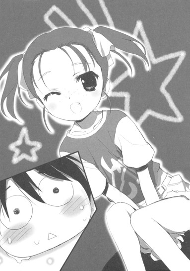
その笑い声には、一年生の時のような嘲弄の響きは──〇パーセントとは言えないまでも──聞き取れない。このクラスでのハルユキは、ヒエラルキーでは相変わらず底辺に属するものの、〈無害な丸っこいヤツ〉的な立ち位置をどうにか確立しつつあるのだ。もちろんそのポジションに不満はない。それどころか理想的と言っていい。
だから、現在のようにイージーミスで無用な注目を集めてしまうというのは、全力で避けねばならない状況だ。これをきっかけにクラスの隠れヤンキー君が、あいつ軽くイジメてストレス解消してみんべ、などと思いついたら堪ったものではない。
ゆえにハルユキは、やらかしちゃったお調子者に相応しい照れ笑いを浮かべつつ席につこうとした。
しかし、なぜか周囲から、ある種の期待めいた気配が向けられているのを感じてぴたりと動きを止める。生徒たちが一様に浮かべている表情は、ハルユキが何かを言い出すのを今か今かと待っているかのようだ。
──な、なんなんだこの空気。僕はここで何をするべきなんだ。まさかボケろというのか？一発芸で笑いを取るなどという超高難易度ミッションが発動しちゃったのか？
と脳内で高速思考し、ぶわっと冷や汗をかきかけたところで──。
「おー、有田。立ったってことは、立候補してくれると考えていいのかぁー？」
という、思いがけない菅野の声が響いた。
──立候補？ 何に？
ここまで担任の話を完全に聞き流していたため、前後のつながりがさっぱり解らない。想定外の展開に硬直しつつ、視線を教師の背後にフォーカスする。しかし仮想黒板には何の文字も書かれていない。
──慌てるな、考えるんだ。ロングホームルームで募られる役回りと言えば......そうだ、学校からのお知らせ的なテキストを読み上げる係だ。九分九厘それに間違いない。
そこまでを瞬時に考えたハルユキは、視線を仮想デスクトップに戻した。すると新規受信エリアに、いつの間にかドキュメントファイルが一通着信しているのに気付く。
肉声による朗読は、決して得意ではない。しかし国語や英語の授業ではままあることだし、自分の考えを口述することに比べれば遥かにマシだ。この状況では、「違います」と言って座って空気を冷やすよりも、オッチョコチョイついでに朗読役を受け入れるほうがより穏便な選択というものだろう。
以上の思考展開により行動決定を完了したハルユキは、頭を上げて菅野の視線を受け止め、はっきりした声で「は、はい、やります！」と答えた。
すると──突然クラス中から、「おおっ！」という感嘆の声が沸き起こり、万雷の拍手がそれに続いた。
「..................はい？」
な、何この反応。たかが朗読係に立候補しただけでなぜこの拍手。
再度硬直するハルユキの視線の先で、菅野がうむうむと頷き、言った。
「先生、有田はやる時はやるヤツだと信じてたぞ！Ａ組とＢ組はどうせくじ引きになるだろうからな、Ｃ組が立候補で決まってくれたことは実に嬉しい！」
何か、とてつもなく嫌な予感に襲われつつ、ハルユキは新着ファイルをクリックしてみた。
軽やかな効果音とともに展開したドキュメントには。
【飼育委員会新設のお知らせ：二学年各クラスより一名ずつ、計三名の委員を選出します】
と、素っ気ないフォントが並んでいた。
「......し、しいくいいんん!?」
というハルユキの呻き声は、尚も続く拍手にかき消された。
──シイクイイン。てつまり、動物を飼う係という意味？
解りきったことをロースピードで考えつつクラスを見回すと、呆れ顔で首を振るチユリと、ヤレヤレと苦笑するタクムの顔が眼に入った。
「......あのねぇハル、ぼーっとしてたのはいつもの事としてもさ......」
放課後、部活動が始まる前の短い時間。
自分の机でぐったりし続けているハルユキの前にやってきた幼馴染みの倉嶋千百合は、じっとりした視線を向けつつ言った。
「状況が判らなかったなら、せめて配布ファイルを開くくらいすればいいじゃん！どーしてそう予測だけで突っ走るかなー！」
「まあまあ、チーちゃん。ハルの思い込み暴走特急っぷりは今に始まったことじゃないよ」
とは、チユリの隣に立つ黛拓武の弁だ。それフォローになってないぞと思いつつも反論はできない。椅子の上でずるずる体を滑らせ、力なく言う。
「いいんスよ、もう。やるッスよ、飼育委員でも何でも」
「......無理矢理押しつけられたとかなら、あたしも何か言えたけどさー。ああも見事に立候補されちゃ、どうしようもなかったわよ」
チユリははーっとため息をつき、不意に表情を改めた。猫っぽい瞳に真剣な光を浮かべ、大きな髪留めが光る頭をぐっと寄せてくる。
「でも、実際のとこ、委員会活動なんかしてる余裕あるの？だって、ハルはあと一週間以内に......」
その続きは、同じように腰を折ったタクムが、低い声で囁いた。
「......アレの寄生を〈浄化〉しなきゃならないんだよ、何がなんでも」
────そう。
今週、つまり六月十七日月曜日から二十三日日曜日までが、ハルユキに──シルバー・クロウに与えられた〈執行猶予期限〉なのだ。
昨日の七王会議では、最終的に二つの決議が採択された。
まず、謎の組織・加速研究会の攻撃については、〈情報収集の継続〉。これにはハルユキも内心ヌルすぎると憤慨したが、何せ組織の全容すら不明な現状では反撃のしようもなく、致し方なしというところだ。
そして、その温さを相殺するかのように厳しい決定が、シルバー・クロウのクロム・ディザスター化については下された。
今日を含めた七日間で、災禍の鎧クロム・ディザスターの寄生を完全解除できねば、ハルユキの首には五人の王によって高額の賞金が懸けられる。しかも賞金となる大量のバーストポイントは、シルバー・クロウに勝利した回数に応じて分配されるというシステムだ。
そんなことになれば、一歩でも杉並エリアを出た瞬間に高レベルを含むバーストリンカーが山ほど襲ってきて、ハルユキのポイントはあっという間に枯渇するだろう。何せ、〈鎧の破壊〉という大義名分があるのだ。大勢で一人を狙うことを躊躇う必要はない。
もちろん、同じく賞金首である黒雪姫に倣って杉並に引きこもっていればグローバルネット接続中も対戦を拒否できるが、それをすると今度はポイントを獲得できなくなる。レベルアップの停止は、バーストリンカーとしてのゆるやかな死と同義だ。
つまるところ、〈王命による抹殺指令〉は、それに正当性さえあれば死刑宣告に等しいと言える。黒雪姫が二年間も生き延びることができたのは、ニューロリンカーのグローバル接続をひたすら遮断する鉄の意思力はもちろんだが、〈既にレベル９に到達していたこと〉も大きい。ハルユキには、後者はもちろん、前者も恐らく欠けている。
「......一週間、か......」
呟き、ハルユキは机の上に置かれた自分の両手を見下ろした。
意識せずとも、艶やかに輝く白銀の装甲が二重写しになる。シルバー・クロウは、いつでも変身できて当たり前の、もう一人の自分だ。あの姿になれなくなる──バーストリンカーではなくなる、と言われてもまるで現実味がない。
いや、そう感じるのは、ここが現実世界だからだろうか？僕にとっての現実は、もうあの世界にだけ存在するんだろうか......？そうだとすれば、ブレイン・バーストを失った時、僕はいったいどこに行けばいいんだろう......？
そんな事を考えた瞬間、ハルユキはようやく、小さな悪寒めいたものに襲われて背筋を震わせた。耳の奥に、高く澄んだ少女の声が甦る。
──約束しよ。ニューロリンカーのアドレスブックに、見覚えのない名前を見つけたら、データ消す前に一通だけメールを出すって......。
演技のはずの天使モードであんなことを言ったニコがどこまで本気だったのか、ハルユキには解らない。あのあとニコは無理矢理にハルユキの右手と小指を絡め、そのままパタパタと走るように帰宅してしまった。
忘れるはずがない。たとえ加速世界の記憶は消されても、現実世界で絆を育んだ人たちのことは絶対に忘れない。そう確信するいっぽうで、鋭い不安も胸に兆す。もし自分がいつの間にか現実世界のリアリティを見失っていたら......〈現実〉というタグが振られた記憶が、気付かないうちに空っぽになっていたとしたら............。
いきなり込み上げてきた恐怖に両手をぎゅっと握り、いっそう深く俯こうとしたが、それより早く視界を小さな手が横切り、ハルユキの左拳を包み込んだ。
「大丈夫だよ、ハル」
優しい声に顔を上げると、そこにはチユリのいつもの微笑みがあった。
「そうさ。きっとすぐに、何もかも解決するよ」
並んで立つタクムもきっぱりとそう言い、竹刀ダコのある手を伸ばしてハルユキの右拳をぽんぽんと叩いた。二人の幼馴染みはちらりと視線を見交わし、何かを確認したかのように頷くと、もういちどハルユキを見た。
「それにね、ハル。あたしたち、相談して決めたの。もし一週間経っちゃってハルに賞金が懸けられても、あたしとタッくんが、同じペースでレベルアップできるだけのポイントをハルに供給しよう、って。だからハルは、何も心配しなくていいの」
そう囁いたチユリの顔を、ハルユキはまじまじと凝視した。すぐに椅子から腰を浮かせ、激しく首を振る。
声のボリュームは限界まで抑えつつも、半ば叫ぶような勢いでハルユキは言った。
「だ......だめだ！ そんなことしたら、お前たちまで賞金首になりかねないぞ！奴らは、オレたち全員を的にかける口実ができるのを待ち構えてるんだ！」
「おいおいハル、ぼくは一応君より先輩なんだぜ。秘密裏にポイント移動できる方法なんか、幾らでも知ってるさ」
眼鏡のブリッジに触れながらにやりと笑ったタクムは、すぐに視線を右下に走らせ、ハルユキの反論を封じるかのように体を起こした。
「おっと、そろそろ部活に行かないと。ハル、飼育委員の活動があんまり時間取られるようなら言ってくれ、代われる範囲で代わるから。ともかく今週は、マスターの立案した〈浄化計画〉に最優先で取り組んでくれよ」
「............ああ、すまない、タク」
色々な言葉を呑み込んで、ハルユキは頭を下げた。
災禍の鎧浄化計画。それは、七王会議でシルバー・クロウの処遇が決定したのち、黒雪姫が憤然としながらも組み上げた、クロム・ディザスター因子を消滅させるためのミッションだ。三つの段階から成っているらしいが、まだハルユキたちは全容を教えて貰っていない。顔を上げながら、半ば以上自分に向けて言う。
「詳しいことは解らないけど......ともかく今は全力を尽くすだけだよな......」
「うん、ぼくらも最大限協力するから。じゃあ、また後でね」
タクムはもう一度ハルユキの右肘のあたりを軽く叩いて身を翻し、剣道場へと小走りに去っていった。それを見送ってから、チユリももう一度口早に囁いた。
「あたしも部活行くけど、何かあったら遠慮しないで言うんだよ。あたしたちは......ええと......仲間、っていうか......同志、でもない......ええとぉ......」
──家族。そうだよな。
というハルユキの心の声が、まるで聞こえたかのようにチユリは口を止め、次いで大きく笑った。そのまま右手を挙げ、ぱたぱたと出口に駆けていく。
一人残されたハルユキは、鞄を肩に掛けながら、胸の奥で呟いた。
リアルとかバーチャルとか、そんなの本質的な問題じゃない。僕とタク、僕とチユ、僕と先輩やレイカーさん、そしてニコ、パドさん、その他多くの人たちを結びつけるものはいつだって〈ここ〉──心の中にある。
僕はそれを守りたい。失いたくない。有田春雪として──そしてシルバー・クロウとして。
ちらりと時計を見ると、ファイルに指定された集合時間まであと五分しかなかった。一階の昇降口へと急ぐあいだも、ハルユキは決意を新たにしていた。
この一週間の猶予は、即時の断罪を主張する黄の王、紫の王に対して、黒雪姫やニコが懸命に勝ち取ってくれた貴重な時間だ。絶対に無駄にはできない。うっかり立候補してしまった予定外の委員会活動だが、その中にすら何らかのヒントはあるはずだ。今はただ、万事に一生懸命取り組むだけだ。
「よし！」
と小声で叫び、外に出ると、いつの間にか雨は上がっていた。
４
私立梅郷中学校は、東京都杉並区の東側、青梅街道と五日市街道にほど近い一角に存在する。
一学年三クラスと規模は小さいが、敷地面積はそこそこ広い。三百メートルトラックを備えたグラウンドの北側には三階建ての第一校舎棟が東西に伸び、その中央部から北に向けて運動棟が接続している。そしてその反対側には、再び東西方向に第二校舎棟が建つ。つまり、全体としてはカタカナのエの字型をしているわけだ。
各学年の教室と学生食堂は、新しい第一校舎に集中している。対してやや旧い第二校舎は、一階部分に職員室と校長室、生徒指導室が並び、二階三階は倉庫と、今はほとんど使われない各種専門教室に占められる。ゆえに、立ち入る生徒はいないに等しい。一年生の頃、ハルユキが第二校舎三階の男子トイレを〈避難所〉に使っていたのはそれが理由だ。
しかし、そこよりもいっそう生徒が近寄らない、というよりも意識すらしていない場所がある。第二校舎の更に北側、コンクリートの壁と高い塀に挟まれた細長い空間。
ハルユキが、新設された飼育委員会のメンバーとして招集されたのは、その湿っぽい隙間を通り抜けた北西の角という、梅郷中の隅っこオブ隅っこだった。
「......こんな場所が、学校にあったんだなあ......」
その建物を眺めながら、ハルユキは呟いた。
建築物と言うにはあまりに小さい。床はせいぜい縦横四メートル、高さは二メートル半。左右と奥の壁はいまどき天然木材の板張りで、屋根は恐らくスレート葺きだろう。
そして前面は全て、三センチほどの目で組まれた金網となっている。つまりこれは檻だ。もちろん、悪いことをした生徒を閉じ込めるためのものではあるまい。動物を飼うための飼育小屋なのだ。
しかし、どれだけ金網に顔を近づけて眼を凝らそうと、小屋の中には何もいないようだった。代わりに、綱の隙間から入り込んだ落ち葉が分厚く堆積している。あの下にはきっと微生物が山ほど生活しているに違いないが、まさかそれを飼っているわけでもあるまい。
「飼育委員がいて、飼育小屋があっても、肝心の動物がいないよな......」
首を傾げつつ、もう一度独りごちる。後から運び込まれるのだとしても、なぜこのタイミングなのかが解らない。
その時、背後からざくざくと複数の足音が聞こえてきた。びくっと振り向くと、前庭方向から近づいてくる二人の生徒が眼に入った。男子と女子一人ずつ。ネクタイとリボンの色はハルユキと同じ青だが、顔にあまり見覚えはないので違うクラスだろう。ということは、彼らがハルユキと同じく新たに飼育委員へと任ぜられた同僚たちに違いない。
とりあえず挨拶しようとハルユキは一歩踏み出しかけたが、それより早く、男子生徒のほうが大ボリュームで叫んだ。
「うええ、ンだよこれ汚ったねー！ 葉っぱ超積もってんじゃんよ！」
続けて女子が、情感たっぷりに意見表明する。
「だっるううぅぅー。こんなの掃除しろとか意味わかんない。マジだるぅー」
口ぶりからして、二人は立候補ではなくクジ引きで選出されたようだった。とは言えハルユキも似たようなものではある。何せ勢いと勘違いで立ってしまったのだから。
成り行きはどうあれ、事ここに至った以上はこの二人と友好的に委員会活動を遂行するしかない。大きく息を吸い、そのわりには実に弱々しい声で、ハルユキは呼びかけた。
「あの......、とりあえず、役職だけでも決めちゃおう」
委員任命後に改めて配信されたドキュメントによると、本日の活動内容は二つ。一つは委員長の選出で、もう一つがこの飼育小屋の清掃だ。その両方を完了し、委員全員が認証した日誌ファイルを学内システムサーバーに提出せねば、今日は帰宅できない。
掃除がかなり大変そうなのは小屋の惨状を見れば明らかなので、せめて役職決定だけでもサクッと終わらせたいところだ。ハルユキは、二人のどちらかが「やる」と言い出さないかと淡い期待をしつつ数秒待った。委員会活動は成績データの加点要素となり、高校受験に影響するので、生徒によっては積極的に○○委員長の履歴を欲することがないわけではない。
──のだが、立候補しなかった時点で、この場の誰もがそんなポイントを狙っていないのは明白だった。五秒経っても二人ともに口を開かないのを確認してから、ハルユキは弱々しく笑いながら言った。
「............じゃあ、僕がやらせてもらっていいかな、委員長」
ここで「やってあげてもいい」という言い方すらできない自分に内心うんざりしつつ反応を待つと、帰宅部だったわりに相当色黒の男子と、髪に内巻きのパーマを当てた女子はあからさまにほっとした表情を作り、同時に頷いた。
「いいぜ」「よろしくぅー」
三人同時に仮想デスクトップに指を走らせ、新たに出現した委員会活動タブを開くと、役職欄にハルユキの名前をセットして承認ボタンをタッチ。これで学内ローカルネット上でも、ハルユキが飼育委員長として記録されたわけだ。
ついでに残り二人の名前を確認すると、男子が浜島、女子が井関となっていた。三人だけの委員なので、副委員長以下の役職は要求されていない。
──こんなことなら、学期の始めに図書委員あたりに志願しておくんだった。
としみじみ思いつつ、右手の一振りでウインドウをワイプ。ともあれこれで一仕事終了だ。しかし問題はもう一つの仕事、飼育小屋の掃除である。
改めて小屋を見ると、板壁の汚れもさることながら、やはり床に堆積した落ち葉が難物と思えた。厚さ五センチ以上ありそうなそれは、道具なしではどうにもなるまい。ドキュメントによれば、中庭の掃除用具置き場内の備品ならばあらかじめ使用許可が出ているようだ。
「じゃあ、まずは竹箒とちり取りを............持ってくるから、待っててね」
ぼそぼそと言い、第二校舎を挟んで反対側にある中庭へと小走りで向かう。一年生の頃、パンを買いにパシらされた時のように、背後から「そこからダッシュダッシュ！」と言われないだけマシだ、などと考えてしまうハルユキだった。
実際に取りかかってみると、飼育小屋の清掃任務は考えていたより遥かに大変だった。
積もった落ち葉が乾いていれば、箒でばっさばっさと掃き出せたかもしれないが、折しも梅雨である。しかもどうやら長年にわたって少しずつ積もったものらしく、下のほうはほとんど腐葉土と化して床にがっちり貼り付いている。古めかしい竹箒──さすがに素材は天然ものではなく竹に似せた硬質のプラスチック繊維だが──では表面を削るばかりで、固着層には歯が立たない。
それでも二十分ほど格闘したところで、ついに女子の井関が音を上げた。
「あ──もぉ──、手と腰マジ痛った──い！」
「うへへ、ババくせぇー」
男子の浜島が混ぜ返すと、じろりと威圧的に睨み付ける。ハルユキだったら石化しているであろう一瞥だ。
「マジむかつくんだけど。つーかあんた、さっきから同じとこいい加減に掃いてるだけじゃん？」
井関に半ギレ口調で問い詰められ、今度は浜島が舌打ちした。
「ちっ、るっせーな。おめーこそ、俺らが掃いた葉っぱテキトーに外に出してるだけじゃねーかよ。ラクしてんじゃねーよ」
「は？ 意味わかんないんだけど？ その言い方ありえなくない？」
刻一刻と険悪さを増していく同僚委員たちのやり取りに、ハルユキは高速で竹箒を動かしながらだらだらと脂汗を流した。本格的なケンカが始まる前にインタラプトをかけ、丸く収めるべきだと解ってはいても、口を開くどころか顔すらも上げられない。
──いや。過程はどうあれ、僕は立候補して飼育委員になり、もいっちょ立候補して委員長にもなったのだ。ここはひとつ、二人にガツンと言ってやらねばならない。それが僕の責任というものではないか。
「......あ、あの！」
全身に決意をみなぎらせ、ハルユキは声を発した。一触即発だった井関と浜島が、揃ってじろりと視線を向けてくる。
「............あ、あの......」
大きく空気を吸い込み、下腹に力を入れて、ハルユキはガツンと言った。
「............どうせこれ、下校時間までに終わらないからさ......。その、君たちは日誌に認証だけしてくれれば、もう帰っていいよ......。僕が形だけ残っておくからさ......」
一分後。
同僚たちがピュアな笑顔と感謝を残して高速離脱していき、一人残された狭い裏庭で、ハルユキははぁーっと深いため息をついていた。
正直に告白すれば──。
他のメンバー二人が動物好きの心優しい女子で、思いがけずハートウォーミングな委員会活動が展開される、というような期待を一ミリグラムも抱いていなかったとは言えない。だが考えてみれば、そんな生徒が存在するならば、もっと早く飼育委員会が設立されていて然るべきであり、この状況は論理的な帰結なのだ。いや、最悪の場合は、ハルユキ以外の委員二人が、一年の頃さんざん虐めてくれたようなアウトロー生徒になっていたことも有り得る。そう考えれば、むしろ幸運に感謝すべきだ。
等々と自分を慰めながら、ハルユキは改めて飼育小屋を眺めた。
床に積もった落ち葉は、まだ半分も取り除かれていない。視界右下の時計は午後四時十五分を指している。強制下校時刻は六時なので時間はまだあると言えばあるが、ほとんど土と化した黒い層に、これ以上竹箒一本で挑んでも無駄というものだろう。本気でこの小屋を綺麗にするつもりがあるのなら、だが。
「............ま、一日でやんなくてもいいよな。どうせ動物もいないんだし......」
呟き、ハルユキは右手の箒を地面に投げ出した。あとは適当なゲームアプリで下校時刻まで時間を潰して、頑張ったけど終わらなかったという体裁だけつけて明日また続きをすればいい。そう考えつつ、外塀の根元の段差に座り込もうとした、その寸前。
────あの人も。
という思考がちかっと閃き、ハルユキは動きを止めた。
あの人、黒雪姫も、きっとまだ帰宅していないはずだ。遠く離れた生徒会室で、月末に迫った学園祭に関連するタスクを一心不乱に処理しているに違いない。いや、チユリも、タクムもそうだ。それぞれグラウンドと剣道場で、懸命に体を動かしているのだろう。
「......みんな、毎日、授業終わってからこんなことしてたのか............」
掠れた嘆声を漏らしながら、汚れた両手をじっと見る。ここで頑張ったところで、誰に褒められるわけでも、何が貰えるわけでもない。なら一体、何のために課外活動などするのか。
黒雪姫は以前、生徒会活動をしているのはバーストリンカーとして学内ローカルネットを掌握するため、と言っていたがそれだけではない気がする。そう、きっと、黒雪姫もタクムもチユリも、自分に対して何かを証明し続けようとしているのだ。なのにハルユキは、万事真剣に取り組むというほんの数十分前の決意すら、危うく放り捨ててしまうところだった。
「.........まったく、僕って奴は......」
深く息を吐き、ハルユキは身を屈めると、地面から竹箒を拾い上げた。
五分ほどの作業で、小屋から掃き出せる限りの落ち葉を取り除いたハルユキは、手を止めてしばし考えた。
効率のために工夫することは、サボリには当たるまい。下校時刻までに腐葉土層を処理するためには、より適した道具と手段が必要だ。大量の水で洗い流すのが一番と思えるが、手近な水道は、動物の飲み水用とおぼしきちっぽけな蛇口が小屋の脇に用意されているだけだ。
試しに捻ってみたが、やはりちょろちょろと頼りない水流が零れる程度で、バケツに一杯溜めるだけでも相当な時間がかかりそうだった。懸命に頭を絞っているとようやく、委員会の長には、一般生徒よりも上位の学内ネットアクセス権が認められていることを思い出す。
仮想デスクトップから校内マップを呼び出したハルユキは、まずインフラ情報から水道ラインだけをオーバーレイ表示した。飼育小屋には極細の水色線が一本伸びているだけだが、すぐ近くの地面に、より太いパイプと元栓が埋められているらしい。その位置をタッチしながら周囲を見回すと、三メートルほど離れた校舎脇に下向きの矢印がＡＲ表示される。
「水道はあそこ......で......」
呟いてマップをいったんリセットし、次に学校の備品リストから長さ五メートル以上のホースを選択して位置情報を重ね合わせる。すると、目の前の第二校舎一階の男子トイレ用具ロッカーに一本置かれているようだ。光点をクリックし、ポップした窓から使用許可を申請する。ふつうは生徒がアクセス権限外の備品に触れることすら許されないのだが、一秒後、システムから認可のレスポンスがあり、ハルユキは思わず声を出した。
「おお......さすがは委員長。あとは......」
再び備品リストをスクロール。大型のシャベルをピックアップすると、これは中庭の用具入れにあるようなので使用に問題はない。最後にデッキブラシを検索。前庭の用具入れにタイル清掃用のものを発見し、許可を取る。
「これでよし、と。さぁーて、もうひとガンバリッシュ！」
どこかの誰かが聞いていたら、俺様の真似すんじゃナッシン！と怒りそうなかけ声を発し、ハルユキはまず前庭目指して駆け出した。
元栓のアタッチメントに繋いだホースから放たれる高圧水流で、飼育小屋の床に堆積した落ち葉を攻撃する作業は意外に楽しく、ハルユキはつい『赤系の遠隔技ってこんな感じかなー』などと考えてしまった。
しかし、さすがに厳格な学内システムからは無制限の水道使用許可は与えられず、許された使用水量のバーが視界端でみるみる減少していく。真剣に照準を合わせ、固着部分を次々に剥離させる。最後にブラシで洗い流すことを考えると水量を使い切るわけにはいかないので、二割ほど残してハルユキは水栓を止めた。
飼育小屋の床面は、大量の水でどろどろに溶けかけた古い落ち葉に覆われ、作業開始前より状況が悪化してしまったようにも思える。一瞬後悔しかけるが、意を決してホースをシャベルに持ち替え、小屋の中に踏み込む。
対梅雨用装備として防水素材のハイカットスニーカーを履いていたのが幸いし、泥水は靴の中にまでは浸入してこなかった。もちろん帰宅してからしっかり洗わなければならないだろうが、後のことは後で考えればいい。
「よっ......せ！」
声を出しながら、シャベルを泥の塊に突っ込むと、ほとんど抵抗なく床まで刃先が通った。そのままずりずりと床を擦りながら、黒いどろどろをごっそりすくい取る。重みにふらつきつつも、それを出入り口から外に放り捨てる。
ほんの、二十センチ掛ける四十センチ足らずの面積ではあるが、ついに姿を現した本来の床面をハルユキはじっと眺めた。
何だか不思議な感覚が体を包んでいた。やっかいな宿題を片付けた時とも、何度も殺されたボスキャラを倒した時とも違う、ずっしりとした手応えを感じた。思わず薄く涙ぐみそうになってから、慌ててぶんぶん首を振る。まだ達成感を味わうのは幾らなんでも早すぎる。
シャベルを握り直し、泥をもうひとすくい捨てる。もう一度。一歩進んで、もう一度。
それだけで肩と腰が痛くなってきたが、何かに突き動かされるようにハルユキは作業を続けた。一山捨てるたびに体力を消耗していく実感はあるが、同時にシャベルの使い方や腰の入れ方も学習され、効率は徐々に上がっていく。
地道な作業をひたすらに繰り返しているうち、ふと記憶の片隅がちくちく刺激される気がした。前にも、いつか、どこかでこんな事をしなかっただろうか？だが、子供の頃から本物の土に触れたことすらほとんどないし、家の掃除は母親が週一で契約しているハウスキーピングサービス任せだ。
背中の痛みも忘れて懸命に記憶を掘り返していると、五分ほどかかってようやく気付いた。
現実世界の思い出ではない。加速世界──それも上位の〈無制限中立フィールド〉だ。
二ヶ月前、初めて出会ったスカイ・レイカーに旧東京タワーの天辺から突き落とされ、高さ三百メートルの絶壁を素手で登るためにハルユキはひたすら地道な修行を行った。両手に剣のイメージを宿し、鋼のように硬い壁を何千、何万回と突いたのだ。あれこそが、〈心意システム〉──ブレイン・バーストに秘された究極の力のとば口に立った瞬間だった......。
「............？」
不意に──。
自分の思考が、何か、とても大切なことにほんの一瞬近づいたように思えて、ハルユキは眉を寄せた。
がっしがっしとシャベルを動かしつつも、その思考のしっぽを掴もうとする。
心意システム。強固なイマジネーションの力で加速世界の理に働きかけ、事象を上書きするロジック。
その威力は凄まじいのひと言だ。達人の心意はゲームルールの制約を超え、大地を割り天を裂く。当然のことながら、現実世界には存在するはずのない超常のパワーだ。
────でも。
でも、その本当に根っこのところは。原因が結果を導く、その単純な仕組みは、もしかしたら............。
がちっ、と突然シャベルの先が壁にぶつかり、ハルユキの手を痺れさせた。
「いっ......！」
慌てて掌をふうふう吹き、痛みが去ったところで顔を上げる。
いつの間にか、あれほど溜まっていた古い落ち葉の塊は、ほぼ完全に小屋の中から消滅していた。代わりに、金網の向こうにはちょっとした小山が出現していて、ハルユキにもそれを自分がシャベル一本で作ったのだとはなかなか信じられない気分だった。
「............やれば、できるもんだなぁ！」
直前の思考はどこかに吹き飛び、ハルユキはそう声に出しながら大きく伸びをした。強張った背中がみしみし軋んだが、その痛みすらどこか爽快に思えた。このままどすんと寝転がったらさぞ気持ちいいだろうが、そうするためには作業にもう一仕上げが必要だ。床にはまだすくい切れなかった落ち葉と泥が残っている。
小屋から出たハルユキは、右手のウェポンをシャベルからデッキブラシに持ち替えた。更に左手にはホースを構える。あとは、少しずつ水を掛けながらブラシで擦ればかなり綺麗になるはずだ。時刻は午後五時を回っているが、夏至が近いのでまだ充分に明るい。強制下校時刻の六時までに作業を終えることは充分可能だろう。
意気揚々と小屋に戻りかけてから──ハルユキははたと気付いた。
ホースからの水流をオンオフするには、根元のバルブを操作せねばならない。しかしそのたびに離れた水道栓まで戻っているのでは非効率極まりない。と言って、水を出しっぱなしにすれば、システムから許可された水量をすぐに使い尽くしてしまう。
「......うーん......」
小屋と元栓を交互に見ながら懸命に考える。しかし、今度ばかりはスマートな解決法は浮かんでこない。どうせ水流量の監視までするならバルブの開け閉めも遠隔でできるようにしとけよ！と思ってももう後の祭りだ。
こうなったら、時間がかかっても小屋と元栓を行ったり来たりするしかないか......と覚悟を決め、ハルユキはとぼとぼと戸口に向かおうとした。
腐葉土の山を回り込み、数歩進んだ──その時。
視界中央に、黄色い電波マークのアイコンが点滅した。続いて下部に【ＡＤＨＯＣＣＯＮＮＥＣＴＩＯＮＲＥＱＵＥＳＴ】の表示。
アドホック・コネクションとは、複数のニューロリンカー同士を、サーバーを介さずに無線相互接続する機能だ。しかし学校内で利用されることはほとんどない。有線直結よりも通信速度と秘匿性に劣るし、何より学内ローカルネットにログインしていれば無用な機能だからだ。
いったい誰がこんな要求を、とハルユキはきょろきょろ左右を眺め、最後に振り向いて真後ろを見た。
しばし、理解不能だった。
一人の子供が、ハルユキを見ていた。そこまでは問題ない。女の子だ。それもまあ有り得ないことではない。
しかし、まったく初めて見る顔で、明らかにこの学校の生徒ではなく、それ以前にどう考えても中学生ですらなく、極めつけに服装の上下ともに純白の運動着──と来れば、ハルユキが自分の眼もしくは脳の機能不全を疑っても仕方ない状況だった。
ぱちぱち高速で瞬きしつつぷるぷると小刻みに頭を振ったが、それでも目の前の女の子は消えないので、ハルユキはやむなくブラシを握る右手を持ち上げ、伸ばした指でアドホック接続のアイコンに触れた。
途端に電波マークと文字列は消え、代わりに少し大きめのウインドウと点滅するカーソルが現れる。声ではなくテキストでやり取りするためのチャット窓だ。
明らかにニコより年下の、十歳になるやならずと思われる少女は、ハルユキのニューロリンカーとの接続が確立されるやスッと両手を持ち上げた。余りにも細く小さい十本の指が、緩く開かれて宙に止まる。ホロキーボードのホームポジションだ、とハルユキが気付いた、次の瞬間──。
煙るような速度で全ての指が閃き、直後ハルユキの視界のチャット窓に、桜色に発光する文字列がだーっと流れた。
【ＵＩ＞ 初めまして、こんにちは。梅郷中学校の飼育委員会の方ですね？私は松乃木学園初等部四年の、四埜宮謡と申します。このたびは、当方からの急なお願いをお引き受けくださり有り難うございました。大変なご迷惑をおかけして申し訳ありません。遅くなりましたが、私もお掃除をお手伝いいたします】
「............!?」
ハルユキは、巨大な衝撃を受けて立ち尽くした。テキストの内容にではない。
────速い!!
凄まじいタイピング技術だ。これだけの文字数を入力するのに、わずか四秒しかかかっていない。目の前で入力される所を見ていなければ、事前に作成した文章をコピー＆ペーストしたとしか思わなかっただろう。
ハルユキはひそかに、自分のタイピングスピードは梅郷中一、いや黒雪姫にギリギリ届かずの二番だと自負していた。少なくとも、情報処理の授業でタイピングの模擬検定を受けた時には、クラスでぶっちぎりのトップだったのだ。──それで別に尊敬されたりということはまるでないのがハルユキの人徳というものだが。
しかし、眼前の小さな女の子の運指は、明らかにハルユキの倍以上も速かった。いったいどんな練習をすればこんなテクが身につくのかと、まじまじと相手を凝視してしまう。
四埜宮と名乗った少女は。どこをどう見ても、リンカースキルの達人とは思えなかった。
小学四年生としても小柄なほうだろう。半袖の運動シャツと、膝上丈のハーフパンツから伸びる手足は心配になるほど細い。顔立ちは純和風で一重の眼と鼻、口は木彫りの達人が一息に鑿を入れたかのように涼しげな造作。漆黒の前髪を眉の少し下ですぱっと切り揃え、後ろは高い位置で結わえている。背中にはシックな茶革のランドセルと、左手にはやや大きめのスポーツバッグ。
眺めているだけで梅雨の蒸し暑さを忘れるほどに清涼感のあるその姿に、しばしぽんやりと見入ってしまってから、ハルユキはようやく相手の問いかけるような眼差しに気付いた。そういえば、挨拶されたっきりで何のレスポンスもしていない。
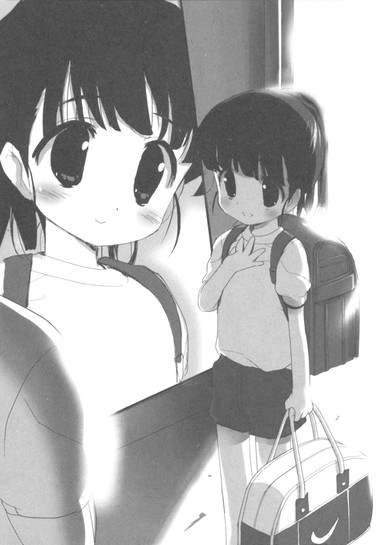
とりあえず、こんにちはと口で言おうとしてから、ここは自分もチャットで返答するべきかと考える。急いでホロキーボードを呼び出して返事を打ち込もうとしたが、まだブラシとホースを握ったままだったので、慌ててそれを地面に置く。改めて両腕を持ち上げかけたその途端、再度ウインドウに文字が流れた。
【ＵＩ＞ そちらからは肉声で話して頂いて大丈夫なのです】
「あ......、そ、そう......」
腕を微妙に掲げたまま、間の抜けた第一声を漏らしてしまう。
何だか、あまりにも解らないことだらけだ。なぜこの少女はチャットで話すのか。先の発言にあった〈急なお願い〉とは何なのか。そもそもなぜ他の学校の、しかも小学生がこんな場所に登場するのか。どうにか推測できるのは、チャット窓の発言の先頭に付される【ＵＩ＞】という文字列が、名前のウタイを省略したＵＩというニックネームだろうということくらいだ。
行き場のない右手でぽりぽりと頭を掻きながら、ハルユキは混乱した思考をそのまま音声出力した。
「あー、えーっと......は、初めまして。僕は有田春雪......梅郷中二年で、いちおう飼育委員長です......と言っても、今日からだけど......」
すると即座に、
【ＵＩ＞ ええ、こちらの飼育委員会が今日新設されたことは知っています」
という文章が高速タイプされた。
「えっ、そ、そうなの？ なんで知ってるの？それに......何でまたよその学校から、わざわざ手伝いに来てくれたの......？」
【ＵＩ＞ それは、そもそも松乃木学園初等部からの協力依頼によって、こちらの委員会が発足したはずだからです】
「ええっ、そ、そうだったの!?」
仰天するハルユキに対して、あくまで冷静な女子小学生は、ますます冴え渡るキーボードさばきで事の成り行きを解りやすく説明してくれた。
梅郷中学校は、東京都杉並区に存在する私立の、いちおう進学校だ。しかし経営しているのは学校法人ではなく、新宿に本社を構える教育系企業である。その会社は、梅郷中以外にも、小中高一貫の女子校を杉並区内に持っている。それが、四埜宮謡の通う松乃木学園である。
梅郷中も三十年近い歴史を持つが、松乃木はその比ではなく、今年で開校九十五年になるのだという。つまり、ひと言で表現すれば〈お嬢様学校〉だ。しかしながら全国的な少子化の波は避けられず、経営難により現オーナー企業に買収されたのが十年前。以来様々な合理化が行われたものの抜本的な対策とはならず、ついに今夏、敷地の一部を売却してその利益で初等部・中等部の合同校舎を新築するという決定がなされたのだそうだ。
伝統校であるがゆえに当然保護者からは反対の声も上がったが、何せ経営母体は株式会社である。決定は覆されず、初等部の現校舎は一学期の終了直後に取り壊されることとなった。
とは言え、生徒の大部分は建て替えを歓迎した。新しい校舎にはハイスペックのＶＲローカルネットを始めとする、同系列の梅郷中で培われた最先端の電子化教育環境が導入されるからだ。しかし、何せ学校の絶対的な面積は縮小されるわけで、新校舎には移行されない設備も幾つか存在した。その一つが──松乃木学園初等部の片隅にひっそり建っていた古い飼育小屋だった、というわけだ。
【ＵＩ＞ もちろん私は、先生や経営もとの会社にも抗議しました。飼育委員会には、生徒だけでなく飼育されている動物も所属しているのです。生徒は他の委員会に移ればいいかもしれませんが、動物たちはそうは行きませんから。しかし会社は、『飼育動物に関しては法令に基づいて適切に対応する』という返事を繰り返すだけでした。それはつまり、殺処分するということです】
淡々と綴られるテキストをそこまで読んだ途端、ハルユキは反射的に「そんな！」と叫んでいた。
いかに利益追求が株式上場企業の使命とはいえ、飼育場所がなくなるから動物を殺すというのはあんまりだ。長い間世話をしてきた子供たちの受けるだろうショックの大きさはいかばかりだろうか。そんなことをするくらいなら──する、くらいなら......。
ハルユキの憤りに満ちた思考は、そこで分厚い壁にぶつかって空転した。
コストカットのために学校の敷地が縮小される時点で、飼育小屋の新設が難しいという経営側の事情も想像できてしまう。ならば生徒の家で引き取ってもらえばよかろうという気もするが、動物を飼うことは相当の情熱と適正な環境がなければ不可能だ。さりとて、郊外の野山に放すなど論外だし、それ以前に犯罪でもある。
唇を噛んで黙り込むハルユキを見て、謡という古風な名前の少女は少しだけ困ったような顔をした。再び指が動き、テキストが高速で流れる。
【ＵＩ＞ ご心配には及びません。まだ、実際に処分された動物はいませんから】
「えっ、そ......そうなの？ よかった......」
思わずほっと息を吐いてしまう。謡の指は、踊るように解説を続ける。
【ＵＩ＞ 飼育されていたチャボ七羽は、狭山のほうの、庭で鶏を放し飼いにしている農家に引き取って頂けました。ウサギ二匹は、区内で信頼できる飼い主さんが見つかりました。ただ......事情があって引き取り手を探せない子が、最後に残ってしまって】
「引き取り手が......見つからない、じゃなくて、探せない......の？」
こくり、と謡は頷いた。白いリボンで結わえられた髪が、肩の上あたりで揺れる。すそが綺麗に揃っているので、ポニーテールというよりも、時代劇に出てくる武家の娘のような印象がある。
同様に純和風な顔に一瞬思案の色を浮かべてから、小学生はホロキーボードに指を走らせた。この不思議な会話を始めてからずいぶん経つが、ここまでミスタイプは一つもないし、言葉の選び方もやたらと大人びている。
【ＵＩ＞ その子は、少々複雑な事情があって、私の手からでないと餌を食べなくなってしまったのです。一度、他の飼育委員にも馴らそうと餌やりを任せたことがあるのですが、まるで食べずに体重が激減してしまって......。詳しい説明は、明日こちらに連れてきた時にもういちどしますが、そのような事情があるせいで、私が毎日通える距離圏内にどうしても新しい飼育場所を探す必要が生じたのです】
「な......なるほど......」
ようやく事情が呑み込めてきたハルユキは、謡のタイピングの三倍はたどたどしい肉声で言った。
「それで、系列の梅郷中に使われてない飼育小屋があるから提供するってことになって、こっちでも飼育委員会が発足して、でもメインの仕事は飼育じゃなくて小屋の掃除だから募集人数がたった三人だった......と、そういうわけなのか......」
【ＵＩ＞ その通りです。ご面倒おかけしてすみません】
「や、別に、そんな......。でも、よくうちの学校が素直に協力したなあ。こう言っちゃなんだけど、うちの管理部も相当そっけないっていうか......余分な仕事はまったくしない感じだと思うけど......」
系列とはいえ他校の飼育動物にここまで親身になれるなら、一年の時に手ひどく虐められていた僕をもうちょっとケアしてくれてもよかったじゃないか、と口には出せない繰り言を脳内で展開していると、まるでそれをも読んだかのように謡が言──いや書いた。
【ＵＩ＞ すみません、実はそれに関しても事情があって......。私、こちらの生徒会に知っている人がいまして、少々便宜を図ってもらったのです】
「あ、そうなんだ」
なるほど、と納得する。松乃木学園初等部の生徒はその大部分がエスカレータ式に中等部、高等部へと進むが、受験に熱心な家の子は梅郷中に入る場合もあると以前聞いた。ならば、こちらの学校に謡の知り合いが在籍していることに不思議はない。
ここまでの説明を聞──いや読んで、ハルユキはやっと、なぜ自分が突然飼育委員になったりしているのかを理解した。大本の理由は、同系列の松乃木学園の飼育委員会が廃止されることであり、その理由は経営の合理化であり、さらにその理由は留まることを知らない少子化であって、つまるところ〈社会のせい〉なのだ。もちろん、飼育委員長になったり一人で掃除したりしているのはハルユキ自身のせいだが。
「そっか......、凄いなあ、四埜宮さんは。家がなくなる動物のために、企業に抗議したり里親を探したり、こうして他の学校にまで来ちゃうなんて。僕が小四の頃なんて、毎日ゲームとマンガとアニメとおやつの事しか考えてなかったよ......」
ハルユキがしみじみとそう呟くと、謡は真顔でふるふる首を振り、背中からランドセルを下ろしながら器用にキーボードを叩いた。
【ＵＩ＞ 私もゲームくらいしますよ。......それでは、有田さんに事情をご理解頂けたところで、小屋の掃除をお手伝いしたいのですが......】
「あっ、そ、そうか」
委員会活動中だったことをようやく思い出し、慌てて足元からホースとデッキブラシを拾い上げる。
一人で掃除していた時は目的が見えなかったが、こうして色々な事情が説明され、何よりちゃんと引っ越してくる動物がいるのだと解ったからには作業にも気合いを入れなくてはならない。よし、やるぞ！と内心で決意を新たにしながら、少し離れた小屋に眼を向ける。
掃除は、あとは床にこびりついた落ち葉と泥の残り滓を洗い流せば終わりだが、ちょうど水道の元栓の開け閉めをどうしようか悩んでいたところだった。このタイミングで助っ人が現れてくれたのは実に有り難い。
「なら、そこのバルブの開閉をお願いしてもいいかな」
ハルユキがホースの根元を指さすと、謡は途惑ったように首を傾げた。
【ＵＩ＞ そんな仕事でいいんですか？ 一応、汚れてもいいように体操服で来たのですが】
──という文章を読んだ直後、ハルユキはまたしても謡の格好──胸に校章の入った真っ白な半袖シャツと、細い脚をぴったりと包む同じく白のハーフパンツ──を凝視してしまい、慌てて眼を逸らした。
梅郷中の体操服もパンツが紺色な以外はほぼ同じ作りで、それを着た女子生徒なぞ毎日学校で見慣れているはずなのに、相手が松乃木のお嬢様だと思うとなぜか見てはいけない気がする。──などという思考をチユリに知られでもしたら、両眼から超火力ビームが連射されまくるに違いないが。
「う、うん、あとは床をブラシで擦るだけだから！それじゃ、僕が合図したらそこのバルブを四分の三回転くらい捻ってください！」
やや上ずった声でそう伝えると、ハルユキはどたどた走って飼育小屋に飛び込んだ。奥のほうから洗い流すべく、ホースとブラシを構えてからもう一度叫ぶ。
「どっ、どうぞ！」
【ＵＩ＞ 開きます】
瞬時にテキストによる応答があり、直後、ホースの先端からやや控えめな水洗が放たれた。視界端の残水量メーターをチェックしながら一メートル四方ほどをしっかりと濡らし、「閉めて！」と指示する。返事の代わりに、背後できゅっとバルブが鳴く。
デッキブラシでざっしざっしと力を込めて擦ると、こびりついていた落ち葉や泥は容易く剥がれ、床材のセラミックタイルが顔を出した。幸いしっかりと対候防汚コーティングしてあるようで、長年湿った落ち葉に覆われていたわりに凹みやひび割れはない。これなら、一日乾かせば本来の姿を取り戻すだろう。
ハルユキは、水をかけてはブラシで磨く作業を手際よく繰り返していった。自分でバルブを開け閉めしていたら作業効率は大いに下がっただろうし、それ以前に、同じくらい真剣な誰かが一緒に働いてくれていると思うだけで不思議にやる気が湧いてくる。全身で面倒くささを表現していた浜島くん＆井関さんと作業していた時には、ハルユキもだるくて仕方なかったというのに。
「......よし！ これで、あとは仕上げだけだ......」
二十分後、床全面を磨き終えたハルユキは、大きく伸びをしながら言った。ぐるっと振り向き、元栓のところにしゃがみ込む四埜宮謡に声をかける。
「それじゃあ、最後に床を洗い流すんで、バルブ全開にしちゃって！」
すると、謡は頷く代わりに両手でぱぱっと宙を叩いた。視界にピンク色の文字が、心なしか遠慮がちに綴られる。
【ＵＩ＞ あの、もし邪魔でなかったら、私にも手伝わせて頂けませんか？流すと同時にブラシを使ったほうが効率的でしょうし、私も、少しは働いた気になりたいですし......】
「や、そんな、もう充分働いてもらったけど......でも、四埜宮さんがそう言うなら......」
ハルユキは口ごもりながら応じると、右手のデッキブラシを掲げてみせた。謡はほんの少しだけ嬉しそうな表情を作ると、こっくりと頷き、右手をバルブに添えてから左手だけで器用にタイプした。
【ＵＩ＞ それでは、行きます】
「どうぞ！」
きゅきゅきゅっ、と元栓が全開され、根元からホースが大きく震えた。その内部を走る水を追いかけるように、謡が懸命に駆けてくる。
高圧の水流が勢いよく迸るのに数秒遅れて小屋に飛び込んだ少女は、ハルユキの手からブラシを受け取ると、床に溢れる水を一心に金網の外へと押し出し始めた。その動きを呼吸を合わせ、ハルユキは暴れようとするホースを両手で押さえながら、小屋の奥から手前へと水流を浴びせていく。残り二割ほどだった水量メーターはみるみるゼロに近づくが、じゃっ、じゃっ、と勢いよくデッキブラシが動くたびに、床のセラミックタイルも綺麗なライトブラウンを取り戻す。
謡のブラシさばきは、腰が入った実に見事なものだった。恐らくこの手の大がかりな掃除に慣れているのだろう。さすがはお嬢様学校、と妙な感心をしつつも、ハルユキも負けじとホースを操り床に浮くゴミを押し流していった。
ほんの数分で床面は見違えたようにぴかぴかになり、同時にシステムに許可された使用水量もほぼ使い切った。我ながら見事な配分だ！と内心で満足しながら、ハルユキは笑顔で謡を見て、「それじゃバルブを......」と言いかけた口をぴたりと停止させた。
これまで開閉係をしていた相棒は、今は同じ小屋の中にいるので元栓に手は届かない。そして仮にメーターぶんを使い切っても、元栓が自動制御されているわけではないので水は停まらない。ということは、このままではあと数十秒で許可水量をオーバーしてしまう。
無論、そうなったところで別に逮捕連行のうえ強制収容所送りにされたりはしないが、ローカルネット上のハルユキの学籍データに〈軽微な違反〉が記録され、あとで先生に小言を頂戴する程度の面倒ごとは発生する。
「やべっ......」
ハルユキは咄嗟にホースを思い切り握り込んだ。せき止められた水流は不服そうに身震いしたが、どうにかメーターもほぼ停止する。その様子から状況を敏感に察したらしい謡が、タイピングを省略してブラシを放り出すと、身を翻しざま元栓目指して走りかけた。
とてつもない大惨事が発生したのは、その瞬間だった。
ホースをぐにっと圧迫するハルユキの右手の親指が滑り、チャージされていた水は遠隔系の溜め攻撃の如く圧倒的なパワーを伴って噴出し──
体操服姿の謡の右肩口からお腹にかけてを、どばざるっしゃー！と直撃した。
己の引き起こしたカタストロフの巨大さに脳がオーバーフローし、全身を完全停止させるハルユキに対して、ずっと年下の小学生は、一瞬驚きの表情とともに立ち尽くしたもののすぐにまた駆け出した。三メートル離れた校舎脇の元栓にかがみ込み、手早くバルブを閉める。
視界右端の水量メーターは、残り〇・二パーセントでからくも超過使用を免れたが、それを意識することもなくハルユキは右手にホースを掲げたままフリーズし続けた。
その正面に、とてとてと小走りに戻ってきた謡は、上半身から無数の水滴をしたたらせながらタイプした。
【ＵＩ＞ 気にしないでください。こういう事態に備えて体操服に着替えてきたわけですから】
そして表情を変えることもなく、たっぷり水を吸い込んで肌に貼り付くシャツの裾を大きくたくし上げ、両手で絞る。
その無防備な仕草によって否応なく見えてしまった素肌の白さが、ハルユキの空転する思考トランスミッションに衝撃を与えて正位置に戻した。回転計が一気にレッドゾーンに突入し、ようやく発汗増大・顔面発赤・心悸亢進という正常な反応を回復したハルユキは、びくーんと直立姿勢になりつつ裏返った声で叫んだ。
「ごっ、ごめ、ごめ、ごめんなさい!! ほほ本当にすすすみません!!ぜぜ絶対わざとじゃないんですててて手が滑ってそそしたら水が、水がばしゃーって」
すると謡は数度瞬きしながら小首を傾げ、もう一度指を閃かせた。
【ＵＩ＞ 大丈夫ですよ？ 着替えも持ってきていますから、問題ありません】
「ででででも、あんな勢いで水が直撃したら、に......に............」
ニューロリンカーに浸水が。
と言おうとしながら、ハルユキは謡の細い首筋を見た。
常時装着型デバイスであるニューロリンカーは、どんな機種でも丸洗いや入浴くらいなら可能なレベルの生活防水機能を備えている。しかし直結用端子やカメラレンズ回りはどうしても弱く、深い水に沈んだり高圧水流を受けたりすると浸水事故が起こりかねない。ハルユキはそれを心配した──のだが。
裾広がりのポニーテールに覆われた謡のうなじ部分には、何度見返しても、何もなかった。極細の後れ毛が先端に小さな水滴を煌めかせるのみで、どのようなデバイスもまったく、完全に存在しない。
「え............」
先刻とは別種の驚きに打たれ、ハルユキは小さく声を漏らした。
四埜宮謡は、ニューロリンカーを装着していない。だがそんなことは有り得ない。数十分前に彼女はハルユキのニューロリンカーとアドホック接続し、チャットツールを介して会話し続けてきたではないか。
そう考えたところで、ハルユキはようやく、もっと早く感じるべきだった疑問に思い至った。
なぜチャットなのか？ 恐るべきタイピング速度がラグのない会話を実現していたためについそのまま受け入れてしまったが、考えてみれば謡は姿を現してから、一度も肉声を発していない。そこには当然、何らかの理由や事情があるはずなのだ......。
ハルユキの視線の意味を、謡は鋭敏に察したようだった。
正面から見ると虹彩にわずかな赤みが混じっているように見える瞳をまっすぐハルユキに向け、少女は右手の指先をつっと滑らせた。途端、視界に縦長の矩形が浮き上がる。
ネームタグだ。上部中央に【四埜宮謡】の姓名と、少し小さな【松乃木学園初等部四年菫組】、【二〇三七年九月十五日生】の表示。しかし、本来ならば横長のはずの住基ネット認証ネームタグが縦長なのには意外な理由があった。
氏名表示フィールドの下部に、見慣れぬ証明書が付属しているのだ。いかめしい明朝フォントで記された文字は──【医療用硬膜内留置型通信機器使用許可証】。更に右下に、厚生労働省の認証印。
ぱっと見では意味の掴みにくい漢字の羅列を、ハルユキはしっぽ側からさかのぼって理解しようと眼を凝らした。
留置型通信機器、とは体に埋め込むタイプのマイクロチップのことだ。そして硬膜というのは多分、頭蓋骨の内側、つまり脳を包む膜のことだろう。脳に埋め込むタイプの通信チップ......それは、つまり──。
ブレイン・インプラント・チップ。略称〈ＢＩＣ〉だ。
「っ............！」
ハルユキは、全身をびくんと仰け反らせてしまいそうになるのを懸命に堪えた。
ほんの二ヶ月前、新学期が始まって早々にハルユキの前に現れ、恐るべき策謀を巡らしてハルユキから多くのものを奪おうとした一人の新入生。彼もまた、脳にＢＩＣを所持していた。長く苦しい戦いのすえに彼──〈ダスク・テイカー〉は加速世界から永久に去ったが、その所属組織は今もまだ健在である。それどころか、先週のヘルメス・コード縦走レースに、第二の刺客たる〈ラスト・ジグソー〉が突如乱入し、ＢＩＣによって強制ブーストされた範囲型心意攻撃を解き放ちレースそのものを破壊したのだ。
ジグソーの所属組織たる〈加速研究会〉が、今後ますます加速世界への攻勢を強めることは想像に難くない。ゆえにハルユキは、初対面のＢＩＣ装着者たる四埜宮謡に対して反射的に警戒心を抱かざるを得なかった。だが、それを表情に出す直前に、ようやく許可証に記された文字列の頭部分が眼に留まった。
〈医療用〉、そこにはそう記されている。
ダスク・テイカーやラスト・ジグソー、そしてブラック・バイスといった加速研究会のメンバーたちは、闇手術によってＢＩＣを違法にインプラントしている。当然、彼らは厚労省発行の許可証など持っていないはずだ。偽造しようにも、タグ表面に輝く複雑な認証印だけはどんなクラッカーにも再現できない。かつて黒雪姫が、名前を改変したネームタグを披露してくれたが、あれとてタグそのものをゼロから生成したのではなく、暗号化された姓名データを置き換えたに過ぎないのだ。それとて、とんでもなく高度な技術であるのは間違いないが。
つまり、謡の示した許可証によれば、彼女は医療目的で合法的にＢＩＣを所持しているのだということになる。
ならば、その〈医療〉とはいったい何なのか──。
という思考を、ハルユキの眼から鋭敏に読み取ったらしい謡は、穏やかな表情のままホロキーボードを一撫でした。
【ＵＩ＞ 説明が遅れてすみません。有田さんが、あんまり自然に私のチャットと会話なさるので、ついタイミングを逃してしまって......。私は、運動性の失語症によって、肉声での会話ができないのです。それでこうして、ＢＩＣを使ったチャットでお話しさせて頂いています】
「運......動性？」
〈失語症〉は大まかに理解できるが、その前に付された単語の意味を汲み取れず、ハルユキは呟いた。すかさず謡の、タイプし慣れているのであろう解説が流れる。
【ＵＩ＞ 失語症は、大まかに言うと運動性と感覚性のものに分類されます。感覚性失語症は言語そのものの理解が困難となる症状で、その場合はチャットによる意思疎通も行えません。対して運動性失語症は、発声器官を動かして言葉を話す機能が阻害される症状です。言語は理解できるので、文字の読み書きは可能です】
表示されたテキストを何度か読み返し、ようやく二つの症状の違いを呑み込んだハルユキは、ふと思いついた疑問をおずおずと口にした。
「ええと......、なら、ＢＩＣじゃなくて、ニューロリンカーを直結しての思考発声はどう......なのかな？」
すると謡は、まるでその問いをも予期していたかのように即座に答えを入力した。
【ＵＩ＞ ニューロリンカーによる思考発声は、実際には思考そのものではなく、口や舌、頬を動かそうとする運動信号を読み取って音声として再構成しています。運動性失語症でも症状の軽い人ならそれが可能な場合もあるのですが、私の脳は、声を出すための信号をニューロンのどこかで完全に遮断してしまうのです。このように】
そこで謡はタイピングを停めると、右手の人差し指を自分の口に向けた。
ハルユキがまじまじと凝視するなか、桜色の小さな唇がそっと開かれた。真珠のように光る小粒な歯の間から、舌先がほんのわずかに覗く。大きく息が吸い込まれ、それが音として放たれようとした、その寸前。
かちん！ と硬く鋭い音を立て、上下の歯が勢いよく噛み合わされた。喉もとの腱が細く浮き上がり、小刻みに震えて、顎に途轍もない力が込められていることを示す。意思に反して食い縛られた奥歯がきりきりと軋み、謡の清楚な顔に苦痛の色が浮かぶ。
「ご......ごめん、いいよ、もういいよ!!」
ハルユキは無意識のうちに叫び、一歩前に出た。硬く強張る細い肩に手を伸ばしかけるが、触れることは躊躇われ、中途半端な姿勢で固まる。
だが幸い、ほんの数秒で謡の緊張症状は解けた。一瞬ふらついてから、はあっと大きく息を吐き、少女は顔を上げるとほんの少しだけたどたどしくタイプした。
【ＵＩ＞ すみません、ご心配おかけしました。本気で声を出そうとするつもりはなかったのですが、もしかしたら、しゃべれるかもって気がして、つい......。そんなわけはないのに、馬鹿なことをしました。申し訳ありません】
「そんな、謝らなくていいよ」
ハルユキは激しく首を振った。ほんの一分前、謡の持つＢＩＣに警戒心を抱いてしまったことを強く後悔しながら、必死に言葉を掛ける。
「ぼ......僕こそ、興味本位で質問して本当にごめん。思考発声の仕組みなんか知ってたはずなのに......よく考えれば解ったことなのに、馬鹿なのは僕のほうだ......」
それ以上相手の顔を見ていられずに深く俯くと、濡れて夕日に光る飼育小屋の床タイルを背景に、桜色の文字がゆっくりと流れた。
【ＵＩ＞ ありがとうございます。私は何も気にしていませんので、有田さんも気にしないでください。さあ、道具を片付けましょう。これだけ綺麗になれば、飼育小屋の掃除は充分です。あの子もきっと喜びます】
ハルユキは恐る恐る顔を上げ、謡の小さな顔を見た。そこには、言葉──いや文字どおりに少なくとも不機嫌の色は存在せず、ハルユキはようやく肩の力を抜くと頷いた。
「......うん。でも、片付けは僕がするから、君は早く着替えたほうがいいよ。校舎のそっち側に非常口があって、そこから廊下に入ると少し先の左側にトイレがあるから......」
早口にそう言い、ブラシを拾い上げると、視界にやや勢いよく反論。
【ＵＩ＞ 平気です。最後までお手伝いさせてください。私はホースを】
そこで文字列を途切れさせ、謡は突然鋭く息を吸い込むと──。
へくちっ、と可愛らしいくしゃみをした。
それが、ハルユキが初めて聞いた、四埜宮謡の肉声だった・。
午後五時四十五分、飼育小屋の清掃及び掃除用具の返却というミッションの全てを完了させたハルユキは、飼育委員会の活動日誌ファイルを開き、すでに二人分の認証印がセーブされているその末尾に自分の名前を加えると、学内システムに送信した。
「ふう............」
大きく息を吐き、改めてもう一度、掃除の終わった小屋を眺める。
あちこちに小さな水たまりが残るものの、ライトブラウンの色合いを取り戻したセラミックタイルの床は、腐葉土に覆われていた作業開始前と比べれば見違えるようだ。ステンレスの金網と板張りの壁はまだ埃っぽいが、これは明日ブラシで擦ればすぐ綺麗になるだろう。
もちろん内部が空っぽになったぶん、落ち葉と泥が小屋の前にちょっとした山を作っているが、これは乾燥してからゴミ袋に詰めて捨てる手はずだ。幸い今夜から数日間はまとまった雨が降らない予報なので、乾くのにさして時間はかかるまい。
「やれば、できるもんだなあ......」
ハルユキが呟くと、着替えを終えた四埜宮謡が素早くタイプした。
【ＵＩ＞ 実は私、昨日この小屋を下見させてもらったのです。その時は、使えるようになるまでに三、四日はかかるだろうと予想したのですが、この分なら明日にはもう、ここで飼う予定の子を連れて来られそうです。管理部にかなりせっつかれていたので本当に助かりました。ありがとうございます、有田さん】
「いや、そんな......僕がもっとしっかりしてれば......」
──同僚委員二人を先に帰したりしなければ、という言葉を省略し、ハルユキはもごもごと続けた。
「......もうちょっと早く終わったんだけどね。それはそうと......ここで飼う動物がなんなのか、かなり気になるんだけど......」
ちらりと横を見ると、並んで立つ謡は、虹彩に仄かな赤が混じる大きな瞳をくるりと閃かせ、右手の人差し指だけをぽんぽんとリズミカルに動かした。
【ＵＩ＞ ナ、イ、ショ、です】
「そ、そう......じゃあ、明日の楽しみにしておくよ......」
むぐむぐ答え、もう一度視線を真横に動かす。
松乃木学園初等部の夏服は、白いセーラーカラーの、すとんとしたラインのワンピースだ。ウエストのかなり高い位置から広めのタックが二本走っていて、どこか古風な袴めいたシルエットにも見える。これまで間近に見たことなど一度もないその制服に、思わず数秒間眼を留めてしまってから、ハルユキは慌てて前に向き直り言った。
「あ、あと十分くらいで強制下校時刻だから、そろそろ学校から出ないと......。今日は、手伝ってくれてありがとう」
【ＵＩ＞ こちらこそ。明日もよろしくお願いします】
という返事に続けて、しかし謡は、予想外の文字列をタイプした。
【私はちょっと生徒会室に挨拶していきますので、有田さんは先に下校なさってください】
「えっ......」
咄嗟に体ごと右に向き直り、ハルユキは謡をまじまじと見た。
確かに先ほど、ここの生徒会に知り合いがいると言ってはいたが、それにしても余所の中学校の生徒会室に単身乗り込もうとは、小学四年生としては驚くべき度胸だ。眼を丸くするハルユキを、むしろ。不思議そうに見返した謡は、平然とタイプしてから軽く頭を下げた。
【ＵＩ＞ それでは失礼いたします。ごきげんよう、有田さん】
そしてくるりと体を回し、正門方向にすたすた歩いていくので、ハルユキはその背中に半ば反射的に呼びかけていた。
「あ、あの、僕も行くよ！ 僕もその、生徒会に知り合いの人がいるから......」
第一校舎一階奥の生徒会室に何人の役員が残っているかは解らないが、その中にはかなりの確率で黒雪姫もいるはずだ。万が一、謡の所持するＢＩＣに対して、黒雪姫もハルユキと同様の警戒を抱かないとも限らない。ニューロリンカーを装着すらしていない謡が〈加速研究会〉の刺客などということは有り得ない、とどうにかして早めに伝える必要がある。
小走りで横に並んだハルユキを見て、謡はちらりと奇妙な表情を浮かべたが、何を言う、いや書くでもなく頷いた。
正面昇降口から校舎に入り、泥まみれのスニーカーを履き替えたところで、視覚と聴覚に校内システムからの警告アナウンスが流れた。あと五分以内に下校しないと第三級の校則違反が個人ファイルに記録され云々、という合成音声に顔をしかめる。いかな委員長権限でも、この規則には対抗できない。下校時刻の延長申請が可能なのは、唯一生徒会の役員だけだ。
何とか黒雪姫に頼み込んで延ばしてもらうしかないが、そんな公私混同を認めてくれるだろうか、とハラハラしつつ第一校舎の廊下を歩くハルユキの隣で、四埜宮謡は相も変わらず涼しい顔をしている。
──僕が小四の頃なんて、知らない中学校の敷地に一歩踏み込んだだけで気絶しかねなかったけどなあ。
などとやや情けない思考を巡らしているうちに、西側の突き当たりが見えてきた。右の壁に設けられたドアが生徒会室だ。考えてみれば、入学してからの一年と三ヶ月間、中に入ったことは一度もない。
閉じられた白いスライドドアの前まで辿り着いたもののハルユキが逡巡していると、謡が何のためらいもなく右手を持ち上げ、宙の一点を叩いた。ホロウインドウを表示させ、入室ボタンを押したのだ。
二秒後、かちんとドアロックが解除される音が響いた。謡は表情一つ変えずにドアを引き開け、軽く一礼してから中に踏み込んだ。
──え、ええと、僕はどうすれば......。
この期に及んでもまだクヨクヨそんなことを考えつつ廊下に立ち止まっているハルユキの耳に、聞き慣れたあの人の声が届いた。
「すまない、謡。ちょっとこっちの仕事に手間取ってな。小屋の掃除はまだ終わってないんだろう？今すぐ手伝いに行くから......」
────え？
今の声は、間違いなく黒雪姫のものだ。そして言葉の中で、ごく自然に〈謡〉と呼び捨てにしていた。ということは──四埜宮謡の言っていた〈梅郷中生徒会の知り合い〉というのは、つまり副会長の黒雪姫その人......だったのだろうか？しかし、一体この二人に、どんな接点が!?
混乱のあまり頭をふらふらさせながら立ち尽くしていると、視界に表示されたままだったチャットツールに、新たな文字列が流れた。どうやら謡は黒雪姫ともアドホック接続したらしい。
【ＵＩ＞ 掃除は終わったのです。この方が一人でがんばって終わらせてくれました】
「......この方？ どこにいるんだ？」
黒雪姫の怪訝な声に、これ以上廊下に潜伏しているわけにも行かないと思い、ハルユキはぎこちない足取りで壁の陰から出ると敷居をまたいだ。顔を伏せたまま後ろ手にドアを閉めると、恐る恐る視線を持ち上げていく。
初めて見る梅郷中の生徒会室は、予想よりもずいぶん広々としていた。中央には楕円形の会議用テーブル、奥の窓際には細長い事務机が置かれ、左右の壁は全面に格子状のウッドラックが設えられている。
あらゆる調度が落ち着いたダークブラウンの天然木で、床には濃いベージュのカーペットが敷かれ、入り口のすぐ左側には大型のソファセットまであるのでとても中学校の一室とは思えない。ことによると、かつて一度だけ覗き見たことのある校長室よりも上等な空間ではあるまいか。
謡は正面の会議テーブルの脇に立ち、黒雪姫はソファセットの傍らにいた。それ以外に人の姿はない。どうやら黒雪姫は一人で残業していたようなのだが、予想外なのはその出で立ちだった。
「せ......、先輩、なんでそんな格好を」
謡との関係についての疑問も一瞬忘れ、ハルユキがそう声を上げると、黒雪姫はさっと両腕を体の前に回し、ぴったりした黒い半袖Ｔシャツと紺色のハーフパンツ──つまり体操服姿を隠した。ほんの少し頬を赤らめながら唇を尖らせ、上ずった声を出す。
「い、いや、これはだな......あの小屋を掃除するなら汚れてもいい格好でと思って......というか、それ以前に、なぜキミがここにいるんだハルユキ君」
「なぜって......それは......ええと......何ででしたっけ」
一瞬本気で解らなくなり、ハルユキが口ごもると、チャット窓にどこか呆れたような謡の言葉が並んだ。
【ＵＩ＞ 有田さんは飼育委員長さんなのです。小屋の掃除をしてくれました。私が生徒会室に挨拶に行くと言ったら同行なさったのですが、理由は知りません】
──ほんと、理由はなんだったんだっけ......。
などと今更のように考え込んだのとほぼ同時に、黒雪姫の驚きと呆れが等量ずつ含まれた声が聞こえた。
「き、キミ、飼育委員になったのか!? 何でまた......いや、そうか、くじ引きの結果か......。まったく、この大変な時によくよく引きの強い奴だなぁ、ハルユキ君......」
ここで、勘違いによる立候補です。などと言うとまた状況が複雑になりそうだったので、とりあえず「いやぁそれほどでも」と照れ笑いを浮かべておく。
改めて眼を向けると、体操服を着た黒雪姫は、普段の楚々とした制服姿とはまた別種の魅力に溢れていた。髪を謡と似たポニーテールにまとめているからだろうか、弾けるような活力を感じさせるその姿にしばしポヤーンと見とれてしまってから、ハルユキもとりあえず目先の質問を口にした。
「......そ、それにしても、なぜ先輩が飼育小屋の掃除を？生徒会と飼育委員を兼任......したわけじゃないですよね？」
「ああ、それはだな......」
そこで黒雪姫は何かに気付いたように言葉を切ると、ぱぱっと素早く仮想デスクトップを操作した。ハルユキの視界に、下校時刻が延長されたむねのメッセージが流れる。時計を見れば六時のわずか七秒前だ。お礼を言おうとしたが、黒雪姫は手の一振りで押しとどめ、言葉を続けた。
「......それはつまり、たった三人の、しかも恐らくくじ引きで決定されるであろう飼育委員では、あの小屋を短期間で掃除するのは不可能だろうと推測したからだ。私は謡と、可及的速やかに小屋を使用可能にすると約束したからな。下校時刻の延長限界まで掃除を手伝おうと思ったのだが......まさかキミが飼育委員になり、しかもわずか二時間足らずで、あの惨憺たる小屋を綺麗にしてのけるとは思わなかったよ。頑張ったな、ハルユキ君......」
優しい微笑みとともに深く頷きかけられ、ハルユキは胸の奥をぎゅっと掴まれたような感覚に襲われた。どう反応していいのか解らず、黒雪姫の瞳を見つめたまま立ち尽くす。
──本当は、サボろうとしたんです。でも、きっとあなたも自分の仕事を頑張ってるって思って、それで僕も頑張れたんです。なのにあなたは......本来の仕事を終えたあと、あの小屋の掃除までしようと思ってたんですね......。
という心の声が、どこまで届いたのかは解らなかったが、黒雪姫はもう一度ゆっくりと頷いた。
魔法の手触りに満ちた瞬間をインタラプトしたのは、チャット窓に超高速で流れた桜色のフォントだった。
【ＵＩ＞ 見つめ合っているところすみませんが、そろそろ教えてもらいたいのです。有田さんとサッちんはお友達同士だったのですか？】
ぱちぱちと瞬きした黒雪姫は、ハルユキの右側に立つ謡を見て、「ああ、そうか」と声を出した。
「いや、すまない。そうか、ういういはまだ知らなかったんだな。うっかりしていた」
──サッちん？ ういうい？
唖然として二人を交互に眺めるハルユキの耳に、黒雪姫の簡潔なる説明が響いた。
「彼──有田春雪君は、我がレギオンの先鋒にして私の〈子〉だよ、ういうい」
「っ............!? ！！？！？」
────な、な、何ゆってるんですかァァァァ！
と内心で絶叫するハルユキの視界に、謡の明瞭なる応答が流れた。
【ＵＩ＞ ああ、そうだったのですね。有田さんが、あの〈シルバー・クロウ〉なのですか】
「！！！？？！！！！？！？」
────ま、ま、また知らないうちにリアル割れしてるうゥゥゥゥ！
反射的にダッシュで逃げようとしたが、ドアはロックされていてどんなにがちゃがちゃ引っ張っても開かなかった。そんなハルユキの背中に、黒雪姫が呆れ返ったような声を投げ掛けた。
「......あのな、ハルユキ君。キミのほうは、ここまでの流れで推測できていてもいいと思うぞ。彼女──四埜宮謡も我々と同じバーストリンカーで、しかも第一期ネガ・ネビュラスのメンバーであることを、な」
５
──もう、誰も信じない。
と、一昔前のコミックのダークヒーローが右手に銃を下げ左手で傷口を押さえつつ言いそうなことを、ハルユキは脳内でしょぼしょぼと呟いた。
生徒会室のソファセットの片隅にうずくまり、両手で紅茶のカップを抱えている。黒雪姫が手ずから淹れてくれたいかにも上等そうなダージリンだが、その芳しい香りを楽しめるほどにはまだ衝撃から回復していない。
──誰も信じないは言い過ぎだけど、少なくとも疑うぞ。突然現れて、なんかやけに落ち着いてて、僕を人間扱いしてくれる人は全員もれなくバーストリンカー。しかも古参のハイレベル。間違いない。
その決意とともに向かいのソファをちらりと見ると、四埜宮謡が真剣な顔でティーカップにミルクを垂らしているところだった。きっちり適量を投下できたのか、ひとつ頷いてピッチャーを置くと、スプーンで慎重にかき混ぜる。
その幼い仕草を眺めていると、今でもまだ諒解しがたいものがある。謡は同系列の松乃木学園初等部四年生で、三七年の九月生まれだというから、現在わずかに九歳九ヶ月。赤の王ニコよりも更に二歳も若い。
第一期ネガ・ネビュラスが、頭首ブラック・ロータスの叛乱劇を経て消滅したのが二年半前だから、その頃謡は実に七歳でしかなかったはずだ。となると、バーストリンカーになったのはいったい何歳の時なのか。
数々の疑問に翻弄されつつハルユキが紅茶をすすっていると、左隣に腰掛ける黒雪姫がカップをソーサーに戻し、やや予想外のひと言で会話の口火を切った。
「......確か昨日もニューロリンカーを着けていなかったが、普段から外しっぱなしなのか、謡？」
その問いに、謡は右手でミルクティーを飲みながら、左手だけで器用にタイプした。恐ろしいことに速度は大して落ちていない。
【ＵＩ＞ ええ。装着していると、どうしてもあの世界に行きたくなってしまいますので】
「行けばいいじゃないか。お前は私と違って賞金首というわけじゃない。マッチングリストに名前があっても、面倒な奴らが次々襲ってきたりはしないはずだ」
【ＵＩ＞ 月に一、二度くらいは世田谷の中立エリアでソロ対戦しているのです。それで充分です。それ以上を望むことは、私には許されません。実質的に昔のネガ・ネビュラスを壊滅させてしまった責任の一端は、この私にあるのですから】
「えっ............!?」
と、驚愕の声を漏らしたのはハルユキだった。
視界に浮かぶチャット窓をまじまじと見返すが、謡のタイプした文字列は、何度読んでも他の意味には取りようがない。
──ネガ・ネビュラスを壊滅させた。
その言葉は、これまで黒雪姫が何度も繰り返してきたものだ。
黒の王ブラック・ロータスは、二年半前の七王会議の席上で、レベル９同士の不戦を唱える赤の王レッド・ライダーの首を落として永久に追われる身となった。結果、彼女の率いていた第一期ネガ・ネビュラスもなし崩し的に消滅してしまったのだ、とこれまでハルユキは理解していた──のだが。
説明を求めて隣に視線を向けたが、まだ体操着姿のままの黒雪姫は、憂いを湛えた瞳をティーカップに落としたまま口を開こうとしない。そして謡もまた、左手をホロキーボードに乗せたまま黙り続けている。
重い静寂のなか、北側の窓から入り込む光だけが徐々にその色を濃くしていく。もうすぐ夏至ではあるが、年後六時半を回ると、さすがに空も薄暗い。
生徒会役員権限による下校時刻の延長は、確か七時が限界だったはずだ。時間も心配だが、それ以上に二人のやり取りの来し方と行く先が気になって、ハルユキは唇を噛んだ。何もかもを解りやすく説明して欲しくてたまらないが、ハルユキは本来、この場では招かれざる客だ。あまり前のめりな態度を見せるのも躊躇われる。
しかし幸い、二人の古参バーストリンカーたちは無言のうちにある種の同意に達してくれたようだった。まず隣の黒雪姫が小さな吐息に乗せて呟く。
「......私は今まで、かつての第一期ネガ・ネビュラスについて語ることを、意識的に......あるいは無意識のうちに避けてきた。失われたものにすがるような真似をしては、現メンバーとして頑張ってくれているハルユキ君たちに顔向けできないと思ったし......何より、私の罪を直視する勇気もなかったしな......。──だが、レイカーが戻り、こうして二年半ぶりにういういに会うこともできた。今こそ、過去と向き合う時が来た......ということなのだろうな......」
息を殺して言葉に聞き入るハルユキの向かいで、今度は謡が両手を閃かせる。
【ＵＩ＞ 罪と言うならば、それは私にもあるのです。それぞれの過去から眼を逸らしたまま、長い間加速世界の片隅に隠れ続けてきた私やサッちん、フーねえが、もう一度自分と向き合うことができたのは、間違いなく新しいネガ・ネビュラスのメンバーたちの頑張りがあったからです。有田さんには、かつて私たちがどのような過ちを犯し、なぜ第一線から姿を消さねばならなかったのかを知る権利があります】
「ああ......、そうだな。その通りだ」
桜色に光る文字を読んだ黒雪姫は、そう言って頷くと、体ごとハルユキに向き直った。
漆黒の瞳の奥には、かつて何度か自分の過去について語ろうとした時と同じように揺らぐ光があるが、今はそれだけではない。虹彩のいちばん真ん中に、小さな星が毅然と輝いている。
わずかな間を置いて放たれた声もまた、痛みに耐え、乗り越えようとする凛とした響きを帯びていた。
「......ハルユキ君。キミももう知っているとおり、私はかつて、初代赤の王レッド・ライダーが主張した休戦協定を受け入れると見せかけて、彼の首を落とした。そのまま他の五人の王との戦闘になだれ込み、生き延びてバーストアウトしてから後は、二年間にわたってグローバルネットを遮断し続けた......と言ったが、正確にはたった一度だけ、王たちとの戦闘があった翌日に、私は無制限中立フィールドにダイブしているのだ。第一期ネガ・ネビュラスのメンバーたちに謝罪し、私の蓄積していたバーストポイントの大部分を彼らに譲渡するためにな」
【ＵＩ＞ そんなの、受け取るわけがないのです】
謡が文字を挟むと、黒雪姫は小さく苦笑する。
「だが、私にはそれ以外に差し出すものなどなかった。せっかく危険を冒して〈ショップ〉でポイントをアイテムに変えてきたのに、お前たちときたら怒るんだからな......」
【ＵＩ＞ 当然です。今思い出してもちょっとムカッと来ます】
「悪かったよ」
もう一度笑い、黒雪姫は肩をすくめると続けた。
「......だが、話はそれで終わらなかったのだ。私が、己のしたことを告白し、次期頭首を指名して加速世界から隠遁する意思を表明したら、謡たち〈四元素〉が逆にとんでもない提案をしてきたんだよ」
「え......えれめんつ......？」
ハルユキが鸚鵡返しに呟くと、謡がほんのわずかに頬を赤らめながらタイプした。
【ＵＩ＞ 当時、ネガ・ネビュラスのサブリーダーを務めていた四人のバーストリンカーに、いつの間にかそんな大仰なあだ名が付けられたのです。理由は、それぞれのアバターの属性が、地、水、火、風に分類されたからです】
「〈風〉はもちろんスカイ・レイカーだ。ういういの属性が何なのかは、のちの楽しみとしておこう」
微笑みながらそう付け加える黒雪姫と、仄かにはにかんでいる謡の顔を、ハルユキは交互に見やった。
〈四元素〉なる異名を取る四人のサブリーダー。それはつまり、大昔の戦国大名が従えていたような〈四天王〉的存在であると理解していいのだろう。ある程度予想はしていたが、この小柄な少女は、かつてあのスカイ・レイカーと並び立っていたほどの強者なのだ。そんなにも強くて、しかも同じ杉並に住んでいるのなら、なぜ黒雪姫はもっと早く連絡を取り、レギオン復帰を要請しなかったのだろうか。何か事情はあるのだろうが、せめて領土戦だけでも手伝ってもらえれば、ずっとラクに防衛できただろうに。
──などと少々ウツワの小さいことをハルユキはつい考えてしまったが、黒雪姫が咳払いとともに表情を改めたので、自分も急いで姿勢を正した。静かな声が、夕闇の深まる生徒会室に流れた。
「──私の引退表明に対して〈四元素〉たちが行った逆提案は、私にもまったく予想外のものだった。彼らは......〈ブレイン・バースト〉のクリア手段が、レベル10への到達の他にも、もう一つあるのではないかと、そう言ったのだ......」
「えっ............!?」
その言葉は、ハルユキにも巨大な衝撃をもたらした。
オンライン対戦格闘ゲーム〈ブレイン・バースト〉の終着点。それは、課せられた条件の過酷さから考えても〈レベル10達成〉以外にあるまいと、これまで信じて疑わなかったのだ。
他に、同じくらい困難な目標が存在し得るだろうか？たとえば全領土の統一とか？いやそれは非現実的すぎる。バーストリンカーの大部分は東京都心に集中しているが、戦域そのものは日本中に広がっているからだ。
それ以上推測を広げることができず、ハルユキは身を乗り出して急き込むように訊ねた。
「な......何なんです!? その、もう一つのクリア手段って!?」
「キミも一度ならず見たことがあるはずだぞ、ハルユキ君」
黒雪姫に、ミステリアスな声音でそう切り替えされ、きょとんと眼を見開く。
「見た......って、何をですか？」
「加速世界の中心に常に存在し、しかし何ぴとたりとも立ち入ることの叶わぬ魔城......その峻烈なる威容を、だ」
途端──。
脳裏に、昨日眼にしたばかりの光景があざやかに浮かび上がった。
深い霧立ち込める〈魔都〉ステージ。鋭く切り立つ街並みの彼方に、暗雲を貫いてそびえる黒々とした尖塔群。万人を拒否しつつも、どこか誘うようなあの重厚かつ艶麗なシルエット。
「............こ、皇居......？」
震える声で囁いたハルユキに、黒雪姫と謡は無言でそっと頷いた。何度かせわしなく瞬きしてから、慌てて反論する。
「で、でも！ 昨日先輩が言ってたじゃないですか！皇居は、〈加速世界でも、唯一いかなる手段を用いようとも立ち入れない場所〉だって！」
「だが、こうも言ったはずだぞ。不可侵であると確定しているのは、あくまで〈一般対戦フィールド〉に限ってのことだとな」
「そ、それって......つまり、ええと......一般フィールドじゃない場所なら......」
ごくり、と喉を鳴らしてからおそるおそる続ける。
「......上位の〈無制限中立フィールド〉でなら、入る手段はある、ってことですか」
回答は、数秒間返らなかった。
黒雪姫と謡はちらりと眼を見交わし、なぜか二人とも一瞬睫毛を伏せた。しかしすぐに顔を上げ、先ほどと同じように頷く。今度は、謡がチャットツール経由で答えた。
【ＵＩ＞ 少なくとも、経路らしきものは確認されています。無制限フィールドの皇居......私たちは〈帝城〉と呼んでいますが、そこには一般フィールド千代田エリアの皇居にはない、四つの城門が存在するのです】
「......それが......帝城の、入り口......？」
「うむ。城の東西南北に一つずつ、高さ三十メートルはあろうかという巨大な城門がそびえているのさ。それ以外の城壁の上下方向には、やはり不可視障壁が設定されている」
黒雪姫の言葉に、ハルユキは現実世界の皇居の平面図を思い描いた。たしかこちら側の本物も、東西南北に門を備えていたはずだ。うち幾つかは地下鉄の駅名にもなっている。南側のが〈桜田門〉、西のが〈半蔵門〉。北と東のは思い出せないが、加速世界の地形は基本的に現実準拠なので、むしろ〈帝城〉にも門があるほうが自然と思える。
「......その門は......開くんですか......？」
内心わくわくしながらそう訊ねると、黒雪姫は腕組みをして頷いた。
「開かない門なぞ壁と一緒だからな。ゲートである以上、開くと考えるほうが合理的だ。──辿り着き、扉を押すことができれば、だがな......」
【ＵＩ＞ そう、門はあっても辿り着けないのです。なぜなら、四つの門はその全てが絶対的に守護されているからです。無制限フィールドでも最強中の最強と目される、四匹の超級エネミーに】
「............！」
ようやく話の向かう先が見えた気がして、ハルユキは鋭く息を吸い込んだ。
〈エネミー〉とは、無制限中立フィールドに棲息するモンスター群の総称だ。一般のＭＭＯＲＰＧと同様にシステムに自動制御され、ほとんどの個体はその反応圏内に入ったバーストリンカーを猛然と襲ってくる。倒せば経験値代わりにバーストポイントを得られるが、最下級のエネミーでも恐ろしいほど強いうえに、もらえるポイントも微々たるものだ。本腰を入れてエネミー狩りをしようと思ったら、多人数のパーティーを組んだうえで無制限フィールドに数日から一週間以上もキャンプしなければならず、その苦労は並大抵のものではない。〈地味な経験値稼ぎ〉は決して嫌いではないハルユキとても、ちょっと積極的に参加しようという気にはならないほどだ。
渇いた喉を冷めかけた紅茶で湿らせ──。
「最強......って、どれくらい強いんです......？」
訊ねると、黒雪姫はううむと考え込んだ。
「ン......正直、説明のしようもない感じだが......。──そうだな、ハルユキ君、キミは確かいちど......あれは赤の王と池袋に赴いた時だったかな、二十人程度のパーティーがエネミーを狩るのを見たことがあったな？」
「え......ええ。ちょっとしたビルくらいありそうな、すっごい奴でした。あれが、四埜宮さんの言った〈超級エネミー〉ってやつですか？」
ハルユキがこわごわそう言うと、二人の古参リンカーたちは揃って微苦笑した。謡の指が閃き、桜色のフォントが軽やかな効果音とともに流れる。
【ＵＩ＞ 二十人程度で狩れるエネミーは、〈巨獣級〉と呼ばれるランクのやつです。それの十倍くらい強い個体が〈神獣級〉で、めったに遭遇できないし、準備なしに遭遇したらほぼ死ぬのです】
「じゅ、十倍......あれの......!?」
ぶるっと背中を震わせながらハルユキは呻いた。池袋に行く途中の山手通りで見たエネミーですら、一対一で出くわしたら即死決定と確信できるほどのシロモノだったのだ。正直、ハルユキの感覚では神獣級とやらの強さはもう想像もできない。
──しかし。
続けて黒雪姫が滑らかに発した言葉には、ハルユキは震えるどころか一切の反応もできなかった。
「そして、帝城の四方門を守護するエネミーたちは、その神獣級がチワワに思えるほど強い。〈超級〉と呼ばれるのは、ステータスを推測することもできないからだ。別名を〈四神〉という彼らは、その名の通りもはや獣ではなく、加速世界に君臨する本物の神と認識するべき存在なんだよ......」
加速世界の──神。
これまでハルユキは、ブレイン・バーストの作り出すゲーム空間に於ける最強者は〈純色の七王〉であると信じて疑わなかった。いかに大型エネミーが強いと言っても、黒雪姫やニコを含む王たちなら、たとえ一対一でも倒せるのだろうと思い込んでいたのだ。
いや、恐らく〈巨獣級〉や、ことによれば〈神獣級〉までなら、条件さえ整えば勝てるのかもしれない。たしか青の王の二つ名に、〈神獣殺し〉というのがあったはずだ。あれはつまり、一度は神獣級をソロで倒したという証明に違いない。それがそのまま尊称になってしまうほどの偉業ではあるにせよ。
しかし、いまの黒雪姫の声には、かすかな畏怖の念すら滲んでいたように思えた。ハルユキは声を潜め、恐る恐る訊ねた。
「あの......。〈王〉と〈神〉は、どっちが強いんですか......？」
「〈王〉は所詮ヒトさ。対して〈神〉は、ヒトの域を遥かに超える存在だ。正面からまともに戦えば、たとえ七人の王が持てる全ての力を振り絞っても、〈四神〉のたった一頭にすら及ばないだろう」
「............マジ、っすか。じゃあ、その、そんな化け物......じゃない神様級のエネミーが守ってる門なんて、突破しようがないじゃないですか......」
呆然と呟くと、謡が肩口までのポニーテールを揺らして頷き、タイプした。
【ＵＩ＞ そう、とてつもなく困難です。その困難さゆえに、かつて私たちは考えたのです。〈四神〉の護りを抜け、門を開いて〈帝城〉の中心へと至ることこそ、ブレイン・バーストの二つ目のクリア条件なのではないか、と】
「あっ......そ、そうか......！」
ハルユキは思わず声を上げた。
すでに知らされている、〈自分以外のレベル９バーストリンカー五人のポイントを全て奪い、レベル10になる〉という条件も余りに困難だが、しかしある意味では、今すぐ達成可能だとも言える。現在七人いる王のうち五人が、自分を犠牲にすると決意し、誰か一人の王に己の首を差し出せばいいのだ。その瞬間に初のレベル10バーストリンカーが誕生し、加速世界に何かが起きる。
しかしもちろん、現実的にはそんなことは有り得ない。あらゆるバーストリンカーは、自分自身が強くなるために戦っているのだ。膨大な時間と熱意をつぎ込んでレベル９に到達したあげくに、あっさり全てを捨てるような真似ができようはずもない。
対して、〈四神の守護を破って帝城の中へと至る〉ことの困難さは、あくまで戦力的な問題だ。仮にひとつの大レギオンのメンバーが全員〈王〉クラスの手練れなら、突破は可能なのかもしれない。こちらも非現実的だが、自己犠牲の精神は必要ない。
つまり、〈レベル10〉と〈帝城攻略〉の二つの条件は、困難さのベクトルが違うのだ。前者は心の強さを、後者は拳の強さを求めている。この対照性を考えれば、帝城の中心への到達に成功した時、やはり世界に何かが起きる──ことによるとブレイン・バーストそのものがクリアされる、ということは考えられる。充分に。だいだい、〈ワールドマップの中央に存在する難攻不落の城〉は、古来どんなゲームでも最終章のステージと決まっているではないか。
ヘビーゲーマーとしての直感がびりびり刺激される感覚を味わいながら、ハルユキは身を乗り出して小刻みに頷いた。
「ええ......、有り得る、有り得ますよそれ！ そこまでとんでもないモンスターに守られてるなら、皇居......じゃない帝城が、いわゆる〈ラストダンジョン〉なんですよ！中に入れればきっと凄い......スゴイ何かが......」
【ＵＩ＞ ことによると、四神以上に凄いラスボスがいるかもしれないのです。ともあれ、二年半前、私たちネガ・ネビュラスのメンバーは、引退を表明したサッちんに今説明したのと同じことを主張しました。一つ目のクリア条件が断たれたのなら、二つ目に挑戦しましょう、と。それに対して、分からず屋のサッちんは......】
「止めたさ。もちろん止めた。全力で駄目だ許さん諦めろと叫んだ」
微苦笑しながら、黒雪姫はそう応じた。
その表情は穏やかで、口調も軽妙だった。しかし黒い瞳にはごくかすかに痛みの色が浮かんでいて、それを見た瞬間、ハルユキはこのエピソードの結末を仄かに予感した。
直前の興奮が遠ざかり、代わりに冷たい緊張感を胸に溜めながら、ハルユキはじっと続く言葉を待った。
「......だが、〈四元素〉のみならず、第一期ネガ・ネビュラスの連中こそ、どいつもこいつも分からず屋揃いで......マスターの命令に反抗するどころか、止めたいなら全員を〈断罪〉しろとまで言い出してな。しまいには、私が癇癪を起こして座り込んだら、その場に放置してぞろぞろ帝城に向かいはじめる始末さ」
【ＵＩ＞ 当然です。私たちは配下であると同時に、サッちんの保護者でもあったのですから」
「あのなあういうい、お前は当時初等部に入ったばっかりだったんだぞ！本当に......どいつも、こいつも......」
語尾は、震えながら宙に溶けた。ハルユキはただ無言で、黒雪姫の白い喉が動き、ぎゅっと両眼が閉じられるのを見た。
すぐに持ち上げられた瞼の奥はうっすらと濡れていたが、しかし涙をこぼすことなく、黒雪姫は静かに述懐を続けた。
「......やむなく、私も皆と共に帝城を目指した。あの時のフィールド属性は、レアな〈極光ステージ〉で......夜空一面に、綺麗なオーロラが揺れていた......。杉並から、新宿通りを使って帝城まで歩いたあの道行きは......まるで真夜中のピクニックのようだったな......」
【ＵＩ＞ 楽しかったですね。私にとっては、レギオン全員で色々おしゃべりしながら歩いたあの時間が、今でも一番大事な思い出なのです。私はグラフさんに肩車してもらって......アクアさんがレイカーさんの車椅子を押して......まるで昨日のことのようです】
「あんまりすぐに帝城に着いてしまったので、いっそ東京を一回りしてくるかと思ったものさ。いや、グラフあたりが本気でそう言い出したんだっけな......。しかしもちろんその提案は却下され、半蔵門の手前、麹町の丘上で我々は最後の作戦会議を行った」
長い睫毛が伏せられ、瞳が遥か遠くを見るかのようにたゆたう。わずかに開いた唇から、静かな述懐が紡がれる。
「〈四神〉はいわば四身一体の関係にあり、同時に戦う必要があったために、こちらもレギオンを四隊に分け東西南北に配置した。分かれる前に全員が謡の支援を貰って勇気凛々、最高の士気と統制で心を一つにし、我々は帝城の守護者たちへと挑んだ............」
「────そ、それで......どうなったんですか......？」
わずか一秒の沈黙を我慢できず、ハルユキは掠れ声で訊ねた。
黒雪姫は居住まいを正し、揃えた膝の上に両手を重ねて、静かに言った。
「攻撃開始から約百二十秒後に、最後の一人が斃れた。第一期ネガ・ネビュラスは、尋常な解散を経て消滅したのではないのだ。まさにその瞬間に、神の手によって壊滅させられたんだよ」
続きは明日また、タクム君やチユリ君も交えて話そう。
放心するハルユキに、黒雪姫はそう言葉を掛けると、冷めた紅茶を飲み干した。
正直、聞きたいことはまだまだあった。〈壊滅〉とは具体的に何を指すのか？かつてのメンバーたちは、今どこでどうしているのか？なぜ沈黙を守り、黒雪姫に連絡すらしてこないのか？そしてその一人である四埜宮謡は、どうして二年半もの時を置いてからハルユキたちの前に現れたのか？
だが確かに、この話は現メンバーであるタクムやチユリも聞いておくべき内容だ。そして何より、壁に掛かったシックなアナログ時計が、あと数分で下校延長限界の七時を指そうとしている。
手早く茶器を片付け、ソファの隅から学校指定の鞄を持ち上げた黒雪姫は、「さ、帰ろう」と二人を促すと、ドアに向かって歩き始めた。その横顔は、常と何ら変わらないようにハルユキには思えた。
去年の秋にハルユキと出会い、ダミーアバターを脱ぎ捨てて加速世界へと復帰した頃の彼女は、過去の記憶に目を向けることすら怖れているかのようだった。事実、戦場で黄の王にリプレイ映像を突き付けられた時は、闘志を失い動けなくなる〈零化現象〉まで引き起こしたほどだ。
つまり、超絶的な戦闘能力を持つ黒雪姫でさえも、自分の弱さと日々戦い続けているということなのだろう。
──僕も、不安がっている暇なんかない。
立ち上がり、黒雪姫に続いてドアに向かいながら、ハルユキは心の中で決意を新たにした。
新生ネガ・ネビュラスの一員として、もっともっと強くならなくてはならない。デュエルアバターのどこかに寄生している〈災禍の鎧〉なんか一週間と言わず数日でとっとと追い出して、土曜日の領土戦争にも胸を張って参加するのだ。黒雪姫の考えている〈浄化作戦〉がどのような物なのかはまだ説明して貰っていないが、たとえどんな特訓や苦行を命じられようと耐えてみせる。
ハルユキが、こっそりと右拳を強く握った、その時──。
やはり黒雪姫もどこか平常心ではなかったのだと証明する一文が、視界に表示されたままのチャット窓に流れた。
【ＵＩ＞ 念のため訊きますが、サッちんはその格好で下校するつもりなのですか」
へ？ と思って斜め右前の黒雪姫を見る。背中に流れる長い髪の向こうは、光沢のある速乾素材のＴシャツ。下半身にはぴったりしたハーフパンツと、すらりと伸びる細い脚。ハルユキもすっかり忘れていたが、長い会話のあいだ黒雪姫は、掃除のために着替えた体操服のままだったのだ。
「う、うわ、しまった。ちょっと待っててくれ」
黒雪姫は、珍しく大いに焦った声を出しながら振り向いた。眼を丸くするハルユキと、ほんのり呆れ顔の謡の間を突っ切り、南西の角にあるロッカーの前まで駆け戻ると──。
床に鞄を放り出すや、Ｔシャツの裾に両手をかけ、何の躊躇いもなくスパッと上半身から脱ぎ捨てた。
真っ白い背中と、黒いレースつきの下着のストラップが網膜に焼き付いた瞬間、
「ふりょぐ!?」
というような謎の叫びを漏らしてしまったのは、巨大な過ちだったのか、それともささやかな正解だったのか。ともかく黒雪姫はそれを聞いた途端にもう一度ぎゅんっと振り向き、棒立ちのハルユキを視認するや素早く両腕で胸部を覆った。その顔がみるみる赤熱していくのを見ながら、ハルユキはしみじみ考えた。
──ここが現実世界でよかった。加速世界なら最大級の心意攻撃で今ごろ首ちょんぱ。
直後、唸りを上げて飛んできた黒いＴシャツがハルユキの顔を直撃し、とてつもなくいい香りとともに全視界をブラックアウトさせた。
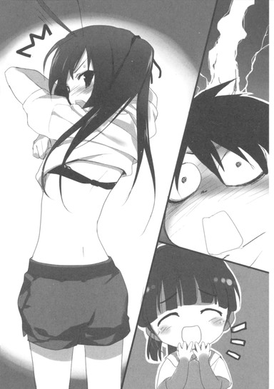
生徒会室からハルユキを追い出して超高速で着替えた黒雪姫と、引き続き呆れ顔の謡に続いて校門を出ると、午後七時に二十秒を残して危うく下校ログが正常に記録された。
ふう、と一息つく暇もなく、頭上から険のある声が降ってくる。
「ハルユキ君、もう暗いから、キミは謡を送っていけ！明日は飼育委員会の活動が終わり次第、生徒会室に集合！タクム君とチユリ君にはキミから声を掛けておくように！以上！ではさようなら！」
超早口で指令と挨拶をまくし立てた黒雪姫は、くるりと身を翻すと、校門前を阿佐ヶ谷方面へと去っていった。かつかつというローファーの音が遠ざかり、揺れる黒髪が夕闇に溶けるのを見送ってから、ハルユキは胸に溜めていた空気を吐き出した。
「............僕、べつに悪くないよな............」
ぼそりと呟くと、隣に立つ謡がちこちこと両手の指を動かした。
【ＵＩ＞ サッちんは昔から隠れドジっ子なのです】
「............うん、何となく知ってた............」
こっくんと頷かせた頭を続けて軽く左右に振り、思考を立て直す。あまりにも色々なことがあった月曜の放課後だが、まだオールミッション・コンプリートとは行かない。黒雪姫に命じられた、謡を自宅まで送っていくという任務が残っている。
ちらりと空を見ると、夕焼けの色はほとんど消え去り、都心の街灯りが雲の底をおぼろに照らしていた。あらゆる道路にソーシャルカメラ網が張り巡らされているといっても、この時間に小学四年生が一人歩きするのは確かに物騒だろう。いや、それ以前に──。
「あの......四埜宮さん。もう七時回ってるけど、門限とかはだいじょぶなの？」
訊ねると、謡は表情一つ変えずに指を動かした。
【ＵＩ＞ 問題ないのです。私もバーストリンカーなのですよ？】
数秒をかけてその一文の意味を理解した時、ハルユキは思わず口もとを引き結んでしまった。
ほぼ全てのバーストリンカーは、ひとつの共通する傷を抱えている。ハルユキの〈師匠〉であるスカイ・レイカーの言葉だ。傷とはつまり、赤ん坊の頃、両親の手の代わりにニューロリンカーを与えられたこと。そういう育ち方をした子供が、たかが帰宅が遅いくらいで叱られるだろうかと、謡はそう言ったのだ。
その答えは、たとえ九時過ぎに帰ろうとも、家に叱る大人のいないハルユキがよく知っている。
「......そっか。でも、まあ、早く帰るにこしたことないよ。あんなに掃除頑張ったんだから、お腹すいたでしょ」
そう言った途端、ハルユキ自身の消化器から、やや音量大きめの低周波が発生した。謡は小さくくすりと笑うと、結わえ髪を揺らして頷いた。
【ＵＩ＞ 確かにそのようです。私は一人で帰れますから、有田さんもこれで帰宅なさってください。では、ごきげんよう】
一札し、白いスカートの裾を翻して南へと歩き始める謡を、ハルユキは慌てて追いかけた。
「いや、送るよ！ もう暗いし、それにここで帰ったら、明日黒雪姫先輩にすっごい怒られちゃうし......」
もごもご早口に言うと、謡は歩きながら小首を傾げ、答えた。
【ＵＩ＞ それも確かかもです。では、すみませんが大宮までよろしくお願いします】
そしてやや針路を左に調整し、ハルユキの真横に並んだ。
それは、実になんとも不思議な道行きだった。
ハルユキは一人っ子なので当然弟も妹もいないし、母親が親類縁者と疎遠なので、小さい子供と遊んだ記憶も無いに等しい。強いて挙げれば、隣接する中野区にハトコのサイトウトモコちゃんが住んでいるはずだが、五、六年前に母方の実家で顔を合わせたきりだ。
いや──、年下の友達ならば、そのトモコちゃんに偽装して自宅に乗り込んできたニコがいると言えばいる。しかし何せ向こうは大レギオン〈プロミネンス〉を率いる赤の王だ。とても小さい子扱いする気にはなれない。というよりそんな真似をしたら主砲の一撃で黒こげにされかねない。
ゆえにこうして、茶革のランドセルを背負い右手にスポーツバッグを下げた四埜宮謡の隣を、年上のお兄さん的な立場で歩くという経験はハルユキにとって大変新鮮なものだった。
「あ、ば、バッグ持つよ」
百メートル以上移動してからようやく気づきそう言うと、謡はぺこりと一礼してから差し出してきた。受け取り、必要以上に大きな動作でひょいと左手に持ち替えてみたりする。
──誰かを守る、ってこんな感じなのかな。
ＬＥＤ街灯に照らされた住宅街の瀟洒な小道を、歩幅を調節して歩きながら、ハルユキはそんなことをぼーっと考えた。
いままで想像したこともなかったが、ハルユキもいずれ遠い未来には、ブレイン・バースト・プログラムのコピーインストール権を行使する時がくるはずだ。それはつまり、〈親〉バーストリンカーとして誰かを〈子〉に選ぶということだ。何も知らないレベル１の雛鳥を見守り育てるということなのだ。
──もし、仮に、万が一、その相手が隣を歩く四埜宮謡のような、年下のか弱げな女の子だったら。いや想像を一歩進めて、謡が自分の〈子〉なら。僕は〈親〉としてちゃんと振る舞えるだろうか。時として厳しく、それでいて優しく、謡を守り導けるだろうか。
──できる。できるはずだ。だってちゃんと「バッグを持つ」って言えたし。歩行スピードもしっかり合わせてるし。ああ、いっそ本当に〈親子〉だったらいいのに。
などと、取り留めもない想像いや妄想を巡らせるハルユキは、数十分前に知らされたばかりの重大な事実をすっぽり失念していた。
その迂闊さを思い知らされたのは、無言で歩いていた謡が不意に両手を動かし、遠慮ぎみにタイプした幾つかのセンテンスだった。
【ＵＩ＞ 私の家はもうすぐそこです。ついては、この機会に、有田さんに少々お願いがあるのですが】
瞬きしてその一文を読んだハルユキは、擬似親気分が抜けないままにこくこくと頷いた。
「い、いいよ、何でも言って！」
【ＵＩ＞ 送って頂いたうえに、重ねがさねご面倒をおかけしてしまいますが......】
「いいって、大丈夫。遠慮しないで！」
【ＵＩ＞ ありがとうございます。では、お言葉に甘えさせて頂くのです】
「う、うん、な......何？」
【ＵＩ＞ あなたの実力を見せてください。サッちんの計画に従う前に、〈白銀の鴉〉が真にネガ・ネビュラスの一番槍を担うに足る者なのかどうか、この眼で確かめておきたいのです】
「..................はい？」
ぴきーん。
と不自然な姿勢および表情で固まるハルユキの視線の先で、謡は肩からランドセルを下ろし、フラップを開けて手を差し込むと、すぐに抜いた。
小さな手に握られていたのは、同じく小型の、まるで素焼きのような質感を持つ、艶消しオフホワイトのニューロリンカーだった。
左手がポニーテールを持ち上げ、華奢なうなじに量子デバイスが装着されるのを見ながら、ハルユキはようやく自分がすっぽり忘れていた事実に思い至った。
四埜宮謡は、第一期ネガ・ネビュラスのメンバーであり、しかも〈四元素〉と称される主力、いわゆるところの四天王の一角であり、そこではかのスカイ・レイカーと同格だったのであり、つまりレベル１の雛鳥どころか、多分きっと間違いなくハルユキよりずっと、ずーっと強いハイランカーなのであって────。
フリーズしたままのハルユキのシャツの腰あたりをくいくいと引っ張り、謡は小道に等間隔で設置されているベンチの一つに誘導した。ハルユキが半ば自動操縦で腰を下ろすと、再びランドセルを探り、何かを取り出す。
それは、白いビニールで被覆された、直結用ＸＳＢケーブルだった。
ハルユキにプラグの片方を差し出しながら、謡は左手だけで器用にタイプした。
【ＵＩ＞ 私と一対一で戦いますか？ それともタッグを組んで、他のチームと二対二がいいですか？】
タッグでお願いします。
と、ハルユキは〇・五秒で即答した。
ハルユキと謡が腰掛けた遊歩道のベンチは、現実世界の住所では杉並区大宮一丁目、そして加速世界では〈杉並第二戦域〉と呼ばれるエリアに存在した。
東には新宿エリア、南東には渋谷エリアという〈対戦どころ〉が隣接しているせいで、どちらかと言えば過疎傾向な場所だ。しかし午後六時から八時にかけてが一日でもっとも盛んに対戦が行われる時間だし、すぐそばの環七沿いには大きなダイブカフェも幾つかあるので、マッチングリストには少なくとも二十人程度は登録されているはずだった。
長さ一メートル半のＸＳＢケーブルで謡と直結したハルユキは、ワイヤードコネクション警告が現れ消えるのを、背筋をまっすぐ伸ばし両手を膝の上で握りながら眺めた。五つも年下の少女のほうは、まるで表情も変えずに落ち着いた仕草で仮想デスクトップを操作している。恐らくＢＢコンソールを起動し、ハルユキ──〈シルバー・クロウ〉をタッグパートナー設定したのだろう。
【ＵＩ＞ それでは、対戦相手のタッグは私が適当に選びます。序盤はサポートに回りますので、有田さんの思うがままに戦ってみてください。準備がよろしければ、開始するのです】
「はっ、はい、どうぞ！」
乾いた口でそう答え、ハルユキは謡の艶やかな唇をじっと注視した。無論ハラスメント行為ではなく、謡の加速コマンドとタイミングを合わせるためである。
しかし、直後。ハルユキは、今まで考えもしなかった一つの疑問と直面した。
四埜宮謡は、運動性失語症に罹病している。肉声で喋れないのだ。その状態で、いったいどのようにしてブレイン・バースト・プログラムにコマンドを伝えるのだろうか？
答えは、至極シンプルなものだった。
謡は不意に眼を閉じると、眉間に細い谷を刻んだ。小さく開かれた唇が、痙攣するように震える。その奥で食い縛られた歯が、きりきりと軋む。額に汗の玉がひとつ、ふたつと浮く。
力技だ。出せない声を、体にむち打って無理矢理に出そうとしている。
やめよう、と叫びかけた言葉を、ハルユキは必死に呑み込んだ。謡が旧ネガ・ネビュラスの四天王を張れるほどのハイランカーなら、そこに上り詰めるまでに数え切れないほどの対戦を経験しているはずだ。その全てが〈待ち受け〉であるわけもない。つまりこの少女は、途方もなく苦しそうに見えるこの行為を、何度も何度も数限りなく繰り返してきたのだ。
時間にしたら五秒足らずだったろうが、その何倍も長く感じられた苦闘の果てに、謡の唇が二センチほど開いた。続いてすぼめられ、更に横に開く。最後にもう一度小さく尖る。
バー、スト、リン、ク。
まったく無音ではあったが、確かにそれらのシラブルを謡は生身の口で刻んでみせた。同時にハルユキも、いつになくぎこちない動きで、同じひと言を呟いていた。
６
じっとりと湿った梅雨の温気が、嘘のように乾いた涼風へと変わり、体を撫でた。
デュエルアバターの鏡面ヘルメットの下で、ハルユキはぱちっと眼を開けた。どの属性のステージに出現したのかを確かめるこの瞬間は、何度対戦を重ねてもわくわくさせられる。
しかし今は、それより何倍も気になることが心を占めていた。ゆえにハルユキは、燃えるような夕焼けと風に揺れる金色の草の海を見るやいなや〈草原ステージ〉！と認識し、すぐさまぐるりと体を巡らせた。
気になること、すなわち四埜宮謡の操るデュエルアバターの姿を視界中央に捉えた瞬間、ハルユキは息を呑んだ。
ある程度予想していた通り、かなり小柄だ。しかし、そうと感じさせない重厚なシルエットを持っている。理由は、両腕の下部に長く垂れるシールドと、高い位置の腰から足元までを広がりながら覆うアーマースカートを備えているからだ。その二つが合わさると、まるで白衣と緋袴──和風の着物のように見える。
そして更に印象的なのは、アバターの上半身と下半身がまるで異なる色彩を持っていることだ。
胴と腕の装甲を染めるのは、彼女のニューロリンカーと似た、しっとりとした半光沢のオフホワイト。しかし袴状のアーマーは、深さと明るさを併せ持つ密度のある赤だ。初代赤の王〈レッド・ライダー〉の純粋な赤色とも、二代目〈スカーレット・レイン〉の透明感のある紅色とも違う。フォルムと同じくどこか和風の──言うなれば〈緋〉か。
頭部は、現実の謡とよく似ていた。白いマスクの額を前髪状の装甲が覆い、後頭部からは細いスタビライザーが長く伸びる。袴と同じ緋色のアイレンズは、可憐ながらもきりりと凛々しい。
ハルユキは、ここまで鮮やかなツートンカラーのデュエルアバターを、かつて見たことはなかった。シルバー・クロウは言うまでもなく全身が銀色だし、他のネガ・ネビュラスのメンバーも基本的に単一カラーだ。塗り分けされたアバターもいないことはないが、大抵は同系色の濃淡のみで構成されている。その理由は、アバターの冠するカラーネーム＝アバターの属性＝ボディの色だからだ。カラーネームが必ず一単語である以上、表現される色も必然的に一つに限定される──はずなのだが。
しかし今、ハルユキの眼前に楚々と立つ謡のアバターは、下半身にかなり純粋な〈遠隔の赤〉を、上半身に同じく高純度の〈特色の白〉をまとっている。それぞれの示す属性は、明らかに異なる。この二色を一語で表すカラーネームとは、一体いかなるものなのか。
ハルユキは、強く眼を引きつける和風のアバターから意識して視線を外し、視界左上に二つ並んで表示された体力ゲージのうち、下側のものに付された名前を確認した。
【Ａｒｄｏｒ Ｍａｉｄｅｎ】。それが、四埜宮謡のアバターの名だった。
〈メイデン〉は解る。乙女という意味だ。いかにも謡に相応しい名前と言えるだろう。
しかし肝心のカラーネーム、〈アーダー〉と読むのであろう英単語は、ハルユキの自前の脳では咄嗟に和訳できなかった。もしここが現実世界なら、単語に視線をフォーカスしただけで翻訳窓をポップさせられるのだが、残念ながらブレイン・バーストにそこまでの便利機能は存在しない。どこかで眼にした単語のようにも思えるが、少なくとも中学二年までの英語の教科書に含まれていないのは確実だ。
その名前なんて意味ですか、と訊くのはあまりに間抜けすぎるので断念し、ハルユキは最後にタッグパートナーのレベルを確かめた。７──やはり相当に高い。
ここまでの全情報を、三秒ほどを費やして収集したハルユキは、とりあえずぺこりと頭を下げて言った。
「そ......それじゃ、よろしくお願いします。がっかりさせないように、がんばります」
顔を上げてから、ハテと思う。ブレイン・バーストには、自動翻訳機能と同じくテキストチャット機能も搭載されていないはずだ。いったいどうやって意思疎通するのだろうか？手話？それともアイコンタクト？
しかし、直後。謡は、ハルユキの眼、いや耳を疑わせる手段で応答した。
「よろしくなのです。それと、突然丁寧語にならなくてもいいのですよ、クーさん」
──クーさん？ それって僕のこと？ クロウのク？
いや、気にするべきはそこではない。今、確かに、間違いなく──喋った。謡のアバター〈アーダー・メイデン〉のマスクの口部分が動いて、声が聞こえた。
「あっ、あ、あの!? し、し、しの......じゃない、ええと、こっちでは何て呼べば......」
「〈デンデン〉以外なら何でもいいのです。昔は主に〈メイ〉と呼ばれていました」
──Ｍａｉｄｅｎの上半分かな？ いや、今はそれよりも。
「......じゃ、じゃあ......メイさん、その、今、しゃべっ......て......」
驚きのあまりややぶしつけな言葉をハルユキは口にしてしまったが、気にする様子もなく謡はこくりと頷いた。
「〈加速〉している間だけ、私はこうして言葉を話せるのです。むしろそれこそが、いまの私がこの世界を訪れるたった一つの理由だとも言えます」
その声は、無垢な幼さと清らかさの中に、ぴんと芯の通った強さを備えていた。ハルユキの、現実世界と大差ないガタピシした喋りと比べれば、むしろ圧倒的に滑らかかつ抑揚ゆたかで、まるで声を出す訓練を受けたかのように明瞭だった。
「で......でも、この世界で喋るのって、ニューロリンカーで思考発声するのと同じ仕組みだと思ってたんですけど......」
「詳しい理屈は、私にも解らないのです。以前ブラック・ロータスは、量子的意識体との接続深度が違うからだと言っていました」
「は、はあ......僕にも、何のことだかさっぱり......」
首を捻りつつ、ハルユキは改めて謡のデュエルアバターの全体像を眺めた。
鮮やかな白と緋色のコンビネーションだけでも美しいのに、和風の衣に袴姿と組み合わさると、まるで魂が吸い込まれるかのようなある種の神聖さすら感じてしまう。いや、それには理由があるのかもしれない。このカラーにこのフォルムの取り合わせは、現実世界にも存在する何かを思い起こさせる。ずっと昔、どこかで見たような......あれは確か、まだ両親が離婚する前、お正月に三人で出かけて......。
「あの、クーさん。私をどれだけ見ても別に構わないのですが」
「............それで......大きな神社に......初詣に行って......」
「六月に初詣に行くのも別に構わないのですが」
「お参りしたあと、おみくじを買って......あれ、僕だけ大凶だったんだよなあ......」
「さっきから、ガイドカーソルが。元気に動いているのです」
「確か、勝負ごとは大いに負けあり......って、えっ!?」
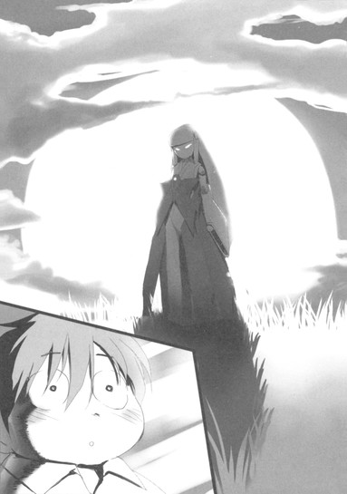
ようやく謡の声が意識まで届き、ハルユキは慌てて視界中央にうっすら表示される水色の三角形をアクティブにした。確かに、右から左へと急速に向きを変えているこの矢印が指す先にいるのは──もちろん、〈敵〉だ。
なぜなら、この綺麗な草原はおしゃべり用のバーチャルスペースではなく、ブレイン・バストの作り出す対戦フィールドなのだから。
「やばっ......だいぶ接近されてる！」
慌てて身構えながら、ハルユキは視界右上の敵タッグを確認した。
一人は、レベル４の〈オリーブ・グラブ〉。確か緑のレギオンの一員だったと思うが面識はない。
次にもう一人の名前を見た途端、ハルユキはおやっと思った。
〈ブッシュ・ウータン〉だ。同じく緑のレギオンに所属するレベル３で、こちらとは数回戦ったことがある。しかしこれまでウータンが杉並に現れた時は、彼が〈兄貴〉と慕うバイク使い〈アッシュ・ローラー〉と常にコンビを組んでいたのだ。
ハルユキは小さく首を傾げたが、すぐに違和感を捨てた。たまには兄貴とタイミングが合わないこともあるだろう。それより、ガイドカーソルの振れ幅からすると敵はもう二十メートル以内にまで肉薄している。接触まであとわずか──のはずなのだが。
「............ど、どこだ!?」
つま先立ちになり、ハルユキはカーソルの指す先を懸命に睨んだ。しかし、背の高い草がどこまでも風に揺れるばかりで、敵アバターはまるで影も形もない。恐らく、体を限界まで低くして、草むらの底を泳ぐように移動しているのだ。
きょろきょろしていると、隣で謡が囁いた。
「クーさん、敵タッグは前衛後衛に分かれてくるようです。私は後ろのを牽制してますので、前のはお願いします。お手並み拝見、なのです」
そしてすーっと右方向に離れていく。
対戦前の口ぶりでは、長らく隠遁していた謡が今になってハルユキたちの前に現れたのは、黒雪姫の〈災禍の鎧浄化計画〉と関連しているようだった。その計画に協力するか否かを、謡はこの一戦で見極めるつもりらしい。
となれば、楽勝とまでは行かずともせめて快勝くらいは披露しなくてはならないのだが、敵が見つからないのではそれどころではない。左へ左へと螺旋を描いて接近してくるらしい相手は、間もなく十メートルレンジに入るはずだ。そうなればガイドカーソルすらも消えてしまう。いっそう必死に眼を凝らすが、ランダムな風に揺れる草むらと、敵が揺らしている草の区別はまったくつかない。
──そうだ、音だ！
ハルユキはいきなり眼を閉じ、耳に全神経を集中した。敵が草をかき分ける騒音と、風が起こす葉擦れは微妙に音質が違うはずだ。それを聞き分けるのだ。
二秒後。
「......ぜんぜん判んねー！」
呻き、ハルユキは再度瞼を開けた。四方八方から押し寄せてくる、ザザザ......というサウンドエフェクトはまるで同じにしか聞こえない。どこかに微妙な違いはあるのだろうが、識別しようと思ったら並大抵ではない訓練が必要だろう。
眼もだめ、耳もだめ。羽根を使って上昇すれば見つけられるかもしれないが、まだ必殺技ゲージは空だし周囲に破壊できるようなオブジェクトもない。
焦りのあまり歯がみした時、ついに視界からガイドカーソルが消えた。正確にはもう一つ、ごく色の薄いカーソルが残っているが、これは遠距離に留まる敵後衛のもので、今は役に立たない。
前衛──ブッシュ・ウータンかオリーブ・グラブのどちらかは不明だが、そいつは今半径十メートル以内のどこかを移動し、シルバー・クロウに先制の痛撃を浴びせんとタイミングを計っている。いっそこちらも草原の底に匍匐してみるという手もあるが、それをするとシルバー・クロウ最大の武器である機動力が失われ、掴み合いのグラウンド勝負に持ち込まれてしまう公算が大きい。
もしこれがいつもの対戦なら、このへんで考えることを放棄し、序盤は押されるのを覚悟してゲージを溜めて中盤以降の飛行勝負に賭けるところだ。むしろそれがハルユキの基本的戦法だとも言える。なぜなら打たれ弱くリーチも短いシルバー・クロウは、地上での格闘戦には不向きだからだ。飛べない間は劣勢で当然──
と、心のどこかで思い続けてきたからだ。
しかし、四埜宮謡は言った。ハルユキの実力を見たい、と。
実力とは〈ほんとうの力量〉のことだ。ほんとうとは、留保や言い訳がないということだ。そして何より、この戦いも、きっと〈浄化計画〉の成否に直結しているのだ。
──本当に、もう打つ手はないか？ 僕の中には、この状況に対応できるものはもう何一つ残っていないのか？
そう考えた瞬間、ハルユキの胸中に、一つの思考が稲妻のように閃いた。
あの人なら。シルバー・クロウと同じく基本的には近接・高機動型の、黒の王ブラック・ロータスならどうするだろうか。もちろん、こんなにアタフタ回りを眺めたりはするまい。きっと一所に悠然と立ち、敵が攻撃してくるその瞬間を待ち受け、一瞬の攻防に全てを賭けるだろう。そう、そうだ。敵も同じく近接型ならば、攻撃の瞬間だけは草むらから立ち上がらざるを得ないはずだ。
もちろん、こちらの初動は遅れる。敵が見えても先手は取れない。しかし、防御を攻撃に変える技術もあることを、一週間前の直接対戦であの人は教えてくれた。まったく同じようにはできないだろうが、トライして失敗するほうが、諦めてただ立っているより百倍もマシだ。
ハルユキは、全身の力を抜き、瞼を半眼に閉じた。
脳裏に、先週戦った時のブラック・ロータスの姿を思い浮かべる。
シルバー・クロウの全力全速の右ストレートを、黒の王はむしろゆったりとした動きで受けた。〈速い〉のではなく〈無駄のない〉動作。敵の攻撃力を弾くのではなく引き込み、角度を変え、放つ。そのテクニックが黒の王言うところの〈柔法〉、すなわち〈受け返し〉だ。
まったく動いていないにもかかわらず、りいぃぃんと高い音が意識に生まれ、周囲のノイズを遠ざけた。ハルユキの集中が一定のレベルを超えると発現する〈加速感覚〉だが、これほど力を抜いた静止状態で感じるのは初めてのことだった。
長いのか短いのか判らない時間が経過し、ついに襲ってきた敵の初撃を、ハルユキは音でも姿でもなく踏み込みの振動で悟った。
──右後ろ！
右手を持ち上げつつ体を回す。草むらから伸び上がりつつパンチを放とうとしているのは、周囲に溶け込むグラスグリーンの装甲を持つ小柄なアバター、〈ブッシュ・ウータン〉だった。
ある種の霊長類を思わせるマスク。前屈したボディとコンパクトな脚に比べて、両腕が異様なまでに太く、長い。恐らく草むらの中を走るのではなく、この逞しい腕で〈泳いで〉いたのだろう。足音がしなくて当然だ。
身長が低いことも、このフィールドでは有利に働く。ハルユキにとっては、草むらの底からいきなりパンチが撃ち出されてきたに等しい。相手を視認した時にはもう、巨大な右拳が顔面数十センチに迫っている。足場が悪いこともあり、回避は完全に不可能だ。
「......ホオォ!!」
初撃ヒットを確信したか、ウータンが高い気合いを放った。対してハルユキは無言のまま、広げた右手で、相手の拳をゆるく受けた。
掌に、敵の右フックの燃えるような威力を感じる。ここで強引にガードしようとしても一瞬で腕が弾かれ、顔面に痛撃を喰らうだろう。そうではなく、相手に逆らわずに自分の動きを融合させ、攻撃の方向だけを変える。要諦は恐らく〈円の動き〉だ。かつて毎日プレイしていたバーチャル・スカッシュ・ゲームでも、超高速のボールを思い切り打ち返し続けていてはスピードが無限に上がってしまうので、時としてラケットのフェイスで球を包むようにして威力を殺していた。
その動作を思い出しながら、ハルユキは敵のパンチに添うように掌を反時計回りに動かした。威力を殺しきれず、右手の装甲がぴしぴしと軋む。しかし同時に、わずかずつパンチの軌道が逸れていく感覚も生まれる──。
黒雪姫はここから、攻撃ベクトルを百八十度曲げ、ハルユキを真後ろに吹き飛ばしてみせた。そこまでの技術はもちろんない。しかし、左下方向にほんの十度ほど曲げられれば、少なくともクリーンヒットは避けられる。呼吸を止め、歯を食い縛り、慎重に、慎重に、ウータンの拳を回転動作に巻き込んでいく。
────ヂッ！
と小さな擦過音が響き、左頬に鋭い熱感が走った。ＨＰゲージが数ドット削れたが、巨大な拳はハルユキのヘルメットに一瞬触れたのみで後方に流れ、同時にウータンの上体が小さくぐらついた。恐らく、腕と肩だけが異様に発達した体格のせいで、立ち上がり攻撃中は重心が高くなりすぎるのだ。
そうと感じた瞬間、ハルユキは無意識のうちに右足を振り出し、ウータンの短い両脚を払っていた。
「ウホォ!?」
悲鳴とともに、草色のアバターがぐるりと前転。そのまま背中から草むらに落下していく。ざんっ！という衝撃音。背の高い草がクッションになりダメージは少ないようだが、それでもウータンのＨＰゲージも数パーセントほど凹む。
──できた！ 一応ガードリバーサルっぽいやつ！
内心で一瞬の快哉を叫ぶが、喜ぶのは早い。ウータンは再び草の海に深く潜り、ざざざ......と高速移動する気配だけが届いてくる。もう一度奇襲攻撃を狙っているのは間違いない。緩く腰を落とし、感覚を研ぎ澄ませる。
二撃目は早かった。ほんの数秒後、今度は真後ろから踏み込みの振動が伝わる。振り向く視線より先行して右手を突き出し、何かに触れたと感じた瞬間、外向きの円運動に巻き込む。
ようやく追いついた視界が捉えたのは、左ストレートをいなされて再び重心を崩すウータンの姿だった。強引に拳の軌道を修正しようとしたか、左脚が伸びていっそう体が浮いている。反射的にハルユキは左手をもウータンのパンチに添え、そのまま肩に背負った。
「せぇっ！」
短い気勢とともに、思い切り投げ飛ばす。先ほどよりも高く舞い上がったウータンは、ぐるぐると回転して頭から草むらに突っ込む。天然クッションも今度は衝撃を吸収しきれなかったようで、ダメージエフェクトとともにゲージが一割近く削れる。
ブッシュ・ウータンはしばらく草から両脚を突き出していたが、やがて腕力でびよーんと飛び上がり、反転して立った。また潜るかと思いきや、そのまま数歩下がり、びしっとハルユキを指さす。
「ウホホ、さすがはアッシュの兄貴の永遠のライバルでヤンスね！」
思わぬ台詞に、ぱちくりと瞬き。「え......、そ、そうだったの？」とややツレない台詞を口走ってしまうが、幸いウータンは気にする様子もなく叫び続ける。
「なかなか妙ちきりんな防御テクを使うじゃないッスか！〈草原ステージ〉でオイラがＦＡを取れなかったのは初めてでヤンスよ！でもこれで勝った気になるのは早いでヤンス！立ち技をやめて寝技勝負に持ち込めば、オイラこのステージではマジ無敵！ッスから！」
「うっ」
それは確かにその通りかもしれない。せっかく開眼した気がする黒雪姫直伝の〈柔法〉だが、原理的に投げ技、関節技には対応できないのだ。草の下からあの豪腕にいきなり脚を掴まれたら、有無を言わせず苦手なグラウンド展開に持ち込まれてしまう。
しかし、焦るハルユキに対して、ウータンは右手の人差し指をチチチと振ってみせた。
「でも、ここで寝技使うとギャラリーの皆さんに大不評なんスよねえ。何せまったく見えないでヤンスからねー」
その言葉にちらりと周囲を見ると、少し離れた場所でハルユキを見守る四埜宮謡──〈アーダー・メイデン〉と、まだ遠距離を移動中らしく姿の見えないもう一人の対戦相手〈オリーブ・グラブ〉の他にも、三、四名ではあるが観戦者の人影がある。近くには高い地形は一切ないため、全員同じ草原に立った状態だ。確かにこれでは、ハルユキとウータンが草むらの底でどったんばったん掴み合っても、彼らには何も見えるまい。
「......なら、どうするんだ？ あっ、腕相撲で決めようとか言っても乗らないからな！」
ハルユキが先回りして言うと、ウータンは広げた左掌に右拳をぽんと打ち付けた。
「おお、そりゃいい考えでヤンスね。でも残念ながら、その細ッコイ腕じゃあオイラの燃える力コブとは勝負になんないッスねー。っちゅうワケで、今回は、ゲットしたばっかの新ワザを使わしてもらうでヤンスよ!!」
「し、新技!?」
これには身構えざるを得ない。ハルユキの知る限り、ブッシュ・ウータンの武器はあの発達した両腕のパワーと、必殺技ゲージを消費して腕を三倍以上にも伸ばすアビリティの二つだけのはずだ。先週戦った時からレベルは３のまま上がっていないので、新しい必殺技や能力を獲得したわけではあるまい。となればポイントで強化外装を買ったか、自分で新戦法を工夫したかだ。どちらにしても要警戒だ。
腰を落とし、神経を張り詰めさせるハルユキに向かって、ウータンは無造作に近づきながらいっそう挑発的な台詞を発した。
「ムホホ、この前の領土戦みたくサックリ勝てると思って乱入してきたなら後悔するでヤンスよ。オイラはもう先週のオイラじゃないんス。見たらビビるッスよ......これが、生まれ変わったオイラの力でヤンス!!」
立ち止まり、大きな動作でぐっと両腕をクロスさせる。一瞬溜め、思い切り左右に開く。同時に──叫ぶ。
「〈ＩＳモード〉発動ッ!! でヤンス!!」
あ......アイエスモード？
まったく聞いたことのない技名コールに途惑いつつも、いきなり飛び道具が発射されても避けられるよう、ハルユキはいっそう神経を張り詰めさせた。
しかし、続いた現象は、あらゆる予測を裏切るものだった。
ブッシュ・ウータンの、草色の胸部装甲の中心に、ぼこっと音を立てて奇妙なモノが浮き上がった。それは、直径五センチほどの黒い半球だった。深い光沢があるが、金属質ではない。プラスチック、いやいっそ生物を思わせる、濡れたような輝き。
直後、その印象が正しかったことが証明された。半球の表面が、まるで瞼を開くように、中央から上下に割れたのだ。出現した〈眼〉は、血を思わせる深い赤色の光を宿し、じっとハルユキを凝視した。
直後──。
ぐわっ！ と凄まじい圧力がブッシュ・ウータンの全身から放たれ、周囲の草が放射状に倒された。続いて、胸の〈眼〉を中心に黒いオーラが放たれ、ウータンの全身を包み込んで高々と迸った。十メートル近い距離があるのに、ハルユキのボディ表面にもチリチリと突き刺すようなプレッシャーが伝わってくる。
濃い影のようなオーラをまとったウータンは、異様にギラつく両眼でハルユキを見据えると、何の躊躇いも見せずに正面から突っ込んできた。雄叫びとともに右拳を大きく振りかぶり、まったく聞き覚えのない技名を高らかに発する。
「ホオオオォォォ......〈ダーク・ブロウ〉!!」
ズウウッ、と重々しい振動音を響かせ、拳がいっそう分厚く闇に覆われる。そのパンチが、巨大な鉄球を思わせる圧力を振りまきつつ、ハルユキに迫る。
「くっ......」
先ほどと同じく、〈ガードリバーサル〉を仕掛けようと思えば可能なタイミングだった。しかしハルユキは突如えも言われぬ悪寒に襲われ、とっさに回避に切り替えた。思い切り左に飛び、からくも拳を避ける。
直後、カウンターで反撃を入れることすら忘れ、ハルユキはこぼれんばかりに眼を瞠った。
空振ったウータンの拳が、自らの足元に突き刺さるや──地面を、密生する草ごと、あたかも隕石が衝突したかの如くごっそりと吹き飛ばしたのだ。
本来、対戦ステージの地面というのは、建物や岩と違いそう簡単に破壊できるものではない。なのに、たった一撃でああも深いクレーターを穿つとは、尋常な威力ではない。仮に受け返しを試みていたら、あのパワーを片手で受ける羽目になっていたところだ。
──なんだあれ!? 必殺技......いや、強化外装か!?
無言の驚愕を漏らしながら、ハルユキは反射的に、ウータンのＨＰゲージの下に表示される細い青ライン──必殺技ゲージを確かめた。
そして、これまでに倍する衝撃に打たれ、喘いだ。
必殺技ゲージが、まるで減っていない。いや、そもそもほとんど溜まってすらいないのだ。なのにウータンの全身からは、赤い燐光を帯びた黒いオーラが溢れんばかりに放射されている。
ゲージを消費しない継続的発光。その現象を説明する言葉は、加速世界には一つしか存在しない。
すなわち〈過剰光〉。ノーマルな運動命令系の裏に隠されたもう一つのアバター操作経路、〈イメージ制御系〉を強力なイマジネーションが通過する時に溢れた信号が、光として処理され、眼に見える。
ここに至って、ハルユキはようやく〈ＩＳモード〉が何なのかを悟った。
〈インカーネイト・システム・モード〉の略に違いない。使い慣れた言い方をするならば〈心意モード〉だ。いまウータンの体を覆っているオーラは、禁断の力たる心意システムが発動中であるという証なのだ。
だが、いったいなぜ。心意システムを教わる時は真っ先に、一般対戦での先制使用は最大の禁忌だと叩き込まれるはずだ。それ以前に、あの胸に貼り付いている黒い目玉は何だ。心意は、使用者の心の中からだけ生まれる力だ。あんなオブジェクトを装着する必要はないはずだ。
極度の混乱に見舞われたハルユキは、漆黒のオーラを宿すウータンが、再び真正面から突っ込んでくるのにすぐには反応できなかった。
「ヴ......ホオオオオッ!!」
低い濁音の混じる雄叫びとともに、右拳が大きく振りかぶられる。ようやくハッと眼を見開くが、もう左右への回避は間に合わない。危険を痛いほど感じつつも、やむなく〈柔法〉で対処すべく、開いた左手を突き出す。
「ホオオッ......〈ダーク・ブロウ〉ッ!!」
ウータンが、先ほどと同じ技名発声とともに、轟然と拳を繰り出した。
いっそう強烈な過剰光を撒き散らすその拳を、ハルユキは掌で受けた。
凍るように冷たい。と感じたのもつかの間──。
甲高い破砕音を放って、シルバー・クロウの左手が、無数の金属片と化して呆気なく吹き飛んだ。
「ぐあっ！」
被弾痛覚が抑えられている一般対戦フィールドなのに、まるで神経系を引きちぎられるような激痛を覚え、ハルユキは呻いた。しかしウータンの拳はそこで停まらず、顔面めがけて突き進んでくる。
懸命に首を捻ってかわそうとしたが、ヘルメットの左側面を太い親指の角が抉った。再び、焼かれるような熱感。巨大な圧力に弾かれ、背中から草むらに叩き付けられる。
肘の先から欠損した左腕と、ヘルメットに刻まれた深い傷から青白い火花を散らして転がるハルユキを見下ろし、ウータンは重々しい動作で右手を引き戻すと、おもむろに左拳を高く振りかざした。
どこかユーモラスなマスクに光る両眼には、先週の対戦で──いや、ほんの数十秒前までの彼が浮かべていた、対戦に熱中する生き生きとした輝きはなかった。ただ、ハルユキを叩きのめし、破壊し、屈服させることの興奮だけにギラついているように見えた。
三度、粘液質な闇のオーラに覆われた左拳が襲いかかってくる。ハルユキは必死に背中を浮かせると、倒れたまま両の金属翼を展開し、十枚のフィンを全力で振動させた。
コンマ一秒前までハルユキの胴体があった草むらとその下の硬い地面を、ウータンの拳が深々と貫いた。血も凍るような思いでそれを見ながら、ハルユキは懸命に距離を取り、上昇に転じた。二十メートル以上も高く舞い上がってから、ようやくホバリングする。
状況が、まだ呑み込めなかった。いや、事実を認めたくなかった。ヘルメットの下で固く強張る口をどうにか動かし、言葉を押し出す。
「......う、ウータン......なぜ......その技は、いったい............」
答えは──。
上空のハルユキに向けて突き出された、巨大な右手だった。低く潰れた唸り声が、マスクの口もとから漏れる。
「......飛んでも無駄でヤンスよ......」
一杯に開かれた五指の中央に黒いオーラが集まり、凝縮した。直後、どこか歪んだエフェクトを帯びた叫び声。
「〈ダーク・ショット〉!!」
重々しい振動音とともに、ウータンの掌から漆黒のビームが撃ち出された。
最早驚くという段階すらも超え、ハルユキは迫り来る闇の大槍を呆然と眺めることしかできなかった。無意識のうちに片翼が震え、ビームの軌道から逃れんと空中でスライドしたが、間に合わず──。
ぼっ、と鈍い衝撃とともに、左の翼が中央から貫かれた。金属フィンが、銃に撃たれた鳥の羽根のように儚く散った。推力のバランスが崩れ、立て直す暇もなく地面に墜落する。
下が分厚い草むらでなければ、この時点で体力ゲージは赤くなっていただろう。それでもすでに五割近くにまで凹んだゲージをちらりと眺め、ウータンの心意技の恐るべき威力に戦慄しながら、ハルユキはどうにか上体を持ち上げた。
ざ、ざ、と草を踏みながら近づいてきたブッシュ・ウータンは、ハルユキのすぐ前で立ち止まると、にやりと顔中で笑った。
「............どうでヤンスか、オイラの新技のパワーは。すげぇっスよね？もうカンペキ無敵でヤンスよね......？」
胸の中央では、深紅の〈眼〉がどくん、どくんと光を脈動させている。その餓えたような視線を感じながら、ハルユキは切れ切れの掠れ声で訊ねた。
「ど、どうして......いったい、どうやって、その力を......？」
冷静に考えれば、誰かに心意システムの使い方を教わったのだとしか思えない。かつてハルユキがスカイ・レイカーに、そしてタクムが赤の王スカーレット・レインに心意の要諦を伝授されたように。だが、どうしても一つだけ納得できないことがある。
心意システム四種の力──すなわち〈射程〉〈移動〉〈威力〉〈防御〉拡張の各能力は、もともとのアバターの属性と合致するものしかマスターできない。それが大原則だとニコは言った。しかし眼前のブッシュ・ウータンは、カラーサークル上では〈遠隔の赤〉の対極に位置する〈防御の緑〉に属しているのに、空中のハルユキを遠距離ビーム攻撃で落としてみせた。明らかに〈射程拡張〉の心意技だ。しかもその直前には〈威力拡張〉のパンチ技をも使った。この二つの心意の両立は有り得ない。達人たるニコですら、自分の属性と反する〈威力〉〈防御〉の心意は使えないと認めたのだ。
理解の遠く及ばぬ事実を前に、ハルユキは尻餅をついたまま、ただ眼を見開くことしかできなかった。
対峙するウータンは、長く逞しい両腕をだらりと降ろした格好で、ちらりと自分の胸に貼り付く〈眼球〉を眺めた。口が動き、子供が内緒話をするかのような、やけに熱のこもったひそひそ声が流れる。
「......言ったでヤンしょ？ ゲットした......知り合いに貰ったんスよ。この〈ＩＳモード練習キット〉......略してＩＳＳキットをね」
「も......貰った？ ＩＳＳキット......だって!?」
いっそう思いがけない説明に、呆然と呟く。
練習キット、という言葉そのものには大いに聞き覚えがある。現実世界の色々な教育関連企業が、子供向けにありとあらゆる分野の商品を販売しているからだ。ピアノ練習キット。鉄棒練習キット。自転車練習キット。それらをニューロリンカーにインストールすると、フルダイブ環境や拡張現実環境で、仮想インストラクターの丁寧な指導を受けることができる。ハルユキ自身、かつて〈しゃべり方練習キット〉などという代物にお世話になったという、ちょっと人には言いたくない過去がある。
だが、まさか現実の企業が、加速世界で〈心意システム練習キット〉を売り出したりするはずがないし、そもそも心意の力は、そんなインスタントな方法で身につけられるものではないはずだ。それに、ウータンはキットを買ったのではなく知り合いに貰ったらしい。恐らく、誰か他のバーストリンカーが、ブッシュ・ウータンに『これで心意システムが練習できる』と言ってあの黒い目玉を譲渡したのだ。
では、誰に貰ったのか？ まさか......、まさか。
「それを......その〈ＩＳＳキット〉を君にくれたのは......アッシュ・ローラーか......？」
ハルユキが恐る恐る訊ねると、ウータンは一瞬奇妙な表情を作り、やがて首を左右に振った。
「......違うでヤンスよ。アッシュの兄貴には......まだ内緒っス。こういうの......兄貴は、あんまし好きじゃないかもでヤンスから......」
それを聞き、ひそかに胸をなで下ろす。アッシュ・ローラーは、親であるスカイ・レイカーから、ごく初歩的ではあるが心意の手ほどきを受けている。そんな彼が、ＩＳＳキットなどという怪しいモノに手を出すはずがないのだ。
だが、ほっとしたのもつかの間。ブッシュ・ウータンは、ハルユキに顔を寄せると、いっそう熱っぽく囁いた。
「......でも、オイラがこのキットでがんがん強くなれば、兄貴もきっと喜んでくれるはずッス。クロウさんもそう思うッスよね？一週間前はクロウさんにぼこぼこにやられたオイラが、〈ＩＳモード〉で圧勝できたって知ったら、兄貴も大喜びッスよね？ギガ・ク────ル！って言ってくれるッスよね......？」
「............！」
ウータンの丸い両眼に宿る、ギラギラとした興奮の光を間近に見て、ハルユキは鋭く息を吸い込んだ。反射的に大きくかぶりを振り、答える。
「......ち、違う。それは違うよ。ＩＳモード......いや、心意システムの力は、そんなキットで身につけていいもんじゃない。まず、自分自身の〈傷〉と向き合って......力の意味と、その源を知るところから始めなきゃだめだ。さもないと、心意の暗黒面が、逆に君自身を呑み込んでしまう......」
「説教ッスか」
という、吐き捨てるようなウータンのひと言に、ハルユキは絶句した。覆い被さるようにマスクとマスクを接近させ、ほんの数分前までは陽気なお調子者だったはずのバーストリンカーは、低く嗄れた声で言った。
「......クロウ。その口ぶりなら、あんたもこの〈力〉についてちょっとは知ってるみたいッスけど......でも、先週のレースに出てたんだから、あんたはその体で感じたはずッスよ。乱入してきた十号機が、〈ＩＳモード〉の力でオイラたちのシャトルと、何百人のギャラリーたちまでを一瞬でボロボロに錆びさせたのを。ＩＳモードには、あんなとてつもないパワーがあるんス。ブレイン・バーストのルールそのものをぶっ飛ばすような、究極の力が。それを知ってて、ずっと隠してた汚い奴らがいるんスよ。それなのに、いまさら力の意味なんて気にして、なんの役に立つんスか？いや、それどころか......もしかしたらあんたも昔から、ちょこちょこ対戦でこの力を使って、小ずるく勝ってきたんじゃないッスか......？」
大蛇のように伸びてきたウータンの右手が、ハルユキの喉もとをガッと掴む。そのまま、圧倒的な膂力で引っ張り上げる。ごく至近距離にあるウータンの、本来緑色のはずの眼の奥には、周期的に赤黒い光が瞬いている。その脈動が、胸に埋まる〈ＩＳＳキット〉の眼球に宿る光と完全に同期していることにハルユキは気付く。
「強くなきゃ、意味ないんスよ。強くなきゃ、勝率も稼げず、レギオンじゃ下っぱのまんまで、そのうちポイントが枯渇して、人知れず加速世界から消えるんだ。〈飛行アビリティ〉なんてレアな力を最初っから持ってたあんたには、オイラたち負け組バーストリンカーの気持ちなんて解んないかもッスけどね」
──解る。僕はその痛みを誰よりも知ってる。僕は自分が勝ち組だなんて思ったこと、現実世界でも加速世界でも、ただの一度もない。
ハルユキはそう言いたかった。しかし口を開くよりも早く、ブッシュ・ウータンが軋るような言葉を繋げた。
「......でも、この〈ＩＳＳキット〉は、負け組でも強くしてくれる。いや、負け組なら負け組なほど強くなれるんだ。あんたも見ただろう？まだ貰って三日しか経ってないのに、オイラはもうこんなに上手く〈ＩＳモード〉を使いこなせる。この力があれば、近接型にも遠隔型にも負けない。オレを馬鹿にしたレギオンの奴らにも......兄貴、いや、アッシュ・ローラーにも勝てる。強い......そうだ、オレは強いんだ!!」
声色だけでなく、いつしか口調すらも大きく変化していた。
シルバー・クロウの喉を掴んだ右手を高々と持ち上げ、ブッシュ・ウータンは吼えるように叫んだ。
「強い......オレは強い！ もうタッグパートナーも必要ない！〈オリーブ・グラブ〉、この対戦が終わったら、お前とも決着をつけてやる！オレとお前の〈ＩＳモード〉のどっちが強いか解らせてやるからな！どこだオリーブ！オレがこいつを仕留めるところをちゃんと見ておけ!!」
不可解極まる状況と、ブッシュ・ウータンのあまりの変容に思考がついて行けず、痺れたような意識の中でハルユキはぼんやりと考えた。
オリーブ・グラブは、この対戦におけるウータンのタッグパートナーの名前だ。緑のレギオンの仲間同士なのだろうが、口ぶりからしてオリーブのほうも〈ＩＳＳキット〉を手に入れているらしい。つまり、ハルユキが喰らったような驚異の〈全属性心意〉をオリーブも使えるはずだ。となれば、そちらと相対しているはずの四埜宮謡はどうなったのか。まさか、同じようにひとたまりもなく倒されてしまったのでは......。
ハルユキが、視界上部の体力ゲージを確認しようとしたその寸前、右方向から足音が聞こえた。咄嗟に顔を向ける。
冷たい風に揺れる草原をかき分け、見知らぬデュエルアバターがゆっくり近づいてくるところだった。
装甲は、名前の通りの褐色がかった緑──オリーブ色だ。全身は木の枝のように細いが、両手だけは不釣り合いに大きい。そして胸の真ん中には、ウータンと同じく漆黒の半球が貼り付いている。
しかしその瞼はほとんど閉じられ、内部の〈眼〉がごく細く露出しているだけだ。赤い光も不規則に明滅し、今にも消え去りそうに思える。
よくよく見ると、オリーブ・グラブ本体の歩みもやけにぎこちなかった。頻繁によろめき、そのたびに危うく踏みとどまって、どうにか前進する。まるで──何かから、逃げているかのように。
「......オリーブ？」
怪訝そうなウータンの声に、細身のアバターはぎこちなく顔を上げた。縦に長いマスクに切られたスリットの奥で、二つの眼がいっぱいに見開かれていた。
「............ウータン......た......助け......」
漏らしかけたしわがれ声が、ぴたりと中断する。さっと後方を振り返り、怯えるように右手を突き出す。木の根を思わせるごつごつとした指を、薄い影のようなオーラが取り巻く。
「だ......〈ダーク・ショ......〉」
発声されかけた技の名前を、とすっ、という軽い音が遮った。
それは、いずこからか飛来した、全体に火炎をまとった細長い棒──すなわち〈火矢〉が、オリーブ・グラブの左胸を貫いた音だった。
直後、アバターの全身が呆気なく砕け散り、消滅した。体力ゲージがゼロになったのだ。ハルユキは反射的に、視界上部の四本──いや、今はもう三本になったバーを確認した。
ブッシュ・ウータンの体力ゲージは、残り八割強。シルバー・クロウのものはほぼ半減している。そして、ハルユキのパートナーである四埜宮謡──〈アーダー・メイデン〉のゲージは、対戦開始時のまま、一ドットたりとも減っていなかった。
あの〈眼〉、ウータン言うところの〈ＩＳＳキット〉がオリーブ・グラブの胸にも出現したので、アーダー・メイデンも間違いなく先制の心意攻撃を受けたはずだ。事実、オリーブはいまわの際に、ウータンが使ったのと同じ遠距離技〈ダーク・ショット〉を放とうとした。あれが最初で最後の攻撃ではあるまい。なのに、メイデンがかすり傷さえ浴びていないのはどういうことなのか。
呼吸すらも忘れ、ハルユキはオリーブが消えた位置から、ゆっくりと視線を持ち上げていった。
二十メートル以上離れた場所に、白衣と緋袴の二色をまとうデュエルアバターの小さな姿があった。全身の装甲は、一点のくすみもなく輝いている。しかし、華奢な左手には、開始時にはなかったものがそっと握られていた。ほとんど身長と同じほどもありそうな、細長い棒。上下部分がゆるく湾曲し、その両端を細い弦が繋いでいる。つまり──弓だ。
アーダー・メイデンは、片手片翼を失ったシルバー・クロウと、その喉首を掴んで吊し上げるブッシュ・ウータンを、涼しげなアイレンズで一瞥した。
左手が動き、長大な弓をゆるやかに持ち上げる。空の右手が弦に添えられ、軽く引く。
直後、それまで何も存在しなかった手元の空間に、赤々と燃え上がる細線──火矢が出現した。ぴんと背筋を伸ばし、右腕を高く掲げて、謡は惚れ惚れするほど美しい動作で弦を引き絞っていく。
時が止まったかのような、一瞬の静止。直後、ふっと右手が閃き、同時に素早く左手首が返された。
唸りを上げて飛来した火矢は、ブッシュ・ウータンの右前腕に深々と突き立った。
「ウッ............」
声を上げ、ウータンはハルユキを振り落とすと、左手で炎の矢を引き抜いた。直後、矢は空中に燃え溶けてしまう。だがそれまでに、ウータンのゲージは一割以上も減少している。
火矢の威力と照準の正確さもさることながら、ハルユキは、そして恐らくブッシュ・ウータンも、アーダー・メイデンが弓を射る姿の凛々しさに呑まれ、動けなくなってしまった。ざわざわと揺れる草の海を、和風のアバターは滑るように近づいてくる。サイズだけを見ればこの場の誰より小さいのに、まるでそれを感じさせない圧倒的な存在感がちりちりと空気を焼く。ニコの言葉を借りれば、〈信じられないほどの情報圧〉だ。
ハルユキとウータンのすぐ近くまで歩いてきたアーダー・メイデンは、長弓を両手で水平に下げ持つと、あどけなくも凛々しい声で言った。
「予想外の展開なのです。そちらの勝負がつくまで抑えておくだけのつもりが、オリーブさんを倒してしまわなくてはなりませんでした」
まるで、無傷での勝利が失策だったかのようにそっと首を振る。続けて、思案するような独白。
「〈ＩＳＳキット〉......そんなものが無制限に流布しているとなれば、容易ならざる事態なのです。速やかに配布元を突き止めなくては......」
顔を上げ、峻烈な両眼でじっとウータンを見て、謡は言葉で真っ向から斬り込んだ。
「ブッシュ・ウータン、あなたにそれを渡したのは誰ですか？」
草色のアバターは、気圧されたかのように一歩、二歩と下がった。精神状態と連動しているのか、胸の〈眼球〉の光が不規則に明滅し、全身を覆う黒いオーラも各所で激しく揺らぐ。
ウータンは、何度も左右に首を振りながら、掠れた声で答えた。
「い、言えない......でヤンス......。オイラ。言わないって、約束したんスよ......」
「そうですか。約束ならば仕方ないのです」
謡はあっさりと頷き、尚も強い視線でまっすぐウータンを射貫きながら、次の問いを発した。
「断言しますが、その力はあなたから、与える以上のものを奪います。ブッシュ・ウータン、もしあなたが望むなら、私のアバター属性である〈炎〉は、あなたに寄生するその異物を浄めることができます。今ならまだ間に合うのです。残念ながらオリーブさんには拒否されてしまいましたが......あなたはどうしますか？」
その言葉が内包する事実の重大さに、ハルユキはすぐには気づけなかった。
一秒以上経ってから、ようやく両眼をいっぱいに見開く。
寄生する異物を浄めることができる。謡は確かにそう言った。だが、そんな能力はおいそれと宿るものではない。以前、黒雪姫と楓子が話していたではないか。寄生属性を持つオブジェクトを解除できるのは、稀少な〈浄化能力〉を持つ者だけだ、と。
それでは──四埜宮謡、〈アーダー・メイデン〉こそが、その浄化能力者なのだ。黒雪姫の立てた、〈災禍の鎧浄化計画〉の要。ハルユキに取り憑くクロム・ディザスターの因子を取り除く者。
左腕と左翼の痛みも忘れ、ただ立ち尽くすハルユキの目の前で、謡はウータンを促すかのように小さく首を頷かせた。
数メートル離れた場所で、ブッシュ・ウータンはいっそう黒いオーラを薄めさせ、弱々しく呟いた。
「お......オイラ......オイラは......ただ、強く......兄貴みたいに......強く............」
一歩、前に出る。両腕をだらりと下げ、小刻みに震えていた頭が、確かに頷きを返そうとした──その、寸前。
胸の眼球が、ほとんど真円近くまで瞼を開いた。鈍い赤色が激しく脈打つ。そのパルスに同期して、ウータン自身の眼にも赤い光が宿る。まるで、ただのオブジェクトであるはずの眼球が、ウータンの精神に干渉しているかのようにハルユキは感じる。
「..................だめだ......この力はオイラの......オレの力だ......オレの強さ......
声は徐々に低くなり、歪みを帯び始める。全身のオーラも再び厚みを増す。緩く開いていた両手が、ぐっと巨大な拳を握る。
「誰にも渡さない......盗む気だな......オレから取り上げる気なんだろう......だめだ......だめだ......」
うわごとのように唸り続けていたウータンが、いきなりぐわっと上体を持ち上げた。両眼と胸の三箇所から、暗赤色の光が細い槍となって迸る。
「オレの力、オレの〈ＩＳモード〉だ！ 盗む気なら......こうしてやる!!」
闇のオーラを凝縮させた右拳を高々と振り上げ。
「オオォォォォ......〈ダーク・ブロウ〉ッ!!」
ブッシュ・ウータンは、自分よりいっそう小柄なアーダー・メイデンを、真上から叩き潰そうとした。
「あっ......！」
ハルユキは反射的に、その拳の下に飛び込まんと踏み出しかけた。だがそれより早く、すっと持ち上げられた謡の左手がハルユキの動きを制した。
同時に、何も持たない右手が頭上に掲げられる。ウータンの巨岩のようなパンチに比べれば、その五指は萌え出たばかりの若芽のように細い。止められるはずがない、とハルユキは思った。だが。
瞬間、アーダー・メイデンの右手が、仄かなオレンジ色に輝いた。炎だ。清らかに透き通った火炎が、小さな手を覆っている。
降り注ぐ剛拳が、華奢な掌を粉砕する──その寸前で、ガアァァァン!!という凄まじい衝撃音が生まれた。インパクトの圧力が押し寄せ、ハルユキと周囲の草を大きく揺らす。だがそれを意識すらせず、ハルユキはただただ呆然と眼前の光景を眺めた。
ウータンとメイデンの手は、直接には触れていない。五センチほどの間隙の中で、黒いオーラと透明な炎が激しくせめぎ合っている。その周囲では、白いスパークが眩く弾ける。両者のイマジネーションが、互いを〈上書き〉せんと争っているのだ。つまりウータンの心意攻撃を、メイデンが自らの心意で防御したということだ。
しかし、両者の様子には大きな差がある。ウータンが剥き出しの怒りと殺気で顔を歪めているのに対して、謡はただただ静かに右手をかざしている。その表情は、どこか哀切ですらある。
不意に、ハルユキの印象を裏付ける言葉が、静かに流れた。
「ブッシュ・ウータン。あなたは考え違いをしているのです。心意......あなたの言う〈ＩＳモード〉の力は、誰かに貰ったり、誰かから奪ったりできるようなものではありません。それは、自分の心の中から生まれる、自分の似姿なのです」
「......うるさい、うるさいうるさい！」
ウータンは喚き、左拳をも振りかぶった。
だが、それが叩き付けられるよりも早く、謡の右手の炎がわずかにその勢いを強めた。
途端、いままでの均衡はあっけなく崩れ去った。ウータンの拳が激しく弾き飛ばされ、体ごと後方の草むらに倒れ込む。
圧倒的な強度差だった。謡が用いた心意は、おそらく〈防御拡張〉に分類されるものだろう。赤系のアバターには本来使えないか、使えても苦手な力のはずだ。にもかかわらず、〈過剰光〉だけであの剛拳を弾くとは、いよいよ只者ではない。
アーダー・メイデンの底知れなさを、ブッシュ・ウータンも感じたようだった。もう一度殴りかかろうとはせず、そのまま草の海に潜る。ざざざ......という音が円を描き、やがて風が起こす無数の葉擦れに溶けて消える。逃げたのではなく、恐らく遠距離から、ハルユキを落とした闇のビームを浴びせてくるつもりだろう。
「......う、じゃないメイさん、あいつは飛び道具で攻撃する気です！」
ハルユキが慌てて囁くと、謡は軽く頷いた。数歩ハルユキに近づき、くるりと周囲を見回す。再び、凛とした声が草原に流れる。
「ブッシュ・ウータン、あなたが知らないことはもう一つあるのです。心意攻撃を行うならば、一つの大きな覚悟を決めなければならない。それは、相手の心意で反撃されるかもしれない、ということです」
言葉を切り、謡はちらりとハルユキを見ると、まったく何気ない口調で囁いた。
「クーさん、一度だけでいいので、ウータンさんの攻撃を防いでください。私の心意技は発動にちょっと時間がかかるのです」
「わ、わかった......って、ええ......!?」
咄嗟に引き受けてしまってから、ハルユキは狼狽した。発射点の見えない遠距離攻撃を防ぐというのは、そう容易いことではない。と言うよりほとんど不可能と考えていい。
しかし、謡はすでにハルユキから視線を外し、精神集中を開始していた。ゆるく両脚を開いて立ち、眼をつぶる。全身を、柔らかな炎に似た過剰光が包み込む。
突然そのアバターに、思いがけない変化が訪れた。
顔の両側に垂れ下がる髪状のパーツの下から、じゃかっ！と音を立てて追加装甲がスライドし、マスク全体を覆ったのだ。滑らかな曲線を持つ真っ白な装甲には、上向きの弧を描く細いアイラインだけ存在する。まるで〈仮面〉──いや、それそのものだ。
新たな顔に刻まれた眼は、角度によって柔和にも冷酷にも見えた。少なくとも、本来のマスクのあどけなさはもう欠片もない。
次の変化は、左手に握られた和弓に発生した。
全体が炎に包まれたと思った瞬間、長さが一気に数分の一にまで縮まる。燃え上がる短い棒になってしまったそれを、謡は右手に持ち替えてまっすぐ前へと差し出す。銃か何かか、とハルユキが推測した、その途端。
ぱん、と歯切れのいい音が響き、棒が根元を中心に薄べったく展開した。扇形のそれは、見た目どおりの〈扇子〉だ。飛び道具どころか、武器ですらない。なんでせっかくの弓を扇子にしちゃうの！と叫びたくなるが、今更集中の邪魔はできない。
やむなくハルユキは、自分が何が何でもウータンのビーム攻撃を防がねばと覚悟を決め、視線を周囲に巡らせた。
ウータンの過剰光が鮮やかな原色ならば、密生する草を通しても視認できたかもしれないが、黒いオーラは夕闇の底に溶けてまったく見えない。相変わらず足音も一切聞こえず、これでは発射点の特定は、パンチ攻撃を察知するよりも数倍困難だ。
──いや。たとえ移動音は消せても、ウータンは攻撃前にたった一度だけ余計な音を発さなくてはならないはずだ。すなわち〈技名発声〉である。ノーマルな必殺技と違って、心意技には必須ではないが、発声によるイマジネーション・トリガーなしでの即時発動は相当な高等技術だ。〈ＩＳＳキット〉を手に入れて数日のウータンには、そこまでの技術はあるまい。
ハルユキは、右手の指先をぴんと伸ばすと、聴覚だけに全知覚力を傾けた。
風鳴り、葉擦れ、あらゆるノイズを意識から排除する。数分前の記憶に残る、ウータンの叫び声だけをひたすらに待ち受ける。
長い、長い数秒が過ぎ──ついに、それがハルユキの知覚に触れた。
「〈ダ......〉」
瞬間、かっと両眼を見開き、ハルユキも叫んだ。
「〈光線剣〉!!」「〈......ーク・ショット〉!!」
二つの心意技の名は、ほぼ同時に響いた。
右後方から、アーダー・メイデンを狙って発射された闇のビームに向けて、ハルユキは右手を鋭く切り上げた。指先から、銀色のオーラが剣となって長く伸びる。切っ先が、漆黒のオーラに触れ──。
ギュアアッ！ という耳をつんざくような衝撃音とともに、軌道を上に逸らした。ビームは謡の肩口ぎりぎりを掠め、危ういところで夕空へと消え去った。彼方で立ち上がっていたウータンのマスクに、驚きの色が走る。しかしアバターはすぐに再び草原に没し、高速移動で姿を隠す。
謡に指示された〈一度の防御〉はなんとか果たせた。だが心意技は必殺技ゲージを消費しない。正確には、〈精神力〉という見えないゲージを消耗させるが、ウータンの戦意はまだまだ衰えないようだ。数秒後にも、二発目のビームが襲ってくるに違いないのだが。
どうしていいのか解らなくなり、ハルユキは傍らのアーダー・メイデンを見た。
小柄なアバターは、顔に仮面を装着したまま、右手の扇子をゆるやかに動かしている。その動きは、まるで舞のようだ。
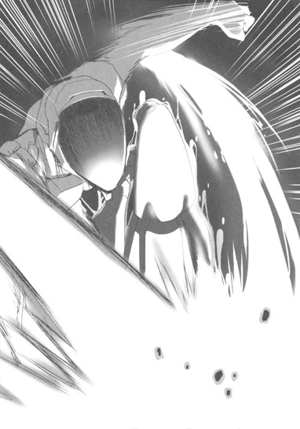
と思った瞬間、ハルユキの遠い記憶がちりりと刺激された。
どこかで、こんな光景を見た気がする。そう、幼い頃に両親と初詣に行った大きな神社で、何かの舞台を見たのだ。玄妙な雅楽が流れるなか、白い衣に赤い袴を着けた女の人が、扇子を片手に舞っていた。まさしく今の謡の姿そのものだが、幾つか違いもある。昔見た舞台では仮面など着けていなかったし、動きも謡のほうがダイナミックだ。緩急が大きく、要所でぴしりと止まるその舞は、見事と言うよりない。
もう今にも発射されるかもしれないビーム攻撃のこともほとんど忘れ、ハルユキはアーダー・メイデンの動作に見入った。
不意に──仮面の口もとから、朗々とした声が流れた。叫んでいるわけではないのに、まるでステージの端から端まで響き渡るかのような、透明かつ強靭な〈歌〉。
「〈少し涼しき三熱の〉」
突然、見渡す限りの草原が、ゆらりと揺れた。陽炎、いや火だ。謡の全身を包む仄かな炎色と同じ輝きが、ステージの遥か彼方までを覆っている。これは心意の光、つまり〈過剰光〉のはずだが、範囲があまりに広い。先週の〈ヘルメス・コード縦走レース〉を破壊したラスト・ジグソーの空間侵蝕型心意技、〈錆びる秩序〉すらもあるいは上回るのではないか。
息を呑むハルユキの耳に、続く声が高らかに届いた。
「〈苦しみを免るそれのみか〉」
世界が──燃えた。
ごう、と天にも届かんばかりに紅蓮の炎が八方から吹き上がり、周囲の草原を一瞬で焼き払っていく。ステージ全体が赤々と輝き、無数の火の粉が星のように夕空を流れる。
謡を中心とする半径二メートルばかりの空間だけは保護されているらしく、火炎は侵入してこなかった。しかしハルユキは、全身を焦がすような高熱を錯覚し、激しく喘いだ。
アーダー・メイデンが、ゆるやかに扇子を動かす。その先で火炎がいっそう猛々しく渦巻き、草どころか仮想の地面までをも焼き尽くしていく。
と、炎の幕を透かして、小さな影が見えた。
ブッシュ・ウータンだ。全身が火炎に包まれ、両手はすでに燃え崩れて存在しない。
だが不思議なことに、当人はほとんど熱を感じていないようだった。炎の柱となった自身のアバターを、不思議そうに見下ろしている。ハルユキは反射的に右上の体力ゲージを確認したが、それは恐ろしい勢いで減少中だった。早くも残り三割を下回り、火炎よりも濃い赤に染まったゲージは留まることなく削られていく。二割、一割──そして、ゼロに。
人型の炎が、ぱっと一際眩しく輝き、消えた。
呆然と視線を戻し、ハルユキは謡を見た。
小柄なアバターは、尚もしなやかに舞っている。その姿をただただ無言で見つめながら、ハルユキは幾つかの疑問に答えがもたらされるのを感じていた。
〈メイデン〉の訳語は、乙女だけではない。神に仕える女性という意味も含んでいる。白と赤の装甲色が、神社を連想させたのも当然だ。これは〈巫女〉の姿そのものではないか。
そして〈アーダー〉が意味するのは、炎。〈ファイア〉よりも熱く、〈フレイム〉よりもなお激しい〈劫火〉だ。
アーダー・メイデンー。
すなわち、劫火の巫女。
７
六月十八日、火曜日。
シリアルに牛乳をかけたいつもの朝食をさぷさぷと食べ、母親の寝室に行ってきますの声をかけたハルユキは、足早に自宅を出た。
今日は久々に太陽が顔を出しているものの、空気はべっとりと湿っている。この時間から不快指数はうなぎ上りで、ちょっとでも運動すればたちまち汗が吹き出してくるのは必至だが、それでもほとんど小走りでマンション前の幹線道路を目指す。
別に遅刻しそうなわけではない。急いでいる目的は学校ではなく、通学路の途中にある。環状七号線に出たハルユキは、いつもなら右に曲がる角をスルーしてそのまま広い歩道を南下し続けた。
中央線の高架を潜り、ゆるやかな坂を登る。数分で、環七と青梅街道が交わる大きな交差点に出る。エスカレーター式の歩道橋を上り、環七道路の中央部で立ち止まると、ちらりと視界右下の時計を確認。午前七時四十五分。
眼下を行き過ぎるＥＶの車列へと視線を移し、ハルユキは小声で呟いた。
「〈バースト・リンク〉」
ばしいぃぃっ！ という衝撃音とともに世界が青く凍る。ブレイン・バースト・プログラムがハルユキの心臓から発せられる量子クロックを増幅し、意識を一千倍に加速することで作り出す〈初期加速空間〉だ。
透明なブルー一色に染まったＥＶ群は、完全に静止しているようだが、よくよく見ると一秒に一センチ程度ずつじわじわと移動している。その奇妙な眺めを背景に、ハルユキは桃色ブタアバターの手を動かしてブレイン・バーストのマッチングリストを開くと、意外に多い登録者一覧の中から目指す名前を見つけてほっと仮想の息を吐いた。迷わずタッチし、浮き上がったメニューから〈対戦〉を選ぶ。
再度の世界変容。空が周辺部から真っ黒に染まっていく。道路両側のビルやコンビニはたちまち壁をひび割れさせ、クルマも全て消滅して、代わりに路面には無数の瓦礫や陥没孔、錆びたドラム缶などが出現する。
〈世紀末ステージ〉の、相変わらずの殺伐たる光景に、ハルユキは思わず笑みを浮かべた。別にこのステージが殊更好きだというわけではないが、今この時にはまったく相応しい。なぜなら、数秒前にハルユキが選んだ相手との、最初の〈対戦〉の舞台も世紀末ステージだったからだ。そしてそれは、ハルユキの──シルバー・クロウの生まれて初めての対戦でもあった。
耳を澄ませる。広い幹線道の北から、特徴的な内燃機関の駆動音がどこどこ聞こえてくる。水色のガイドカーソルはほとんど動かないので、どうやら一直線にエンジン全開バリバリ爆走中らしい。一瞬、いつかのように歩道橋の上に姿を隠し、相手が通過する寸前に飛び降りて全力のダイブキックをぶちかましたい──という誘惑に駆られる。
しかしハルユキは当初の予定通り、敵影が見えないうちから手すりを越え、無造作に身を躍らせた。背中の翼でゆるやかにグライドし、すたっと路面に降り立つ。
「あれっ」
「クロウ君、降りちったよ。何でだろ」
という声は、離れたビルの屋上に三々五々点在する観戦者たちのものだ。せっかくの有利を捨てるハルユキの行動を訝しんでいるのだろうが、彼らには申し訳ないことながら、今回ハルユキは戦うために〈加速〉したわけではない。
両腰に手を当てて待つこと数秒、暗がりの彼方にヘッドライトが眩く煌めいた。Ⅴツインエンジンの咆哮が一気に高まる。向こうもハルユキに気付き、シフトダウンして突っ込んでくるようだ。だがハルユキは、ファーストアタックに備えて身構える代わりに、両手を上に高々と突き出して戦意のないことを示した。
その意思は、幸い相手に伝わったようだった。闇の彼方から出現した鋼鉄の騎馬は、前後のブレーキローターから火花を散らして減速すると、各所のクロームメッキにオレンジ色のかがり火を反射させながら後輪をスライドさせ、ハルユキのすぐ目の前で停まった。ライダーが右手をハンドルから離し、チチチと指を振る。
「ソー・バッドだぜ。そっちから乱入しといて、戦う前から降参かぁ？」
恐らくは加速世界で唯一のバイク使いである〈アッシュ・ローラー〉のいかついスカルフェイスに向かって、ハルユキはぺこりと頭を下げて言った。
「すいません。今日はちょっと、アッシュさんに話があって......」
アッシュ・ローラーは、渋谷エリア以南を領土とする緑のレギオン〈グレート・ウォール〉に所属している。当然メインの対戦フィールドも渋谷のはずなのだが、なぜか平日朝と夕方の短い時間だけ、杉並エリアのマッチングリストに出現するのだ。多分、環七道路を使ってバス通学していて、その時間をいわば〈領土外遠征〉に充てているのだと推測されるが、だとすればなかなかに大胆な行為だ。デュエルアバターの出現位置傾向から乗っているバスが特定されれば、〈リアル割れ〉に繋がりかねない。
しかし、考えてみればこれほど大胆あるいは大雑把という言葉が似合うバーストリンカーも居ないので、ハルユキは脇道に逸れかけた思考を中断するとバイクに数歩近寄った。声を低め、ぼそぼそと囁きかける。
「それで、できれば〈クローズド〉で話せると助かるんですけど......」
〈クローズド・モード〉とは、その名の通り閉鎖された──つまりギャラリーの観戦を拒否する対戦のことだ。両対戦者の同意によって設定できるが、周囲からはケチくさい奴と思われるし、そもそも〈ギャラリーにいいとこを見せる〉ことがバーストリンカーの対戦のかなり大きなモチベーションでもあるので、利用する者はほとんどいない。
当然、アッシュ・ローラーも不満げにふんと鼻息を漏らした。だが、どうやらハルユキの意を汲んでくれたようで、「わーったよ」と小さく応じる。
バイク乗りは、続けて周囲をぐるりと見回すと、よく通る大声で叫んだ。
「ヘイヘェーイ、ギャラリーのボーイズンガールズ！せっかく俺様の勝つトコ観に集まってくれたのにソー・スマナッシンだけど、この対戦はナシンコにさせてもらうぜ！」
すぐさま、周囲のビルから幾つもの抗議が沸き起こる。
「えーっ、そんなのつまんなぁーい！」
「やってくれよー、久々のアシュクロ戦じゃんかよぉー」
だが、それらの声も、直後にアッシュが発した、
「しゃーねーだろ！ このカラス野郎が、俺様に告りてーっつうからよぉ！」
──というとんでもない台詞で、一気に大歓声へと変わった。
降り注ぐ拍手と口笛を浴び、ハルユキは泡を食って「そんっ、ちがっ」と叫んだが、確かにこれくらいのオマケをつけなければギャラリーも気持ちよく落ちてはくれるまい。果たしてこれはアッシュ・ローラーの深い配慮なのか、それとも後先考えないウケ狙いなのかと悩みながら、ハルユキもやむなくぺこぺこ頭を下げた。
続けて視界左上の自分の名前に触れ、〈インスト画面〉を開く。デュエルモード変更メニューから〈クローズド〉を選び、ＯＫボタンにタッチ。アッシュ・ローラーが、視界に表示されたはずのイエスノー窓をワンタッチすると、尚も大騒ぎ中のギャラリーたちが、片端から光に包まれて消滅した。
まるで音量ミュートボタンを押したかのような静寂が、しんとステージに満ちる。響くのは、低くアイドリングを続けるⅤツインエンジンの不規則な鼓動だけだ。
アッシュ・ローラーは、イグニション・キーに右手を伸ばすとそのエンジンも停止させた。
「......で？ ンだよ、話っつうのは。また羽根がなくなった......ってワケでもなさそうだな」
「ええと......ですね......。その......」
どこから説明するべきかしばし悩んでから、ハルユキは事実を順番に言おうと口を開いた。
「僕、昨日、緑のレギオンの〈ブッシュ・ウータン〉と対戦したんですが......」
だが、たったそこまで告げただけで、アッシュ・ローラーは予想外の反応を見せた。
「な......んだって!?」
シートから転げ落ちるように地面に降りると、強面のライダーは、髑髏を模したフェイスシールドをハルユキの顔にぶつけんばかりにして叫んだ。
「どこでだ!? 何時のことだ、そりゃ!?」
道路脇の手頃なコンクリート・ブロックに向き合って腰掛け、ハルユキは昨夕の一戦について、説明できる限りのことを説明した。
放課後十九時過ぎ、杉並第二戦域で、ブッシュ・ウータンとオリーブ・グラブのタッグにこちらから挑戦したこと。
対戦序盤、ウータンはいつもの『オイラでヤンス』口調を貫いていたのに、中盤に謎多き〈ＩＳＳキット〉を装着してからは、まるで別人のように乱暴な態度に変わってしまったこと。
そのキットを、ウータンは『三日前に何者かから貰った』らしいこと。
言わなかったのは、ハルユキとタッグを組んでいた〈アーダー・メイデン〉の名前とその能力だけだった。あの対戦にはギャラリーも数名いたので、いずれは噂話としてアッシュの耳にも入るだろうが、一応は自レギオンの仲間のデータを無闇と他レギオンに漏らすものではない。アッシュも、そこに関しては質問してこなかった。
十分ほどかかった説明を聞き終えたアッシュ・ローラーは、ごついパッドのついた両膝に腕を預けて前屈みになり、深く長い息を吐き出した。
「〈ＩＳモード練習キット〉だと......」
唸るように呟くと、上目遣いにハルユキを見て、短く問うてくる。
「そのＩＳモードってのは、アレか。いわゆる〈心意システム〉のことかよ？」
「え......ええ、同じものだと思います。アッシュさんはもう、心意システムを......？」
ハルユキの省略気味な質問に、髑髏ヘルメットがゆっくり左右に振られた。
「師匠から、名前だけはな。前に、〈Ⅴツイン拳〉の開発に行き詰まった時、そういうモンがあるとだけ教わったけど、そのものの修行はしてねぇよ。なんつうか......ビビっちまってな。〈心の闇〉に呑まれる危険がある、なんて言われちまうとな......。それに、師匠がネガビュに復帰した今となっちゃ、教えてくれっつうのも筋違いだしよ」
アッシュ・ローラーの言う師匠とは、彼の〈親〉にしてハルユキ自身の心意の師でもあるスカイ・レイカーのことだ。彼女は今年の四月に、古巣である黒のレギオン〈ネガ・ネビュラス〉に正式復帰したので、〈グレート・ウォール〉所属のアッシュ・ローラーとは一応敵同士となってしまった。もっとも本人たちはさして気にする様子もなく、領土戦などでは真正面からばちばち戦っているが、自分の〈親〉に頼りづらいというアッシュの立場はやはりきつい部分もあるだろう。
多少脱線するが、この機に以前から気になっていたことを訊いておこうと思い、ハルユキは口を開いた。
「あの......、アッシュさんは、どうしてグレウォに？」
「なんだよ、突然だな。んー、正直最初の頃はファッキン大レギオンって思ってたんだけどな。家があっちのほうだし、誘ってくれたのがけっこーいいヤツだったしな。入ってみたら、青やら紫に比べりゃグレウォはぜんぜんフリーな雰囲気だったし、後悔はしてねぇよ。レギマスも命令とか規律っぽいこと何も言わねーしな」
グレート・ウォールのレギマスと言えば、もちろん緑の王だ。ハルユキは先日の七王会議で垣間見た、〈グリーン・グランデ〉の徹底した寡黙さを思い出しながらなるほどと頷いた。少し間を置いてから、いよいよ本題に切り込む。
「それで、ブッシュ・ウータンなんですけど......。彼は、もしかしたら、アッシュさんの〈子〉なんですか？」
それはアッシュ・ローラーには意外な問いだったようで、スカルフェイスを大きく引いてから、ぶるぶると横に振った。
「まさか。俺様はまだ〈子〉を持てるような器じゃねーよ。ウーのヤツの〈親〉は......もういねーんだ。今年の頭に、ポイント全損しちまってな......」
その言葉に、ハルユキはぴくりと背中を震わせた。耳の奥に、昨夜のウータンの独白が鮮やかに甦る。
──強くなきゃ、意味ないんスよ。強くなきゃ、勝率も稼げず、レギオンじゃ下っぱのまんまで、そのうちポイントが枯渇して、人知れず加速世界から消えるんだ......。
黙り込むハルユキの目の前で、一度深いため息をついたアッシュ・ローラーは、突然思いも寄らぬ行動に出た。右手をヘルメットの髑髏シールドの口もとにあてがうと、ガシャッと音を立てて顔全体を後方に跳ね上げたのだ。
ぎょっと体を仰け反らせるハルユキを見て、アッシュ・ローラーはその〈素顔〉で怪訝そうな表情を作ってみせた。
ペールグリーンのアイレンズはやや細めで、顎の尖ったフェイスプレートと合わせて、どこか理系の少年を思わせる造形だ。少なくとも、日頃のヒャハハァーな世紀末ライダーぶりとは百八十度印象が異なる。その口もとから、これも意外に繊細なトーンの生声が流れた。
「......ンだよ？」
「い、いえ、何でも」
「......なら、話戻すけどな。〈親〉がいなくなっちまった時、ウータンはまだレベル１だったんだ。そんでまあ、成り行きっつうか、色々あって俺が面倒見ることになってさ？ガラじゃねーと思ったけど、ほっとく訳にもいかねぇしさ......」
「いえ......、立派な兄貴っぷりですよ」
「どうだか......。結局、俺にはあいつが心の底で何考えてるか、まるで見えてなかったのかもな。ここしばらく、ウーのヤツがなんか煮詰まってたのは気付いてたんだけどな......俺も色々忙しくて、つい後回しにしちまって......そしたら、一昨日くれーからまるで連絡取れなくなっちまってよ。いつ繋いでも渋谷のマッチングリストにいねぇし、メールも全然返してこねぇし......その内、妙な噂が聞こえてきてさ......」
「噂......？」
ハルユキが身を乗り出すと、アッシュ・ローラーは再び肩を落とし、力なく答えた。
「──ウータンが、オリーブ・グラブと組んで、世田谷や大田の過疎いエリアで怪しい技を使って勝ちまくってる、ってな。だから俺は昨日はそっち方面を回ってたんだけど、まさか杉並にいたとはな......。それに、〈怪しい技〉の正体が、そんなとんでもねえ代物だとは思わなかったぜ。装着すると心意システムが使えるアイテム......しかも他人に譲渡可能、かよ......」
「アッシュさんは、ウータンたちに〈ＩＳＳキット〉を渡したバーストリンカーに心当たりはありませんか？」
言葉の切れ目を狙っておそるおそるそう訊ねたが、シールドを上げたヘルメットは小さく横に振られた。
「......どいつと名指しはできねぇ。ウータンと仲がいい連中の名前を、俺が知ってる範囲で挙げることならできっけど......でもよクロウ、もしかしたら、ウータンに渡したヤツを特定しても意味ねぇかもしれねーぞ」
「え......そんなことないでしょう。あんな危険なもの、少なくとも配布だけはすぐ止めさせないと......！」
ハルユキは慌てて反論した。〈ウータンにＩＳＳキットを渡したバーストリンカーの特定〉こそが、こうしてアッシュ・ローラーにクローズド・モードでの話し合いを要請した目的なのだ。即座に一人に絞り込めなくても、ウータンと交流のあった者のリストを作り、順に当たっていけばいずれ配布元を突き止められる可能性はある。
だが、ハルユキのその希望的推測は、アッシュ・ローラーの続く言葉に打ち砕かれた。
「お前の見た〈ＩＳＳキット〉の見た目が生物型だったってのが、俺ァどうにも気にかかるんだよ。加速世界じゃ、ナマモノ系の装備やアイテムには特有の性質ってのがあるだろうが。壊れても自動修復したり......時間経過で分裂したり。もし......、もしそのキットの譲渡が......子コピー孫コピーありなら......」
「あっ......！」
これまで、その可能性を一切考えなかったハルユキは、思わず声を上げた。
ブッシュ・ウータンが何者かから貰ったという〈ＩＳＳキット〉。配布しているバーストリンカーは一人だろうと信じて疑わなかったが、確かにその推測には何の根拠もない。アッシュ・ローラーの言うとおり、あの黒い眼球に〈自己複製能力〉があり、コピーを任意に他人へと譲渡できるなら。そしてその行為に、何らかの報酬が存在するとすれば。
現時点で、もう何もかも手遅れかもしれない。
こうしている間にも〈ＩＳＳキット〉は無制限の拡散を続け、あの恐るべき威力を持つ暗黒の心意技を使えるバーストリンカーはどんどん増え......しかも彼らは、心意システムの何たるかを一切、誰にも教わらないままなのだ。当然、〈心意は心意によって攻撃された時以外は使ってはならない〉という第一原則など知りもせずに、対戦で使いまくるだろう。それはもう、ブレイン・バーストという対戦格闘ゲームの崩壊に等しい。ステージの属性に合わせた戦略、自分の能力を生かした戦術は意味を失い、ただ遠距離では〈ダーク・ショット〉、近距離では〈ダーク・ブロウ〉を撃ち合う戦いばかりが繰り広げられる。
その殺伐たる未来図に、ハルユキはぞっと全身を震わせた。
何とか否定材料を探そうとしたが、それより早く、アッシュ・ローラーがぼそりと呟いた。
「実はな......急に〈怪しい技〉を使いはじめたヤツの噂は、ウータンとオリーブ以外にも二、三件聞いてんだ。しかも一人は、江戸川エリアあたりに出たらしい。お前の話を聞いて、俺がＩＳＳキットの出所は複数なんじゃねーかと思ったのはその話のせいもあんだよ......」
「え、江戸川区......ですか......」
呆然と繰り返す。ウータンの本拠である渋谷、世田谷からは、皇居を挟んで反対側だ。余りにも遠い。これはいよいよ、配布というより拡散しているのではないかという疑いが強まる。
──いったい、誰が、何のために。
ハルユキは、昨夜から何度となく考えたその問いを、口中に苦く噛み締めた。
もちろん答えはまったく思いつかない。深く項垂れ、ドラム缶のかがり火に揺れる自分の影を見下ろしながらほとんど放心していると、やがてアッシュ・ローラーが低く呟いた。
「こうして話してるだけでも短けぇモンだな、三十分てのは」
反射的に視界上部のタイムカウントを確認すると、一八〇〇秒から始まったはずのそれはすでに残り三〇〇秒を切っている。もちろん、もう一度マッチングリストから対戦をやり直すことは可能だが、これ以上話しても推測に推測を重ねるだけだろう。
ハルユキは、突然の対話要請に応じてくれたことに礼を言って締めくくろうと、頭を下げかけた。
しかしそれより早く、ガシャツと音を立ててヘルメットの髑髏シールドを降ろしたアッシュ・ローラーが、エフェクト強度の増した声で早口に言った。
「クロウ。最後に、俺からも話しとくことがある」
「え......、何です？」
「あー、うーっと......俺様から持ち出す話題でもねぇんだけど......時間ねぇから直球でいくぜ。お前、ここ一週間の対戦で、なんか変だと思わなかったか？ウータンの件以外に」
「え、妙......ですか？」
咄嗟に記憶をスキャンするが、特に引っかかることはない。三日前の領土防衛戦を含めると、ノーマルな対戦を二十回程度行ったはずだが、昨日のウータン戦の印象が強すぎて勝敗すらも思い出せないくらいだ。途惑いながら、そのままを口にする。
「いえ......、どの対戦も、いたって普通だったと思うんですけど......。変って、何がですか？」
するとアッシュ・ローラーは、再び奇妙な躊躇いを見せてから、ぎこちなく答えた。
「その〈普通〉が、だよ」
「ふ、普通が変？ ──ええと......すみません、僕、先週のレースから色々心配事抱えてて、正直あんまり対戦もしてなくて......」
その心配事とはもちろん、一昨日行われた七王会議と、そこで議題となったシルバー・クロウの処遇だ。アバターのどこかに寄生したままだと思われる〈災禍の鎧〉の因子を一週間以内に浄化できなければ、ハルユキは事実上加速世界から追放されてしまう。そう、考えてみれば、〈ＩＳＳキット〉がもたらすであろう大混乱を、ハルユキは自分の眼で見られないかもしれないのだ......。
──と、そこまでを思考した瞬間、ハルユキはようやくアッシュ・ローラーの言わんとするところを悟った。
普通が変。そう、その通りだ。本来ならばハルユキは、普通に対戦などできる立場ではなかったはずなのだ。なぜなら、一週間前の〈ヘルメス・コード縦走レース〉に於いて、シルバー・クロウは百人以上のギャラリーの目の前で〈クロム・ディザスター化〉してしまったからだ。ハルユキがあの呪われた鎧の六代目所有者であるという噂は加速世界を駆け巡り、対戦を拒否されたり悪し様に罵られたりしても何ら不思議はなかったはずだ。
しかしここ一週間に対戦したどのバーストリンカーも、昨日のブッシュ・ウータンすらも、まるでハルユキのディザスター化の一件を知りもしないようだった。そんなことは、普通に考えれば有り得ない......。
「そうだ......確かに、変です。どの対戦でも......みんな、僕に何も言わなかった......」
掠れた声でそう口走るハルユキに、アッシュ・ローラーは早口でまくし立てた。
「その理由はな、お前とあの赤錆野郎とのバトルを観てた百何十人のギャラリーが、ログアウト前に全員で協定を結んだからなんだよ」
「へっ？ 協定？ なんのです？」
訳がわからず訊き返したハルユキに──。
アッシュ・ローラーは、驚くべき内容を告げた。
「〈ヘルメス・コードで災禍の鎧を装備した件に関しては、今後一切シルバー・クロウを責めない〉」
「..................え......」
「なぜなら......お前はレースを救ったからだ。赤錆野郎にぶっ壊されるはずだったイベントを、最後の最後で俺たちの手に取り戻してくれたからだ。だから、あの一回限りの変身については無言を貫くし、お前がどういう経路で〈鎧〉を入手したのかも考えない。あの場にいたギャラリー全員が、誰からともなくそう言い出して、満場一致で合意した......んだそうだ。この一週間の対戦で、誰もお前にディザスターのデの字も言わなかったのはそういう理由だ」
「........................」
余りに深い驚きと、それ以上に巨大な一つの感情に打たれ、ハルユキは無言で両眼を見開き続けた。
シルバー・クロウとラスト・ジグソーの戦いを見守っていた百人以上のギャラリーの中には、もちろん〈王〉のレギオンに所属する者だって沢山いただろう。彼らにとって、ハルユキは敵のはずだ。本来ならば、忌むべき〈災禍の鎧〉を召喚したハルユキを責め、悪し様に罵って当然なのだ。なのに──それなのに......。
「......それぞれのレギオンのメンバーである以前に、俺たちゃバーストリンカーなんだ。そういうこった」
ぽつりと言い、アッシュ・ローラーはじっとハルユキを凝視して、かつてないほど真剣な声で続けた。
「クロウ、そういう理由で、今のところお前に対する反感はそう大したことはねぇ。〈七王会議〉の決定は、グレウォの上の連中から俺もちらっと聞いたけど、それだって厳しすぎるっつう声もあるみてぇだしな。そいつを解った上で聞いてほしいんだけどよ......」
わずかな間。次に発せられるであろう言葉の不吉さを咄嗟に予感し、ハルユキは押し殺した声で促した。
「......何ですか......？」
「──俺が聞いた噂には、続きがあんだよ。ウータンやオリーブたちが使っている〈怪しい技〉......そいつは、クロム・ディザスターの能力のコピーだ、ってな......」
環状七号線を走るバスのどれかに乗っているのであろうアッシュ・ローラーとのイレギュラーなクローズド対戦を終えたハルユキは、歩道橋をそのまま南に渡って学校へと向かった。
青梅街道を西に歩く間も、校門をくぐって靴を履き替え、教室の自分の机についてからも、脳内に居座る衝撃と疑問はなかなか去ろうとしなかった。
ブッシュ・ウータンらが使った怪しい技、つまり〈ＩＳＳキット〉による心意攻撃が、クロム・ディザスターの攻撃力のコピー。
そんなことは有り得ない。誰かの能力を複製し、それを寄生アイテムに内蔵させるなどという話は聞いたこともない。しかし、それを言ったら寄生とか浄化といった言葉だって最近まで知らなかったのだ。加速世界には、まだまだハルユキの知らないロジックが存在しても不思議はない。
それに──あの〈ダーク・ブロウ〉や〈ダーク・ショット〉の黒い過剰光は、災禍の鎧が常にまとう闇のオーラと、確かによく似ていた......。
硬い樹脂製の椅子の上で、ぞくっと体を震わせる。ことの真偽はさておくとしても、そんな噂が広く流布し、同時にＩＳＳキットも拡散を続ければ、クロム・ディザスターの六代目所有者ということになっているハルユキに対する、いまの加速世界を愛するバーストリンカーたちの怒りは爆発的なものになるだろう。せっかくヘルメス・コード縦走レースのギャラリーたちが結んでくれた協定など、一瞬で消し飛んでしまうに違いない。いや、むしろ彼らこそ、ハルユキに裏切られたと考え巨大な憎悪を抱きかねない。
「............なんで、こんなことに............」
遠く響く始業のチャイムを聞きながら、ハルユキは無音で呟いた。
いったいこの危機的状況は、いつ、どこから始まっていたのか。まるで、七王会議の裁定とは別のところで、目に見えない力がハルユキを追い込もうとしているようにも思える。これは不運な偶然の連鎖なのか？それとも、誰かの意思によるものなのか......？
もし後者だとすれば、周到に準備を整え、自在に情報を操って追い詰めていくこのやり口は、強くある人物のことを思い出させる。今年の春、梅郷中の新入生としてハルユキの前に現れ、悪魔的手口でハルユキを破滅させようとした〈略奪者〉。
ちらりと天井──その向こうにある一年生の教室を見上げ、すぐに小さく首を振る。
彼が再び動いている、というようなことは絶対に有り得ない。バーストポイントを全損し、ブレイン・バーストを強制アンインストールされた者は、加速世界に関するあらゆる記憶を失う。ハルユキは最後の決闘の翌日、彼と直接話してその隠しルールを我が眼で確かめた。
だが。彼の手口が、誰かに学んだものだったとすれば？
その〈師〉が、ついに自ら動き始めたのだとしたら......？
「ハル」
ぽん、と右肩を叩かれ、ハルユキはほとんど飛び上がりかけた。物凄い勢いで振り向くと、そこには青い眼鏡の奥でぱちくりと眼を瞬かせる、見慣れた親友の顔があった。
「......タク」
「どうしたんだい？ 教室移動だよ」
幼馴染みにしてレギオンの仲間でもある黛拓武の言葉に、慌てて周囲を見る。いつの間にか朝のＨＲも終わっていたようで、クラスの生徒たちが次々と教室を出ていくところだった。火曜日の一時間目は音楽なので、防音設備のある音楽室に移動しなくてはならないのだ。
「あ......そ、そうか」
慌てて立ち上がるハルユキを見て、タクムはふと眉をひそめた。長身を屈め、ハルユキの耳元で囁く。
「......ハル。もし賞金首の件を心配してるなら、昨日も言ったけど、気に病む必要はないよ。僕やチーちゃん、楓子さん、それにもちろんマスターが、必ず君を守るから」
「あ、ああ......悪い、こっちこそ心配させて......」
どうにか微笑みを浮かべ、先に立って歩き始めながら、ハルユキは考えた。
タクムはおそらく、まだ〈ＩＳＳキット〉のことも、それがクロム・ディザスターのコピーアイテムだという噂のことも知らないだろう。だが、放課後に日課の対戦をしていれば、いずれ耳に入るはずだ。その前に、ハルユキから説明しておいたほうがいい。そう──タクムだけでなく、黒雪姫はじめ他のレギオンメンバーにも。
廊下に出たハルユキは、隣を歩くタクムの腕を肘でつつき、低い囁きを返した。
「あのな......今日、部活が終わったらオレんちに来てくれ。話したいことがあるんだけど、多分学校じゃ時間が足りないから」
「......わかった」
余計な質問を挟まず、即座に頷いてくれるタクムに感謝しつつ、更に口を動かす。
「チユにはタクから言っといてくれないか。オレは先輩と、フーコさんにもメールしとく」
「時間は？」
「そうだな、六時半」
「了解」
打てば響くやり取りをしていると、ようやく背中に貼り付いていた悪寒も遠ざかっていくようだった。ぐっと両手を握り、ハルユキは胸中で自分に言い聞かせた。
──負けない。負けるもんか。僕にはこんな頼もしい仲間がいるんだ。誰が何を企んでいようと、どんな状況に陥ろうと、心までは折られない。絶対に。
しかし、直後。タクムの放った恐るべき台詞に、ハルユキは心の中の何かがポッキリ折れる音を聞いた。
「そういえば、ハル。次の音楽の授業、たしか独唱の課題発表があるはずだけど、練習はしてきたのかい？」
８
放課後。
一時間目の音楽の独唱発表に加え、五時間円の体育では苦手極まるソフトボールをやらされ、肉体的精神的に大ダメージを追ったハルユキは、へろへろと裏庭の飼育小屋を目指した。
小屋の掃除は完了しているため、今日の日誌ファイルで指示されている任務は、委員長のハルユキ一人で行うものだけだ。昨日は速攻帰ってしまった同僚の浜島くんと井関さんの、熱い感謝とねぎらいの言葉をほんの少し期待していたのだが、先刻昇降口のところで頂戴したのは、「がんばったじゃんイインチョ」「おつー」という至極シンプルなフレーズだけだった。
「......いいさいいさ、男は自ら感謝を求めないものなのさ......」
ハードボイルドとは縁遠い口調でぶちぶちと呟きながら、薄暗い旧校舎裏を通り抜けて飼育小屋の前まで歩く。
一日太陽に晒したおかげで、小屋の床タイルは完全に乾いていた。金網の前に積み重なっている古い落ち葉の山もかなり乾燥が進んでいるようで、これなら明日には袋詰めしてゴミに出せるだろう。
自分の仕事の結果を確認するというのはなかなか気分のいいもので、ハルユキはしばらくその場に立ったまま、ぼーっと小屋を眺め続けた。
なので、突然視界中央にアドホック接続の要請ウインドウが出現した時、昨日と同じくらい驚いてしまった。一瞬仰け反ってから周囲を見回し、少し離れたところに立つ小さな人影を確認する。すぱっと切り揃えた前髪と、きつく結わえたポニーテール。純白のワンピースタイプの制服の背には、茶色のランドセル。系列の松乃木学園初等部四年生、四埜宮謡だ。
「あ、こ......こんにちは」
挨拶しつつ、急いで要請窓のＯＫボタンにタッチ。途端に自動展開したチャットウインドウに、ぱぱっと文字列が流れる。
【ＵＩ＞ こんにちは、有田さん。遅くなってすみません。こちらの管理部さんに、備品の受け入れとデータ登録をお願いしていたので少し時間がかかってしまったのです】
相変わらずの鬼っぱやタイピングだ。眼が追いつかないほどのスピードで入力された文章を二度読み、しかし内容を理解しきれずに、ハルユキは顔を上げて訊ねた。
「え......び、備品受け入れ？ って、どういう......？」
すると、謡の足元に、かなり大きめのキャリングケースが置かれていることに気付く。全体が硬そうな樹脂製で中は見えないが、あれを謡が手で運んできたならかなり大変だったろう。
「あ、それかな？ 中身出すなら、手伝うよ」
言い、ハルユキはケースに歩み寄りかけた。しかしなぜか謡はさっと右手を前にかざし、同時に左手だけでタイプした。
【ＵＩ＞ これは違います。申し訳ありませんが、しばらくこのケースには近づかないで欲しいのです。理由は後ほど説明します。備品は......今、来たようです】
その言葉、いや文字どおり、ざくざくと地面を踏む足音がハルユキの耳に届いた。視線を向けると、歩いてくるのは宅配業者の制服を来た若い男性だった。両肩に、なんだか細長い木のようなものを担いでいる。
「お届け先は、こちらでいいッスかぁー？」
という業者さんの声に、謡は素早く両手を動かした。どうやらあちらともアドホック接続しているらしい。
【ＵＩ＞ はい。お手数ですが、そちらの小屋の中に運んでください。ひとつは左奥に、もうひとつは右奥にお願いします】
「へーい」
威勢のいい返事とともに、ハルユキの眼前を業者さんがずんずん歩いていく。左右の肩に担がれているのは、長さ一メートル八十センチほどもある幹部分の先から、数本の細い枝が曲がりながら伸びる、木のような──ではなく本物の木だ。枝に葉はなく、根元には重そうな支柱が取り付けられている。生木ではなく加工品のようだ。
開け放たれたままの入り口から、二本の長い木を器用に搬入した業者さんは、奥の日陰になっているあたりに離して設置すると振り向いた。謡がタイプで細かく位置を指定する。
【ＵＩ＞ そちらを、もう二十センチほど右に......はい、そこで大丈夫なのです】
小屋から出てきた業者さんが提示した受け取りのホロタグに、謡が電子サインする。「まいど！」の声とともに業者さんは駆け足で去っていき、あとにはハルユキと謡、謎の木と謎のケースだけが残される。
ハルユキは金網越しに、運び込まれた背の高い木を呆然と見上げた。
両方とも、幹の直径は七、八センチほどもあるだろうか。表面は磨かれてつるつるしているが、決して新しくはない。恐らく、この小屋で暮らすことになる動物が使うものなのだろうが、考えてみればハルユキはまだ動物の種類を教えてもらっていないのだ。
学校の飼育委員会と言えば、ウサギとかニワトリあたりが定番だ。しかし、こんな大きな木が必要ということは......サル糸？それともカメレオン系？まさかのナマケモノ系？
ごくり、と唾を呑むハルユキの傍らで、謡が短くタイプした。
【ＵＩ＞ それでは、あの子を小屋に入れるのです。しばらく飛び回ると思うので、私が入ったらドアをしっかり閉めてください】
反射的に、大型のキャリングケースを見る。つまりあの中身が、問題の飼育動物なのだ。そして飛び回るということは──トリ系だ。小屋に運び込まれたのは〈止まり木〉なのだ。
考えてみれば、小学校の飼育委員会がサルだのカメレオンだの飼っているはずがない。きっとインコとか九官鳥とか、大きくてもオウムあたりだろう。
内心で、ほんの少しばかり「なあんだ」と思いながら、ハルユキは謡が慎重にケースを運ぶのを見守った。ドアを潜ったところで、ふと訊ねる。
「あの......四埜宮さん、僕も入っていいの？」
すると謡は一瞬考える様子を見せてから、こくりと頷いた。
【ＵＩ＞ 大丈夫でしょう。でも、脅かすといけないので、静かにじっとしていて欲しいのです。ちょっと臆病な子なので】
「う、うん、了解」
謡に続いて小屋に入ったハルユキは、金網張りのドアをそっと閉めると、内側のスライドロックをきっちり施錠した。
それを自分でも確認した謡は、キャリングケースを床に置くと、ランドセルも降ろした。その中から、見慣れぬものを取り出す。それは、丈夫そうな革製の長手袋だった。慣れた仕草で左腕を通し、二、三度手を握る。
次に、ケースに向かってかがみ込むと、側面に設けられたスライド式のフタをそっと開く。内部の暗がりに、まるでＲＰＧで戦士系のクラスが装備する〈レザー・グローブ〉のような、というよりそれそのものを嵌めた左手を慎重に差し込んでいく。
インコかな、いやあんなゴツい手袋が要るんだから大きめのオウムかな、とわくわくしながら、ハルユキは謡の仕草を見守った。ケースの中を覗き込み、何かを話しかけているようだ。もろん声は出ないし唇も動いていないのだが、それでもハルユキには、優しく呼びかける囁きが聞こえた気がした。
数秒後、左腕が慎重に引き戻されはじめる。手首が現れ、甲が見え、ゆるく伸ばされた指先と、そこをしっかりとホールドする二本の脚が露わになる。予想通り、鳥だ。羽毛の色は、白に近い灰色。大きいが、巨大というほどではない。全長は二十センチを少し超えるくらいか。なら、やっぱりオウム──
では、なかった。
謡がゆっくり立ち上がり、その左手指先に止まる鳥とばっちり眼が合った瞬間、ハルユキは「ひいいっ!?」と叫んでしまいそうになるのを必死に堪えた。
丸く膨らんだ顔。下に大きく湾曲するくちばしと、頭の両側から突き出した耳のような羽根。そして何より、赤金色の虹彩を持つ、まん丸な両眼。
これはフクロウ、いやミミズクだ。つまり猛禽類。肉食で、ハンターで、ケンカすればきっとカラスより強い暴れん坊。
もちろん、この手の鳥を見るのが初めてというわけではない。ずっと昔に連れていってもらった上野の動物園には、もっと大型のフクロウやそれより大きいワシだっていたはずだ。しかし、何も隔てるもののない空間で、しかも一メートル半の至近距離で向き合うとなれば話が違う。今にも飛びかかってきて、ハルユキのほっぺたをオヤツ代わりにつつきまくるのではあるまいか。
そんな想像にとらわれて、指先まで固まったまま、ミミズクの大きな眼から視線を外せずにいると──。
視界下部のチャットウインドウに、桜色のフォントが綴られた。
【ＵＩ＞ そんなに怖がらなくて大丈夫なのです。むしろ、今はこの子のほうが怯えているのです】
「え......、そ、そうなの？」
ごく小さな声で呟き、わずかに肩の力を抜く。するとミミズクも、ほんの少しばかり眼力を緩め、くりんと丸い頭を傾けた。その仕草は思いのほか可愛らしく、ハルユキは無意識のうちに口もとを和らげていた。
「それ......ミミズク、だよね？ 種類は何ていうの？」
小声で訊ねると、すぐさま答えが表示された。
【ＵＩ＞ アフリカオオコノハズク、といいます。日本の在来種ではなく、ペット用に輸入、または人工繁殖されている種類です】
「へえ......。てことは、松乃木小の飼育部で購入したの？」
さすがお嬢様学校は飼ってる動物もひと味違うなあ、などと思いながら発したハルユキの質問に、しかし謡はそっと首を横に振った。
【ＵＩ＞ そうではありません。少し、複雑な事情があるのです。長くなるので、いずれ改めて説明します】
うん、と頷き、ハルユキはもう一度ミミズクを見た。飼育小屋の内部をきょろきょろと見回すその仕草は、確かにどことなく不安そうだ。しかし考えてみれば、慣れ親しんだ住処からいきなり見知らぬ場所に連れて来られたのだから、怯えるのも当然なのかもしれない。
ハルユキは、今までペットというものを飼ったことがない。それどころか、他の家で飼われている動物に触れた記憶もほぼないに等しい。だから、目の前の動物が何を感じているのだろうと考えるのは、これが初めての経験だった。
「......怖がらなくてもいいよ」
いつしか、小さな声が口をついて出ていた。
「ここはお前の家だ。僕と四埜宮さんで、一生懸命掃除したんだ。ここにいれば、誰もお前をいじめたりしない」
安全な居場所が奪われる。それがどんなに辛く恐ろしいことなのか、ハルユキはよく知っている。去年の最悪だった時期、この学校に於けるハルユキの居場所は、現実世界では旧校舎三階の男子トイレの個室、仮想世界ではローカルネットのバーチャル・スカッシュ・コーナーだけだった。
しかし、ある日突然ハルユキの前に現れた人が、黒揚羽蝶の翅を羽ばたかせて、深い穴の底から引き上げてくれた。その瞬間から、ハルユキの日常は何もかも変わった。とてつもなく広い新世界を知り、多くの人たちと触れ合い、大切な居場所を得た。
目の前のミミズク、いやコノハズクも、冷たい企業の論理で家を取り上げられ、それどころか危うく殺処分されてしまうところだったのだ。しかし謡の懸命な努力で、こうして新しい居場所を見つけることができた。今度こそ、この小屋でずっと幸せに暮らしていけるように、僕も微力ながら手助けしたい──というハルユキの気持ちを、コノハズクが理解してくれたのかどうかは、定かでなかったが。
不意に両の翼を広げると、コノハズクは謡の左手から勢いよく飛び立った。四メートル四方の小屋の中を、ぐるり、ぐるりと円を描いて飛ぶ。
白と灰色の羽毛に夕日を浴びて羽ばたくその姿は、息を呑むほど美しかった。ほんの数秒のことだったのに、ハルユキはまるで自分も一緒に飛んでいるかのように体が軽くなるのを感じた。やがてコノハズクは、左側の止まり木の枝をたくましい両脚で掴むと、二、三度翼を動かしてから静かに体を落ち着けた。
大きな赤金色の両眼が、すうっと細められる。耳のような羽根がべたりと倒れ、右足を持ち上げて一本足になると、そのまままるで眠ってしまったかのように身動きしなくなる。
【ＵＩ＞ どうやら、ここを気に入ってくれたようなのです】
謡の発言に、ハルユキも小さく囁いた。
「そ、そう......。よかった......」
【ＵＩ＞ 有田さんが、あの子に優しいことを言ってくれたおかげかもなのです。ありがとうございます】
そうタイプしてから、ポニーテールを揺らしてぴょこんと頭を下げる。ハルユキは慌てて顔と両手を小刻みに動かした。
「そ、そんなことないよ。四埜宮さんが、色々頑張ったからだよ。そ......それより、そうだ、あのコノハズク、名前は何て言うの？」
訊ねると、謡は顔を上げ、数回瞬きしてからにこりと笑った。
【ＵＩ＞ そうでした、肝心なことをお伝えしていませんでした。あの子の名前は〈ホウ〉です。全校投票で決まったのです。オスで、たぶん三歳くらいなのです】
フクロウだからホウ、だとすればなかなかに明快なネーミングだ。しかし、コノハズクも鳴き声は『ホーホー』なのだろうか？そもそもフクロウとコノハズクってどう違うんだ？
という疑問が脳内をスクロールしていたため、ハルユキは謡の説明文に、もっと気にするべき箇所があることにすぐには気付けなかった。あれ、と思いかけた時にはもう、謡はキャリングケースを抱えて出口に向かおうとしていた。やむなくハルユキも後を追う。
コノハズクのホウ君が飛び出さないよう慎重に扉を開閉して外に出ると、謡はキャリングケースの底から小さなプラスチック容器を取り出し、水道で水を入れてもう一度中に入った。止まり木の幹にそっと設置し、戻ってくる。
【ＵＩ＞ これで、今日は施錠して大丈夫なのです。水浴び用のプールや、体重管理用のセンサーは明日設置します】
「え......餌は？ やらなくていいの？」
【ＵＩ＞ 今日は、もとの小屋から運び出す前に与えてきたのです。基本的には一日一回なので、毎日放課後に私がこちらにお邪魔して餌やりをします】
そういえば昨日、謡は〈事情があって私の手からでないと餌を食べなくなってしまった〉と説明していた。事情って何なんだろう、と思うと同時に、先刻感じたかすかな疑問も甦ってくる。ハルユキはチャット窓を上にスクロールさせ、謡の発言を再確認した。ホウの名前と性別を記した文章の末尾に、確かにこう記されている。〈たぶん三歳くらい〉
学校で飼育している動物の年齢が解らないなんてことがあるのかな？と内心首を捻りながらも、ハルユキはとりあえず飼育委員長としての本日の任務を遂行することにした。
自分の鞄を開け、ここに来る前に第二校舎一階の事務室で受け取ってきたものを取り出す。真新しいステンレススチール製の、電子式Ｕ字ロックだ。電源を入れ、ニューロリンカーで接続すると、飼育委員のみに配布されている解錠コードを入力する。がちんと音がして、ロックが外れる。
Ｕ字部分を飼育小屋の扉の金具に通してから本体に嵌め込むと、自動で再施錠された。引っ張ってがっちりロックされているのを確認し、謡に向き直る。
「それじゃ、四埜宮さんにも解錠コード渡しとくね」
【ＵＩ＞ よろしくお願いします】
ロックのメニュー窓から、コードを複製して謡に送信。これで、ハルユキがいなくても謡はホウに餌を与えられるようになったわけだ。本日の委員会活動は、これにて完了。日誌ファイルにサインし、学内ネットに提出する。
最後にもう一度、小屋奥の薄暗がりでじっとしているコノハズクに視線を向けると、大きな眼が一瞬だけハルユキを見て、再び閉じられた。
──これからは、僕もホウの世話をするんだ。あいつがここで楽しく、心安らかに暮らしていけるように努力する責任が僕にはあるんだ。
そう考えると、身の引き締まる緊張感と同時に、不思議な温かさも胸に生まれた。
両手をきゅっと握って立ち尽くすハルユキの視界に、桜色のフォントが音もなく流れた。
【ＵＩ＞ それでは、次のお仕事に向かいましょう、有田さん】
「え......次の仕事？ でも、今日の委員会活動は、もう......」
【ＵＩ＞ 飼育委員の仕事ではないのです。〈ＩＳＳキット〉と〈災禍の鎧〉をどうするか、ということです】
「........................はっ」
突然大転換した話題に、一瞬くらっと思考をふらつかせながら、ハルユキは四埜宮謡の小柄な制服姿を見た。
そういえば、そうだった。この子は、動物好きな年下の女の子というだけではなく──第一期ネガ・ネビュラスの幹部たる〈四元素〉の一角にして、恐るべき威力の範囲型攻撃力を持つレベル７バーストリンカー、〈劫火の巫女〉だったのだ。
昨日のタッグ対戦が終わり、現実世界の杉並区に戻ってからも、ハルユキはしばらく放心したままだった。平然とニューロリンカーから直結ケーブルを抜き、ランドセルにしまう謡をぼんやり眺め続けたあと、ようやく我に返って、対戦中から気になっていたことを真っ先に訊ねた。
『四埜宮さんのアバターには〈浄化能力〉があるんですか？寄生属性のオブジェクトを解除できるんですか!?』
しかし、テキストで返された回答は、明確なものではなかった。
【ＵＩ＞ できるとしても、とても時間がかかるのです。さっき見たような、小さなオブジェクトでも最低三十分。より強力な寄生体は、通常対戦フィールドではとても時間が足りないのです。詳しいお話は、また明日にしましょう】
そして謡は立ち上がり、【家はすぐそこですのでここで大丈夫です】とタイプすると、深々と頭を下げて住宅地の奥へと去ってしまったのだった。
猛火に包まれる草原の中央でゆるやかに舞う巫女の姿と、目の前の華奢な少女を一致させようと努力しつつ、ハルユキはどうにか口を動かした。
「え、ええと......そ、そうだ、今日はその件で色々話があって......たぶん学校じゃ七時までに話が終わらないから、僕の家で......ってことになって、もう黒雪姫先輩たちにも連絡してあるんだけど......四埜宮さんは、大丈夫？」
すると謡は、なぜかぴくっと眉間のあたりを強張らせ、ややスロー気味にタイプした。
【ＵＩ＞ そういうことならば、私もお邪魔させて頂きたいと思うのですが】
「あ......やっぱ、時間遅くなっちゃうと厳しいかな......？」
【ＵＩ＞ いえ、それも問題はないのですが......その集まりには、いまのメンバーが全員集まるのですか？具体的には、フーねえも......？】
フーねえとはつまり倉崎楓子、すなわちスカイ・レイカーのことだ。彼女には黒雪姫から連絡して貰うよう頼んであり、結果は快諾ということだった。ハルユキが「もちろん」と頷くと、謡はいっそう難しい顔で俯いた。
──もしかして、苦手なのかな......？ 昨日、生徒会室で昔の話を聞いた時は、特にそんな感じもなかったけど......。
そう考え、ハルユキが口ごもっていると、謡は妙に決然とした表情で両手を持ち上げ、ホロキーボードを叩いた。
【ＵＩ＞ 了解しました。私も、サッちんの呼びかけに応じたからには、避けては通れない道なのです。では、行きましょう】
そして、小屋の中のホウに手を振り、キャリングケースを抱えて歩き出す謡をハルユキは慌てて追った。それ持つよ、と大きなケースを受け取ってから、小声で言う。
「あの......もし、何か問題があるなら、今のうちに説明してくれれば......」
しかし謡は、首を振るだけで答えようとしなかった。
四埜宮謡が、倉崎楓子をなぜそれほどまでに怖れるのか。
その回答は、二十五分後、北高円寺の複合高層マンション二十三階に存在する有田家のリビングルームに於いて、これ以上なく解りやすい形で示された。
「う......ういうい～～～～～～～～!!」
という悲鳴のような叫び声が、この日集められた六名の中で、いちばん最後に登場した楓子の第一声だった。
リビングの床にバッグを放り出し、制服のスカートを翻して、最大速度でソファの謡めがけて突進する。顔を強張らせる謡にタックルの如き勢いで覆い被さり、胸にぎゅうううっと抱きしめて更に叫ぶ。
「ういうい──、会いたかったですよ、ういうい────!!」
楓子の体の下から突き出た細い右手が、痙攣するように宙を叩いた。
【ＵＩ＞ 待ってくｄさい、やｍ、フーねえ、いきがでｋまｓｒん】
「わたしに断りもなく、こんなに大きくなっちゃって......っ！でも大丈夫ですよ、また昔みたいにかわいがってあげちゃいますから......っ!!」
【ＵＩ＞ だれｋ、たｓｙけてくｄ】
「ああん、ういうい......ういうい──────っ!!」
......四埜宮さんがミスタイプするの、初めて見たなあ。
キッチン寄りの床で立ち尽くしつつ、ハルユキはそんなことをぼんやり考えた。左隣ではタクムとチユリがこちらも唖然と眼を丸くし、右では黒雪姫がやれやれと頭を振っている。
ソファ上の修羅場はしばらく終わりそうにないので、ハルユキもぷるぷる頭を動かしてから、黒雪姫に小声で話しかけた。
「......あの、先輩。前に、第一期ネガ・ネビュラスのメンバーの中で、リアルで会うようになったのはフーコさんともう一人だけだ、って言ってましたよね。それって、四埜宮さんのことですよね？」
「ン......、よく覚えてるな。その通りだ」
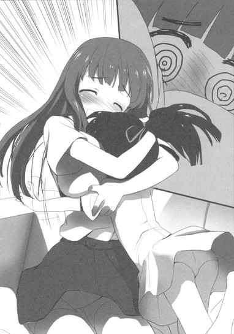
「でも、先輩はこうも言ってたんです。フーコさんが、たった一人現実世界でも友情を結んだ相手だ、って。ちょっと矛盾してるように思えて、気にしてたんですけど......それはつまり、あの......アリサマが......」
ハルユキの言葉に、黒雪姫は大きく苦笑しつつ頷いた。
「ああ、まあ......そういうことだな。私は謡とはもちろん戦友のつもりだが、それ以上に謡はフーコの......何というか......」
少し言葉を切ってから、ハルユキたちに向き直り、説明口調になって続ける。
「キミたちは、フーコがかつて〈ＩＣＢＭ〉と呼ばれていた理由はもう知っていたかな？」
「あ、ええ、ニコに聞きました。領土戦で、支援役をひとり背負って、敵陣の最後方に特攻する戦法を使ってたからだ、って」
ハルユキが答えると、うむとひとつ頷く。
「その通りだ。敵軍の戦列が伸びている時などは実に効果的だったが、レイカーにくっついていく支援役は、そりゃもう大変なメに遭ったのだ。空中から、支援に適したポイントに落っことされたり、敵の大群に追い回されたり、時として弾頭代わりに敵拠点ど真ん中に叩き込まれたり、な。......もう薄々察しているかもしれないが、その支援役を務めていたのが謡だ。彼女は、〈レイカー専用オプション〉だったんだよ」
「......お、おぷしょん......」
頬を引きつらせ、ハルユキは繰り返した。再びソファのほうを見ると、助けを求めるように空中に伸びていた謡の腕が、ぱたりと倒れたところだった。
──約三分後。
ダイニングテーブルの上座に黒雪姫。向かって右にチユリ、タクム。左に楓子と謡。そして正面にハルユキという配置で、一同は改めて腰を降ろした。卓上には、ハルユキが淹れた紅茶のカップと、チユリが自宅から運んできてくれた、チユリママお手製のサンドイッチの大皿が置かれている。
レタスとパストラミをたっぷり挟んだハムサンド、チェダーチーズにルッコラやアスパラを合わせた野菜チーズサンド、黒いライ麦パンにスモークサーモンとアボカドを挟んだサンドイッチなどがうずたかく積み上がるさまは、まさしく壮観だ。楓子の熱烈な挨拶にしばらくぐったりしていた謡も、眼を丸くして料理に見入っている。
「いつもいつもすまないな、チユリ君。母上に、くれぐれもお礼を伝えておいてくれ」
「いーんです、ママもハルに友達が増えて喜んでますから！」
黒雪姫が頭を下げ、チユリがにこやかに応じ、ハルユキが複雑な顔をするという一連の儀式が終了したところで、まずは頂きますの唱和。三角に切られたサンドイッチの山に、六本の手がいっせいに伸びる。
全種類を一切れずつ食べ終えた謡が、いつにないスピードで指を躍らせた。
【ＵＩ＞ とても美味しいのです。先ほどのサッちんの話からすると、レギオン会議の前には、いつも倉嶋さんのお母様が料理を作って下さっているのですか？】
「名前でいいよ！」
と前置きしてから、チユリは照れくさそうに頷いた。謡が運動性失語症によって音声で喋れないことは、最初の自己紹介の時に告げられているので、途惑うことなく喋り続ける。
「あたしがネガ・ネビュラスに入れてもらったのは二ヶ月前だから、まだ会議にはそんな何回も参加してないんだけどね。でも、昔からハルんちにあたしとタッくんが集まる時は、ママが二人分の料理作ってくれてたんだ。さっき、六人分お願いって言ったら、昔の二倍だって驚いてた」
【ＵＩ＞ そういえば、チユリさんと黛さん、有田さんは、幼馴染みなんでしたね】
そこで一度指を止め、謡は透明感のある大きな瞳で、向かい側に座る三人を順に見つめてから文字列を連ねた。
【ＵＩ＞ 幼馴染みの三人が、全員バーストリンカーになり、しかも同じレギオンで共に戦っているというのは奇跡なのです。現実の絆は、とても大きな力を持っています。私とサッちん、フーねえも、かつて現実世界で絆を結びましたが、そうなるまでには長い長い時間が必要でした。そして、恐らくそれは遅すぎたのです】
発言を読んだ途端、黒雪姫と楓子が、「謡......」「ういうい」と声を上げる。謡はちらりと二人に視線を向け、穏やかな──しかしどこか哀切な笑みを浮かべる。
【ＵＩ＞ 私たちは、サッちんを追い詰めていた怖れと、フーねえが秘め続けていた望みの深さ、大きさを、互いに思いやることができませんでした。ゆえにサッちんは六王たちに追われる身となり、フーねえはアバターの両脚を失い......最終的に、レギオンそのものも崩壊へと至ってしまった。私たち三人だけでなく、もっと多くのメンバーと、もっと早く現実世界での絆を築いていれば、違う道もあったかもしれないと、私はいまでも悔いているのです】
ぴたりと停止した謡の手を──隣に座る楓子が、そっと握った。その仕草は、先刻とは打って変わって優しく、いたわりに満ちているように思えた。
「でも、わたしたちはこうしてまた出会いましたよ、ういうい」
呟き、にこりと微笑む。謡がはっとしたように眼を見開く。
「二年半もの時間が流れてしまいましたが......取り返しのつかないことなど何もないと、わたしも、サッちゃんも、そこの小さな鴉さんに教わりました。サッちゃんは再び加速世界に王として立ち、わたしはもう一度両脚を取り戻した。ですからね......」
「──我々は、確信しているのだ」
と、黒雪姫が言葉を引き継いだ。紙ナプキンで口もとをぬぐい、ぴんと背筋を伸ばした黒の王は、毅然とした口調で言った。
「謡、〈無制限中立フィールド〉に封印されたままのお前の本体も、必ず取り戻せる......たとえ相手が無敵の〈神〉だろうと、な」
９
山ほどのサンドイッチが綺麗に消滅し、大皿を片付けて紅茶のお代わりを淹れたところで、ハルユキは我慢できずに質問の声を上げた。
「あの......、さっき先輩が言ってたのは、どういうことなんですか？四埜宮さんの本体が、無制限フィールドに封印されてる......って？僕は昨日、四埜宮さんと通常フィールドでタッグ対戦したんですが......それとは別に、無制限フィールドで何か問題を抱えてるってことですか？」
右側では、チユリも同じように首を捻っている。しかしタクムには何か思い当たることがあるようで、躊躇いながら口を開いた。
「マスター、もしかしてそれは......〈無限ＥＫ〉のことですか......？」
「お、さすがはハカセ、詳しいな」
黒雪姫は頷いたが、ハルユキには何のことやらさっぱり解らない。
「む、むげんいーけー？ タク、それ何......？」
体ごと向き直って訊ねると、タクムは指先で眼鏡のブリッジを押し上げながら、逆に質問を返してきた。
「ハル。君は、一人のバーストリンカーを消滅させる......つまりポイント全損、ブレイン・バースト強制アンインストールに追い込む手段が加速世界に幾つ存在するか、知っているかい？」
「え......？ そんなの、何度も対戦して勝ち続けるしか......」
と反射的に答えてから、二ヶ月前に自分自身が陥った消滅の瀬戸際のことを思い出し、付け加える。
「......いや、それと、無制限フィールドでの〈決闘〉もあるな。〈サドンデス・デュエル・カード〉に互いの全ポイントをチャージして、勝ったほうが総取りする......。あ、サドンデスと言えば、レベル９ｅｒ同士の特例ルールもあるか......」
「うん、それで三つだね。他には？」
すると今度はチユリが、口に含んだ紅茶が塩水にでもなってしまったかのような顔で言った。
「あとは、あれだね。〈物理攻撃〉......だっけ？リアルで襲ってクルマの中とかに監禁して、直結対戦でポイント根こそぎ奪うってヤツ。許せないよね」
タクムも厳しい顔で頷き、付け加えた。
「四月に僕らを追い込んだ彼も、広義のＰＫと言っていいかもしれないな。......ともかく、それが四つ目。そして五つ目が......ぼくがさっき言った〈無限ＥＫ〉、正式には〈無限エネミー・キル〉だよ」
「エネミー・キル......。エネミーを殺すこと、じゃないよな。エネミーで殺す......？」
「そう......その通りだ」
ここで黒雪姫が声を発したので、三人は口をつぐんでそちらを見やった。紅茶のカップに唇をつけてから、黒衣のレギオンマスターは静かに話しはじめた。
「ハルユキ君には昨日も説明したが、無制限フィールドには、〈巨獣級〉や〈神獣級〉といった凄まじい攻撃力を備えたエネミーが棲息している。とは言え、その中でも上位の本当にとんでもない奴らは、フィールドを自由に徘徊しているのではなく決まった縄張りに留まっているので、近づかなければ危険はない。だがそれは、逆に言うと、もし何かのはずみでテリトリーに突っ込んでしまい殺されると、脱出が非常に難しくなるということでもあるのだ」
「ふん、ええと......？」
ハルユキは視線を彷徨わせ、かつて何度か訪れた無制限中立フィールドのルールを思い出そうとした。
あの世界でＨＰゲージがゼロになる──つまり死んでも、バーストリンカーは現実世界に帰還するわけではない。視界が灰色になる〈幽霊状態〉で死亡地点に留まり、一時間後に蘇生するのだ。
そして無制限フィールドでは〈バースト・アウト〉コマンドも使えない。自発的に現実世界に戻る、通常のフルダイブＶＲゲームで言えば〈落ちる〉には、駅や観光名所といったランドマークに用意されている〈脱出ポイント〉のポータルを通り抜ける以外の方法はない。
その二つのルールを踏まえた上で、先ほど黒雪姫が言った状況を考えてみる。
位置固定型巨大エネミーの縄張りにうっかり突っ込んで、タゲられ、とてつもない威力の攻撃を喰らって即死したとする。すると視界に【ＹＯＵＡＲＥＤＥＡＤ】と表示され、実体のない地縛霊状態で蘇生ゲージが溜まるのを待つことになる。一時間後、ようやく生き返って動けるようになるが──そこはまだ、巨大エネミーのターゲット範囲内なのだ。もちろんすぐさま再攻撃され、また死ぬ。一時間後、生き返り......また死ぬ......。
「............き、キリがないじゃないですか！」
とハルユキが叫ぶと、黒雪姫が陰鬱な表情で頷いた。
「そう。だから〈無限〉なのだ。〈無限エネミー・キル〉とは、その状況を意図的に作り出す......つまり、ポイントを全損させたいバーストリンカーを巨大エネミーの縄張りの奥深くに置き去りにして、一時間ごとに何度も何度も殺させるという方法だ。もちろん、脱出の可能性がゼロというわけではない。生き返り、即死するまでの間にわずかでも移動できれば、次はその地点で蘇生するわけだからな。少しずつ距離を稼ぎ、いつかはエネミーの縄張りから出られるかもしれないが、一度の死亡で減少するポイントの量は、対エネミーの場合は10固定だからな......。十回死ねば、１００。百回なら１０００ものポイントを失うことになる。そうそう耐えられるものではないよ」
我が身がその状況に陥ったらと想像し、ぞっと背筋を震わせていたハルユキは、掠れ声で相槌を打った、
「です、よね......とくにレベルアップ直後や、高いアイテムを買った後なんかは、大量のポイントを消費してるわけですし......」
しかしすぐに、あることに気付いて眉を寄せる。
「で、でも、その〈無限ＥＫ〉......仕掛けるほうもけっこうリスキーじゃないですか？縄張りの奥に置き去りにする前に、自分が死んじゃうことだって......」
「そう、ですから、通常は縄張りの外部から放り投げたり、爆発系攻撃で吹き飛ばしたりといった手段が用いられるのです」
答えたのは楓子だった。唇の端に穏やかな笑みを浮かべたまま、恐ろしい言葉を付け加える。
「ま、わたしは一度、運良く名前を特定できた〈ＰＫ〉野郎を、ゲイルスラスターを使って神獣級の頭の真上に落っことしてやりましたけどね。......ともかく、普通の〈無限ＥＫ〉ならばそうそう縄張りの奥深くにまでは運べないので、物凄く頑張れば脱出できないこともないのです。利用されるエネミーが強くなればなるほど仕掛ける側のリスクも高まるので、脱出に要する距離は短くなるものですしね」
なるほど、とハルユキたち若手三人が同時に頷く。
その時、今まで沈黙を守っていた謡が、ひそやかに指を動かした。
【ＵＩ＞ でも、どんなセオリーにも例外はあるのです】
神秘的な雰囲気を持つ小学四年生は、透明な眼差しをどこか遠くに向けたまま、ゆっくりとタイピングを続けた。
【ＵＩ＞ 加速世界で最大最強のエネミーの縄張りの、一番奥深くにまで突入して死に、もう戻ってこられなくなってしまった三人のうちの一人......。通常対戦フィールドには入れても、加速世界の本質たる無制限中立フィールドには二度とダイブできないバーストリンカー。それが、私なのです】
昨日生徒会室で聞いた、第一期ネガ・ネビュラスの崩壊・消滅にまつわる話のあらましを、ハルユキはすでにタクムとチユリにも伝えていた。
無制限中立フィールドの中央に存在する、絶対不可侵の〈帝城〉。その四つの門を守護する最強のエネミー、〈四神〉。第一期のメンバーたちは、ブレイン・バーストの二つ目のクリア条件と予想される〈帝城到達〉を目指し、四神の突破に挑んだ。そして──全滅した。
ハルユキが聞かされたのはそこまでだ。肝心な、なぜたった一度の全滅がレギオンの崩壊にまで繋がったのかという理由まではまだ知らない。
しかしハルユキは、いまの〈無限ＥＫ〉の話から、おぼろげな推測へと辿り着きつつあった。大きく息を吸い、黒雪姫、楓子、謡を順に見て、ハルユキは口を開いた。
「それは、つまり......四埜宮さんは、二年半前に〈四神〉の縄張りの奥深くで死んでしまい、そこから生還できなくなってしまった......ということなんですね？」
こくりと首を動かし、謡は空中を叩いた。
【ＵＩ＞ そうです。炎熱耐性の高い私が一隊を率いて挑んだのは、帝城の南門を守護する炎の大鳥〈スザク〉。長射程の火炎ブレスと、かぎ爪による物理攻撃、全方位への範囲熱攻撃を行うという難敵でした。しかしそのデータはあったので、対応する作戦を立て、門が見える位置まで侵入に成功したのですが......そこで、スザクの攻撃パターンが変わったのです。全身を火炎に包んでの超高速チャージに対応できず、戦列は崩壊しました。私の耐性など気休めにもならなかった。せめて仲間の退路を作るため、私はスザクを縄張りの最奥部まで引っ張り、そこで死にました】
「東門の〈セイリュウ〉、北門の〈ゲンブ〉も、途中から攻撃パターンが、より凶悪なものへと変化したそうだ」
呟くように言った黒雪姫は、唇を軽く噛んでから続けた。
「......私がレイカーと共に当たった西門の〈ビャッコ〉もそうだった。本来なら、私たちもビャッコの縄張り奥深くから戻れなくなるはずだったのだ。だが、レイカーが最後の力で、私を抱えて飛んでくれてな......」
「当時、わたしはもう足を無くして、戦闘では役立たずでしたからね」
同じく痛みに耐えるような表情で、楓子も口を動かした。
「せめてサッちゃんだけは生還させないとって、心意を振り絞って必死で飛びました。今でもたまに、背中のすぐ後ろでがちん、がちんてビャッコの牙が鳴る夢を見ますよ。......〈四元素〉の中で一人だけ生き残ってしまったわたしには、それでも軽すぎる罰ですが......」
【ＵＩ＞ あの時フーねえが頑張ってくれたことには、私も、きっとグラフさんやアクアさんも感謝しているのです】
「そうだぞ、レイカー。私やお前が四神の門に封印されていたら、きっと〈子〉を持とうと考えることもなかっただろう。必然、〈シルバー・クロウ〉も、クロウの良きライバルである〈アッシュ・ローラー〉も誕生しなかった。第二期ネガ・ネビュラスの結成も有り得ず......我々の、この再会もなかったはずだ。お前の決死の飛翔が、未来を繋いでくれたんだ」
黒雪姫の、穏やかだが決然とした言葉に、楓子は伏せていた睫毛を持ち上げ、そっと頷いた。
その光景を、胸に込み上げるものを感じながらハルユキは無言で見つめていたが、同時に湧き上がってきたひとつの疑問を抑えられず、機を見ておずおずと口を開いた。
「あの......、先輩。四埜宮さんのデュエルアバターが、無制限フィールドの〈帝城〉の南門に事実上封印されてしまったという状況は解りました。でも......僕は昨日、四埜宮さんと......〈アーダー・メイデン〉とタッグを組んで対戦したんです。つまり、四埜宮さんは今もバーストリンカーで......二年半前にポイント全損はしなかったってことですよね？〈無限ＥＫ〉状態から、どうやってポイントを守ったんですか......？」
「いい質問だ」
黒雪姫はそう言うと、再びタクムに視線を向けた。
「それでは、我がレギオンの誇る頭脳に、もう一度講義をお願いしようかな。タクム君なら、すでにその方法も推測しているだろうっ」
初対面の謡の前で着々とハカセキャラが固定しつつあるタクムはやや複雑そうな表情を見せたが、それでも「はい、マスター」と素直に答えてハルユキに向き直った。
「それじゃあ、ハル。今度は、〈無制限中立フィールドから離脱する方法〉だ。幾つあるか解るかい？」
くい、と眼鏡を押し上げる幼馴染みの顔を、ハルユキは唇を尖らせながら上目遣いに睨んだ。
「おい、いくらオレでもそれくらい知ってるぞ！ていうか、常識じゃないか。答えは〈一つ〉だろ。無制限フィールドから出るには、離脱ポイントの〈ポータル〉を通るしかない。その大原則があるから、〈無限ＥＫ〉も成立するんじゃないか」
「ぶっぶ────！ はーずれー!!」
と叫んだのは、こともあろうにチユリだった。
タクムの向こうで、いたずらな猫を思わせる笑みをにんまりと浮かべたもう一人の幼馴染みは、ハルユキに向かって右手の指を三本突き出してみせた。
「答えは三つでーす」
「げっ......う、ウソ。み、三つも!? なんかのアイテム？それとも必殺技......？」
慌てるハルユキに、チユリはもう一度「ぶー」と不正解ブザー音の口まねをしてから、指を折り折り答えを列挙した。
「二つ目の方法は、〈ニューロリンカーのグローバル接続を切ること〉。三つ目の方法は、〈ニューロリンカーを首から引っこ抜くこと〉でーす」
「な............」
余りにも予想外の言葉に、しばし絶句。ようやく思考を再起動し、必死に喚く。
「そ......そんなのズルイぞ！ いや、ズルかないけど......それ、現実世界の話じゃないか！」
「あれ、別にタッくんは、〈加速世界でできる方法〉なんて言ってないよー？」
「そ......そりゃそうだけど、でも加速中にニューロリンカーを引っこ抜くなんて、自分じゃできないじゃないか！」
「あれ、別に〈自分ひとりでできる方法〉とも言ってないよぉー？」
チユリと、幼い頃から数限りなく繰り返してきたたぐいの言い合いをしていると──。
不意に左側から、穏やかな笑い声が上がった。視線を向けると、愉快そうに笑う黒雪姫と楓子のみならず、謡までもが無音の笑みを零していた。
十秒以上も笑い続けてから、黒雪姫がまず口を開いた。
「ははは......、まったくいいトリオだな、君たちは。チユリ君が正解だ。〈無制限中立フィールドの内部から自発的に離脱する方法〉なら確かに一つだけだが、〈現実世界から受動的に離脱させてもらう方法〉もまた存在するのさ」
こほん、と咳払いし、表情を改める。
「──二年半前、第一期ネガ・ネビュラスの総員は、無謀と知りつつ〈帝城攻略〉に挑んだ。しかし、それは決して集団自殺ではなかった。ゆえに我々は、ひとつのセーフティを設定していたのだ。ニューロリンカーをグローバル接続する際、通常の無線ではなく、踏み台となるホームサーバーなり据え置きＰＣなりを有線で経由するようにしたんだよ」
「踏み台......」
呟いたハルユキに、謡がチャットで補足する。
【ＵＩ＞ そして、その踏み台マシンに特定のタイトルのメールが着信した際、自動的にグローバルネットを切断するよう設定したのです。仮に部隊が壊滅した際、最初に離脱ポイントから現実世界へ復帰できた者が、レギオン全員にそのメールを発信する。その瞬間、皆はＤＩＳＣＯＮＮＥＣＴＩＯＮで自動バースト・アウトする。つまり、たとえ〈無限ＥＫ状態〉に陥った者が出ようとも、少なくともポイント全損は免れるのです】
「はー......な、なるほど......」
ハルユキは思わず嘆声を漏らした。よもや、そんな手段で無制限フィールドから脱出できようとは、これまで思ったこともなかったのだ。
しかし思い出してみれば、二ヶ月前に練馬区は桜台のケーキショップをタクムと共に訪れ、赤の王ニコに心意システムを訓練して貰った時も、たしか無線ではなく有線でグローバル接続したはずだ。あの部屋のルータ装置にも、同じセーフティが仕込まれているに違いない。
まだまだ知らないことがいっぱいあるなあ......とハルユキが放心していると、隣でタクムが軽く手を挙げた。
「すみません、マスター。ぼくも、無制限フィールドからのディスコネクト離脱については、詳しいことを知らなくて......。その場合、デュエルアバターはどうなるんですか？」
「ン......。それがな、やや複雑な状況が生まれてしまうんだよ。無制限フィールドから、ネット切断やニューロリンカー除装といったイレギュラーな手段で離脱した場合、デュエルアバターは一応フィールドから消滅する。その後は、通常対戦ならば問題なく行えるのだが......再び無制限フィールドにダイブすると、現実世界の所在位置ではなく、かつて消滅した座標に出現してしまうのだ」
「え......え、と......？」
咄嗟に呑み込めず、ハルユキが声を上げると、楓子がぴっと指を一本立てた。
「鴉さん。あなたは、わたしが長いこと暮らしていた、無制限フィールドの旧東京タワーの天辺にある家を覚えていますよね？」
「は、はい、もちろん。忘れるわけないですよ......僕、あそこからレイカーさんに落っことされ」
「わたしは忘れちゃいました。それはともかく、わたしの現実の家はここ杉並の南の端にあるので、港区の旧東京タワーまではちょっと遠いんですよね。でも、あの塔の家に行く時は、いちいち杉並から移動していたわけではないのです。タイマーでグローバル接続を自動切断することでアバターの位置情報を塔の上に固定し、次回ダイブ時にも同じ場所に出現するようにしていたんですよ」
「あ......ああ、そうだったんですね！」
深く頷き、思考を進める。
四埜宮謡──アーダー・メイデンは、二年半前、超級エネミーたる〈四神スザク〉のテリトリー奥深くで果てた。本来なら、一時間経って蘇生した直後に再び即死することを無限に繰り返し、やがてバーストポイントを全損していたはずだ。
しかし、〈メール着信による自動切断〉というセーフティのおかげで、ポイントがなくなる前にディスコネクションし、現実世界に復帰した。だから昨日、ハルユキとタッグを組んでの通常対戦も可能だったわけだ。
だが、その復帰は限定的なものだ。バーストリンカー究極の戦場たる無制限中立フィールドにダイブするための〈アンリミテッド・バースト〉コマンドを唱えた瞬間、謡は物理身体が横たわる位置ではなく、帝城南門を守護する〈四神スザク〉の目の前に出現してしまう。当然、瞬時の猛攻を浴びて即死。再び恐怖の無限ＥＫ状態へと陥ってしまう......。
「......だから、〈封印〉、なんですね......。そこから解放されるためには、誰かがスザクの足元まで行って、ダイブ直後のアバターを救出するしかない......」
ようやくそこまでを理解したハルユキは、掠れた声で呟いた。
こくりと頷き、謡は十指を滑らかに走らせた。
【ＵＩ＞ 私だけでなく、東門〈セイリュウ〉の目の前では四元素の一人である〈アクア・カレント〉さんが、北門〈ゲンブ〉の足元には同じく〈グラファイト・エッジ〉さんが封印されています。他のメンバーをテリトリーから脱出させるため、この三人で......いえ、西門〈ビャッコ〉を受け持っていたサッちんとフーねえも、四神のターゲットを限界まで引き続けたのです。幸い、他のみんなは無限ＥＫ状態になることなくテリトリー外に脱出できたのですが、その過程で何度も何度も死に、ポイントを大量に失いました。とても、レギオンの領土を維持していくのは不可能だったのです。私たちは領土を全放棄し、レギオンそのものも解散せざるを得ませんでした。かつてのネガ・ネビュラスは、そのようにして消滅したのです。誰のせいでもない、誰が悪いのでもない......」
そこで、謡の指が強く軋んだ──ように、ハルユキには見えた。
ハッと視線を上げると、いままでほとんど表情を見せることのなかった九歳の少女は、くしゃりと顔を歪めて強く唇を噛んでいた。再び指が動き、空気を引き裂くような激しいタイピングを行った。
【ＵＩ＞ いえ、強いて言うなれば、あの人......サッちんを欺き、追い詰め、そして裏切ったあの人の】
「謡」「ういうい！」
という二つの声が、文字列をそこで停止させた。ホロキーボードの上で両手をぎゅっと握り、深く俯く謡の肩を、隣の楓子がそっと抱く。
その様子を、黒雪姫は少し離れた椅子から何かに耐えるような表情で見つめていたが、やがて静かに言った。
「謡、悪いのは私だ。レギオン壊滅に関する責任の全てはこの私にある。衝動のままに最初のきっかけを作ってしまったことも......全てが終わったのち、心を折られて、二年間もローカルネットに閉じこもってしまったことも、な。だが私は彼に......ハルユキ君に出会い、再び立ち上がる力を貰った。もういたずらに過去を怖れ、眼をそむけ続けたりはしない。あの者とは、いずれ決着をつける。そのためにも、謡、私はお前の〈封印〉を解きたい。帰ってきて欲しいんだ、新しいネガ・ネビュラスに」
交わされる言葉の全てを理解できたわけではなかった。謡の言う〈あの人〉とは誰なのか。かつて黒雪姫に何があったのか。しかし、今はそれを訊ねるべき時ではないと思えた。だからハルユキも身を乗り出し、謡に向かって精一杯真剣に語りかけた。
「四埜宮さん、僕からもお願いします。もう知ってると思いますけど、僕のアバターには今、〈クロム・ディザスター〉っていう強化外装が寄生してて、これを一週間以内に〈浄化〉しないと、僕は王たちに賞金を掛けられて、まともに対戦もできなくなっちゃうんです。僕は......もっともっと強くならなきゃいけない。黒雪姫先輩や、レギオンのみんなと一緒に戦い続けるために、少しでも立ち止まってはいられないんです。お願いします......僕を、助けてください」
しばらく前までのハルユキなら、歪んだプライドが邪魔をしてとても口に出せなかったであろう言葉だった。しかし多くの苦しい戦いのあいだに、ハルユキは〈仲間と共に戦う〉ことの意味をわずかながら学んでいた。時には意地を張り、我を通すべき場面もあるだろう。でも、一人で何でもできると強がるのは、愚かな思い上がりというものだ。誰だって、知らず知らず、いつも誰かに助けられているのだ。
ハルユキの懸命な言葉を受け止めかねたかのように、謡は視線を俯けた。
しばしの沈黙。指が小さく持ち上がり、躊躇いながらも、そっと宙を叩く。
【ＵＩ＞ 私が二年以上もサッちんや、フーねえや、他のレギオンメンバーとの連絡をかたくなに拒んだのは、まさにその提案を......封印を解く、という言葉を怖れたからなのです。リミッターを全て解放した〈四神〉は、想像を絶する攻撃力を秘めています。私のアバターを回収しようとすれば、その人も同じく〈無限ＥＫ〉状態に陥ってしまう危険が大きすぎるのです。四方門に封印されたのがたった三人だけで済んだのは、むしろ幸運でした。これ以上、仲間の犠牲を増やしてはいけない。私は......きっとグラフさんや、アクアさんも、そう思って接触を断ち続けたのです。ほんとうは、私も】
そこで指がぴたりと止まり──。
謡は、動かないはずの唇を、かすかに震わせた。静寂の中に流れた言葉を、ハルユキは耳ではなく意識で感じた。
──会いたかったのです。
白い頬に、すうっと二つぶの雫が流れた。隣の楓子が、自分も目尻を濡らしながら、小さな体をぎゅっと抱きしめた。
今度は一切抗うことなく、謡は楓子の胸に顔を埋め、激しく肩をわななかせる。かすかな、しかし確かな嗚咽が響き、当時の事情を直接は知らないハルユキや、タクム、チユリも、何度となく瞬きを繰り返した。
ほんの三十秒ほどで抱擁を解き、楓子がポケットから出したハンカチで頬を拭いてもらった謡は、恥じ入るように俯いたままタイピングを再開した。
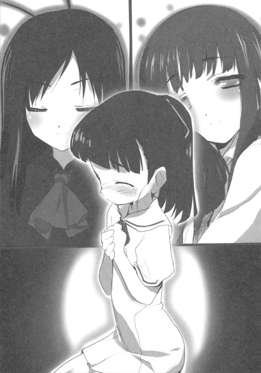
【ＵＩ＞ すみません。話を続けます。......私は、自分から新しいネガ・ネビュラスに接触する気はありませんでした。サッちんたちの戦いを、加速世界の隅っこで見守っていられれば、それで満足だったのです。ですが、私の学校の飼育委員会が廃止されることになり、家のなくなる飼育動物の引き受け先がどうしても見つからず......私は迷ったすえに、サッちんが進学した梅郷中学校に依頼のメールを出しました。まさかサッちんが私の名前に気付くはずはない、と思ういっぽうで、心のどこかでは気付いてほしいとも思っていたのです】
「気付くさ。ういういの名前は目立つからな」
黒雪姫が微笑みながら言うと、まだ眼が赤いものの、謡はきゅっと唇を尖らせてみせた。
【ＵＩ＞ 私が選んだ名前ではないのです。......メールの返事が、学校管理部ではなく、生徒会副会長名で来た時は、ほんとうに迷いました。ですが、動物のためだと自分に言い聞かせて、私はサッちんにダイブコールで連絡を取りました。そしたら、最初の言葉が】
「交換条件だ。管理部を説得して飼育小屋は用意する。だからお前は戻ってこい」
黒雪姫が自ら再現したその言葉に、一同ぽかんと口を開ける。驚きはすぐに、やれやれという苦笑へと変わる。謡も微笑みとともに文字列を繋げた。
【ＵＩ＞ サッちんの、せっかちでガサツで意地っ張りなところ、全然変わってないのです。何を言おうか色々考えていた私がバカみたいです。いきなり真正面から切り込まれたので、つい『話を聞くだけなら』と答えてしまいました。その後もなし崩しにペースに巻き込まれて、気付いたら今ここにいるのです。昔、リアルで会うのを承知させられた時とまったく同じなのです】
その発言を読みながら、ハルユキは自分が黒雪姫に誘われた時のことを懐かしく思い出していた。
──いきなりバーチャル・スカッシュ・コーナーに現れて、最初の言葉が『もっと先に加速したくはないか、少年』だもんなあ。意味が知りたくてついラウンジに行っちゃったら、たちまち直結、すかさずブレイン・バースト転送で、考える暇もなかったよな。
──でも、ああいうふうに誘ってくれなきゃ、僕はきっと尻込みしてた。この人は確かにせっかちだし意地っ張りだけど、それ以上に何事にも真剣なんだ。きっと今回の〈災禍の鎧浄化計画〉だって、僕の知らないところで一生懸命頑張ってくれてたんだ......。
と、そこまで考えたところで、ハルユキはふと一つの疑問を感じ、対面に座る黒雪姫に向かって小さく手を挙げていた。
「......あ、あの、先輩」
「ン？ 何だい？」
「ええと......先週のレースが終わったあと、この場所で〈災禍の鎧〉の寄生をどうするか話し合った時、〈浄化能力者〉に心当たりがあるから任せろって言ってましたよね。それって、四埜宮さんのことですよね？」
「ああ、その通りだよ」
こくりと頷くので、更に問いを重ねる。
「でも、連絡する方法はあったんですか？ さっき四埜宮さんは、二年以上も連絡を頑なに拒んだ、って......」
【ＵＩ＞ 確かに有田さんのおっしゃる通りなのです。私は、以前使っていたアドレスを破棄していました。サッちんから連絡する方法はなかったはずなのです。もし私が飼育小屋の件で梅郷中学校にメールしていなければ、どうするつもりだったのですか】
謡も不思議そうに首を傾げながらそうタイプすると、黒雪姫はにこりと優しげな笑みを浮かべて答えた。
「決まっているじゃないか。メールアドレスが破棄されていても、私は謡の通う学校と学年だけは知っているのだ。松乃木初等部の校舎に直接乗り込んで、四年生の教室を端から確認すれば済む話さ。だろう？」
それを聞いた途端、すーっと額のあたりを青ざめさせた謡は、ぎこちない指使いで応じた。
【ＵＩ＞ 飼育小屋の件を梅郷中にお願いするか迷った時、そうしなさいという声が聞こえたのです。あれは絶対天の声なのです】
これにはハルユキたち三人と、楓子までもが声を上げて笑った。いまだ恐ろしそうに首をすくめている謡の背中を、楓子がぽんと叩く。
「ね？ ういうい、あなたが戻るべき場所に戻る時が来たんですよ。わたしもそうでした。旧東京タワー屋上の小さな庭に、ある日傷ついた一羽の鴉さんが迷い込んできた時、わたしも確かに感じたんです。停滞した世界に、もう一度風が吹くのを......」
「その通りだ、謡。私はたしかにせっかちだが、もう昔のように生き急いではいない。お前のアバターを四神の封印から解き放つ作戦も、今なら可能だと信じるからこそ、こうして言っているのだ。戻ってこい、と」
黒雪姫が、漆黒の瞳でまっすぐ謡を凝視する。対する謡も、虹彩に炎の色が走る瞳でその視線を受け止める。
【ＵＩ＞ 私も、自分のためだけでなく、有田さんのアバターを〈浄化〉するためにも封印状態から解き放たれたいという思いはあるのです。寄生するのがあの〈ザ・ディザスター〉ならば、浄化するのにとても三十分では足らないので、通常対戦フィールドではなく無制限中立フィールドで行う必要がありますから。私は昨日、有田さんとタッグ対戦して、秘めた力を存分に見せて頂きました。確かに、王たちの企みで歩みを滞らせてはいけないのです】
その文章を読んで、ハルユキは思わず声を出してしまった。
「えっ......で、でも、僕は昨日いいとこぜんぜんなくて......一方的にやられちゃっただけだし......」
すると謡は、ポニーテールを揺らしてハルユキに向き直り、幼さの中に不思議な慈愛を感じさせる表情で微笑んだ。
【ＵＩ＞ 有田さん。あの〈柔法〉は、サッちんに教わったのですか？】
「なに？」
と眉を寄せたのは黒雪姫だ。そちらをちらりと見て、肩を縮めつつ必死に答える。
「あ、いえ、その、教わったって言うか、一度見せてもらったんで、それでちょっと......僕も練習してみようかなって......」
【ＵＩ＞ だと思いました。サッちんの技とは、呼吸は同じでも型が違いましたから。有田さんの対戦には、遥か遠いところを目指し続けようという意思が感じられます。昨日負けて、今日も負けても、挫けずに明日もう一度挑戦しようという気持ちがこもっているのです。レベル５にもなって、一歩一歩進むことの大切さをまだ忘れていないバーストリンカーは、そうそういるものではないのです】
「え......いや、そのぉ......自分では、そんなこと......」
誰かに褒められる、という状況にまったく不慣れなハルユキは、いたたまれずに真下を向いてしまった。すると、チユリの笑みを含んだ声が聞こえた。
「じわじわ進むのはハルの得意技だもんね！ 昔っから、何でも最初はあたしやタッくんより下手なのに、気付くと妙にウマくなってるのよね。まあ、ゲーム関係限定だけどさ！」
幼馴染みが助け船を出してくれたことに内心で感謝しつつ、即座に言い返す。
「げ、ゲームだけじゃないぞ！ 確か、〈トウモロコシをどれだけ綺麗に食べられるか勝負〉でも、最終的にオレが一番......」
「ハル、実利的じゃない度合いでは大差ないよ」
タクムの冷静なツッコミに、朗らかな笑いが生まれる。それが収まると、謡はぴんと背筋を伸ばし、一同を順に見やってから──深く頭を下げた。
【ＵＩ＞ 迷いや怖れ、躊躇いは今もいっぱい感じているのです。でも、ここで一歩踏み出さなければ、私は加速世界でも現実世界でも、永遠に今いる場所から進むことはできないでしょう。幽世と顕世は表裏一体、デュエルアバターが凍り付いている時は、現実の自分もどこにも行けないのです】
「その通りですね......」
謡の発言に、隣に座る楓子がそっと頷いた。
「旧東京タワーに隠れ住んでいる間は、現実世界のわたしも、知らず知らずのうちに息を殺し背中を丸めて生きていた気がします。あの二年間よりも、鴉さんが現れてからの二ヶ月間のほうが長く感じるくらいです」
その言葉を受けて、今度は黒雪姫が深々と首肯する。黒い瞳には、きらきらと無数の星屑が渦巻いているように見える。
「そう感じて当然さ、フーコ。なぜなら、たとえブレイン・バーストを起動していなくとも、仲間と共に一つの目標に向かっている時、我々は常に〈加速〉している。胸がどきどきするような興奮が、意識を強く、激しく駆動するんだ」
そして最後にもう一度、謡が十指を軽やかに舞わせた。
【ＵＩ＞ 私も、昔みたいにどきどきしたい。みんなと一緒に、途切れてしまった夢の続きを追いかけたいのです。サッちん、フーねえ、チユリさん、黛さん、そして有田さん......】
一瞬の躊躇いを、細くしなやかな指先が決然と撃ち抜いた。
【ＵＩ＞ お願いします。私を......私の移し身〈アーダー・メイデン〉を、スザクの封印から解き放ってください】
10
黒雪姫の立案した〈災禍の鎧浄化計画〉は、三つのフェーズから成っていたらしい。
第一段階は、四埜宮謡に現実世界で連絡をつけ、どうにか対話の場に引っ張り出すこと。
第二段階が、謡を説得し、そのアバターを、無制限中立フィールドでの〈無限ＥＫ状態〉から救出すること。
そして第三段階が、謡の浄化能力により、シルバー・クロウに寄生するクロム・ディザスターの因子を消滅させること──。
六月十八日火曜日午後七時二十分、ハルユキの自宅リビングルームに於いて、第二フェーズ開始をいつにするかと楓子に問われた黒雪姫は、迷いの欠片も見せずに即答した。もちろん、今この瞬間からだ、と。
場所をソファセットに移し、リラックスした姿勢で腰掛けた六人は、まずそれぞれのニューロリンカーを五本のＸＳＢケーブルで数珠つなぎした。無制限フィールドへのダイブは、本来直結まではする必要はないのだが、今回は例の〈回線切断セーフティ〉を用意しておかねばならない。ゆえに全員、ニューロリンカーの無線グローバル接続はキャンセルし、代わりにホスト役のハルユキが有田家のホームサーバーに有線接続した回線を経由することにしたのだ。こうしておけば、もし不慮の事故が発生して誰かが〈無限ＥＫ状態〉となってしまっても、最初にポータルから帰還した者がホームサーバーに繋がるケーブルを引っこ抜けば、その時点で全員が加速停止できる。
もちろんその時は、謡を救出できないばかりか〈ミイラ取りがミイラに〉という最悪の事態が起こってしまうのだが、もうそれを怖れる段階は通り過ぎている。今はただ、万全の備えを整えたうえで、百パーセントの成功を信じて突き進むだけだ──というのが、現実世界での打ち合わせの最後に黒雪姫が発した言葉だった。
【ＵＩ＞ それでは、皆さん。よろしくお願いするのです】
という謡の発言に、黒雪姫、楓子、ハルユキ、タクム、チユリが一斉に力強く頷いた。まずこの五人がダイブし、内部での準備が全て完了してから謡もダイブするという手順だ。
五人は、ソファの上で眼を閉じると、大きく息を吸った。
黒雪姫がテンカウントを開始。ゼロのタイミングに合わせて、レベル４以上のバーストリンカーにのみ許された、真の加速世界へ飛翔するためのコマンドを叫ぶ。
「「「「「アンリミテッド・バースト!!」」」」」
久しぶりに見る〈無制限中立フィールド〉は、地平線の彼方まで真っ白く凍り付いていた。〈氷雪ステージ〉だ。空は灰色の雲に埋め尽くされ、冷たい微風に乗って細かな雪片がきらきらと舞っている。
「よし......まずは幸先がいいぞ」
地面を分厚く覆う氷を剣状の脚の先端で音高く突き、黒雪姫──黒の王ブラック・ロータスが言った。
「理想は〈霧雨〉か〈暴風雨〉だったが、遠距離視界が阻害されるからな......一瞬のタイミングを狙うには、こっちでむしろ良かったかもしれないな」
「そうね。これくらいのみぞれなら、視界の妨げにはならないでしょうし」
隣に立つ楓子──スカイ・レイカーが、空色の髪を揺らして頷く。
二人の会話が咄嗟に理解できず、シルバー・クロウの丸いヘルメット頭を傾げさせたハルユキは、おずおずと訊ねた。
「あの......、なんで〈氷雪〉や〈霧雨〉だとラッキーなんです？」
「火の属性を持つ〈四神スザク〉の力が弱まるから、ですね？」
と、即座に声を発したのは、ハルユキの右側に立つ大柄な近接型アバター、シアン・パイル──タクムだ。更にその右で、黄緑色のとんがり帽子をかぶり左手に大きなベルを装備したライム・ベル──チユリが声を上げる。
「それなら、急がないとだね。いつ〈変遷〉が来るかわからないから」
先輩のタクムはともかく、まだバーストリンカーになって二ヶ月ちょっとのはずのチユリにまで理解度で遅れを取っている感がひしひしと押し寄せてきて、ハルユキは慌てて口を開いた。
「じゃ、じゃあ、僕の羽根で飛んでいきましょう。四人でも、ぎりぎり運べると......」
しかし、最後まで言い終わらないうちに、黒雪姫が軽くマスクを横に振った。
「いや、今回ばかりは、万が一にも他のバーストリンカーに邪魔されたくない。同時にダイブしている者が近くにいる可能性は低いが、空を飛ぶと目立つからな。千代田エリアまで、がんばって走ろう」
「あ......そ、そうですね......」
しゅん、と俯きかけると、数歩近づいてきた黒雪姫が、調子を和らげた声で言い添えた。
「それに、今回の作戦の主役はキミだ。作戦開始まで、わずかでも翼を疲労させるわけにはいかない」
「は......はい！ 解りまし」
────え？ 僕、主役？
返事の途中でぴきーんとフリーズしたハルユキの背中を、楓子が優しく叩いた。
「頑張ってくださいね、鴉さん。大丈夫、あなたならできます」
「そうだよハル、君ならたとえ相手がどんなヤツだろうと、空で負けたりしないさ」
「ばきーんと決めちゃってよね、ハル！」
タクムとチユリも言葉を重ね、ハルユキを除く四人は、一斉に深く頷き合った。そのまま、もとは高層マンションであった氷の塔の外壁開口部へと歩いていく。
......主役、って何するの？ まさか、よもや、もしかして、無敵の超級エネミー様の縄張りに一人で突っ込む......とか？
金属ボディの全身にだらだらと冷や汗を流しつつ、何だか前にもこんなことあったな、と記憶を探る。忘れもしない半年前、同じくハルユキの自宅から無制限フィールドに出撃した〈災禍の鎧討伐ミッション〉の時も、唐突に突撃役を命じられて愕然としたものだ。そりゃあ、あの頃と比べればそれなりに強くなってるつもりだけど、それにしたってなんでいつもいつも僕が怖い目に......。
などと数秒間後ろ向きな思考を巡らせてしまってから、ハルユキはハッと我に返った。
慌てて仲間たちの後を追うと、四人はもう、塔の外壁から突き出す氷のバルコニーを次々に飛び降りていくところだった。その最後尾について地上を目指す間に、胸中でどうにか自分を鼓舞する。
──四神とか言っても、所詮はトリじゃないか。僕はさっき、ナマで本物のフクロウ、じゃないミミズク、じゃないコノハズクを見たばっかりなんだ。リアル猛禽類と同じ小屋にいても平気だったんだから、バーチャルなスザクだかスズメだかを怖がる必要なんかない。それに、何も戦って勝とうというわけじゃないし。全速飛行でぶっちぎって、四埜宮さんのアバターを回収して、さくっと離脱すればいいんだ。なんだ、楽勝じゃないか。
「......よし、やってやる！」
地面に到着すると同時にヘルメットの下でこっそり叫び、ハルユキは皆と一緒に、広い氷の谷を南へと走り始めた。
杉並区と千代田区は、直線距離で十キロ近くも離れている。現実の生身でなら、とても不休での全力走行は不可能だろう。しかしデュエルアバターは、限界を超えた動作をしない限り疲労とは無縁だ。高速ホバー移動するブラック・ロータスを先頭にくさび型の隊列を組み、五人は環七から４号東京所沢線経由で新宿を抜けるルートで、ひたすらに疾駆する。
途中、何度か行く手に大型エネミーの影が現れたが、全て脇道を使って回避した。〈氷雪ステージ〉は〈原始林〉や〈工場〉と違って障害物がほとんどないので、東京都心の密な道路網をほぼそのまま利用できる。しかしそれは破壊可能なオブジェクトが少ないということでもあるため、目につく壊せそうな氷の塊は逃さず粉砕し、全員の必殺技ゲージを溜めていく。
約四十分後──。
氷の回廊と化した新宿通りの、四谷から麹町へと続く坂を登り切ったハルユキの眼前に、突如その光景が広がった。
壮麗。雄大。絢爛。どれほどの言葉を重ねてもまだ足りない。
巨神の使う大槍のような尖塔群が、幾つも並んで天を衝いている。それらに守られるように、美しくも猛々しいデザインの宮殿が鎮座する。周囲には高く分厚い壁が巡らされ、更にその外側を深く広い断崖が取り囲む。
あらゆる壁や柱は深い藍色に沈む氷でできていて、内部には赤い灯火が無数に揺れる。動くものの姿はないが、決して廃墟や遺構ではない。宮殿の奥深くからは、確かに、何か──誰かの存在感が強烈に放射されている。
あれが、無制限中立フィールドに於ける皇居。すなわち──
「......〈帝城〉......」
走る速度を落としながら震える声で呟いたハルユキに、前方で同じく減速し、氷に鋭利な轍を刻んで立ち止まった黒雪姫が応じた。
「そうだ。加速世界の中心たる異界......かつてのネガ・ネビュラスが総力で挑み、わずか二分で打ち砕かれた、絶対不可侵の神域だ......」
その言葉にぞくりと全身をおののかせつつ、ハルユキは再び眼を凝らした。
高さ三十メートルはあろうかという城壁は、ほぼ完全な真円を描いているようだ。規模は現実の皇居に等しいはずなので、直径は千五百メートルほどもあると思われる。
ハルユキたちのいる新宿通りは、帝城を囲む無限の断崖に架かる氷の橋となってそのまま伸びている。長さ五百メートル、幅三十メートルほどもありそうな橋の向こう側には、あまりにも巨大な両開きの門が屹立し、万人を拒むかのように扉を閉ざしていた。
「マスター、あれが現実世界の半蔵門に相当する、〈西の門〉ですね？」
タクムの問いに、黒雪姫は再び頷いた。するとチユリがつま先立ちになり、門の回りをきょろきょろ眺めながら怪訝な声を出した。
「でも、先輩。〈四神〉......だっけ？ でっかいエネミーなんて、どこにもいないよ......？」
「ベル、ほら、あそこをご覧なさい」
チユリの隣に進み出た楓子が、まっすぐ左手を伸ばす。指さす先、氷の橋と大門が接するあたりの広場には、一段高くなった真四角の舞台のようなものが存在した。四隅を円柱に飾られたその台は、どこか厳かな、祭壇めいた気配を漂わせている。
「何者かが橋に侵入した瞬間、あそこに〈四神〉が湧出するのよ。つまり奴らのテリトリーは、あの長さ五百メートル、幅三十メートルの大橋全体ということね。ちなみに周りの断崖の、橋以外の場所には下向きの異常重力が発生していて、わたしのゲイルスラスターでも跳躍は不可能だったわ。峡谷の上に飛び出た直後に、谷底の暗闇に引き摺り込まれて即死。その場合は、蘇生するのは外側の崖っぷちですけどね」
無限の闇めがけて落下するところを否応なく想像させられ、押し黙るハルユキたち三人に、黒雪姫が静かに語りかけた。
「......二年半前、私とレイカーはレギオンの一隊を率い、あの西門を守護する〈四神ビャッコ〉に挑んだ。以前に、〈神獣級〉ならば同程度の人数で何度か倒していたので、内心では超級エネミー何するものぞという気負いがあった。だが......知ってのとおり、結果は無残なものだった。正直、今ここに立ち、門を見ているだけで......脚がすくむ」
「......せ、先輩......」
ハルユキが声を漏らすと、漆黒の鏡面ゴーグルが小さく振られた。
「すまない、キミたちを怯えさせるつもりはなかった。無論、ここで引き返す気もない。だがな、これだけは心に刻んでおいて欲しいんだ。──〈四神〉は人の抗える存在ではない。たとえどのような理由があろうとも、決して立ち向かおうとしてはいけない。私が指示したら、あるいは予定外の状況に陥ったと自分で感じたら、その時点で全力を振り絞って橋の外へと退避しろ」
「そ、それは、もちろん......そうするつもりですが......」
頷こうとしたハルユキの眼を、ヘルメット越しに正面から凝視し、黒雪姫は厳しさを増した口調で言った。
「つもり、では足りん。これは命令だ。いいな......私が逃げろと言ったら逃げるんだ。たとえ、私かレイカー、あるいは二人ともがスザクに殺されようともだ」
瞬間、ハルユキは鋭く息を吸い込み、声を上げていた。
「そんな......！ 橋に突入するのは僕のはずです！さっき、先輩やレイカーさんがそう言ってたじゃないですか!!」
すると、黒雪姫と楓子はちらりと顔を見交わし──。
アバターのメカニカルなマスクを通しても、深い温かさが感じられる微笑を浮かべた。左右から、ハルユキに向かって交互に語りかける。
「はは......、バカだな、クロウ。私がキミを単独で特攻させるわけがないだろう」
「そうですよ、鴉さん。そんなことをしたら、ベルやパイルに怒られちゃいます」
「スザクのターゲットは我々が取り続ける。キミには一瞬たりとも眼を向けさせはしない」
「あなたは、ただアーダー・メイデンの救出だけを考えて下さい」
予想外の言葉に、ハルユキはただ年上の二人の顔を順に見やることしかできなかった。
本当は、マンションを出る時に腹をくくった通り、僕が一人で行きます！と言いたかった。しかし、黒雪姫をすらもすくませる〈四神〉を、単身で相手にできるとは今はもう到底思えない。戦闘能力では、ハルユキはこの二人の足元にも及ばないのだ。ここで我を張ってみても、それは単に格好をつけるためだけのポーズに過ぎない。
できるのは、唯一、全力で飛ぶことだけ。それが今のハルユキの実力であり限界なのだ。
何も言えずに俯くハルユキの肩を、左隣に立つチユリが軽く叩いた。同時に、朗らかな言葉。
「姉さんゴメン！ あたしてっきり、クロウが一人でスザクの巣に特攻するのをみんなで応援するだけかと思ってた！怒らないとだったよね、ウン」
途端ハルユキは、がくっと膝を折っていた。反射的に声を上げる。
「あ......あのなあ！ せめてヒールくらいしてくれよ！」
「やーよ、あれけっこうエネミーのヘイト上がるんだもん」
その掛け合いに、タクムと黒雪姫、楓子が一斉に笑う。
──そうだ、僕にできることは他にもあった。
──それは、信じること。仲間たちの力を、絆を、それらが導く奇跡を。
胸中でそう呟き、ぐっと両手を握りしめていると、黒雪姫が左手の剣を空にかざして言った。
「さ、それではもうひとっ走りしよう。スザクとアーダー・メイデンが待つ南門は、内堀通りを右に進んだ先だ」
帝城の威容を左手に、氷の摩天楼と化した霞ヶ関の官庁街を右手に望みながら更に数分走ると、行く手に別の大橋が見えてきた。サイズは西のものとまったく同じ、長さ五百に幅三十メートル。渡った先には正方形の祭壇があり、その先に巨大な城門がそびえるのも一緒だ。
現実世界では桜田門と呼ばれる、帝城の南門。四神の一柱、火の鳥スザクが守護する聖域。
そのまま何の妨害もなく進み、ついに氷の橋梁のたもとに辿り着くと、五人はゆるやかに足を止めた。
東西に伸びる内堀通りから、南に桜田通りが分岐する広い丁字路になっている。すぐ南西の敷地には、鋭い角を持つ大きなビルがそびえる。たしかこの建物が、隣接する城門の名を取って桜田門と通称される警視庁のはずだ。しかしもちろん、警官の姿はひとつもない。
丁字路の中央に立った黒雪姫が、自分の体力ゲージからシステムメニューを引き出して時間を確認した。
「ダイブしてから、ちょうど一時間だ。ここまでは予定どおりだな......」
つまり、現実世界の有田家のリビングでは、三・六秒が経過したことになる。ダイブせずに待っている謡にとっては息を二回吸う程度の時間だろうが、実際にはその数十倍も長く感じられているに違いない。
くるりと振り向き、黒雪姫は一同の顔を順に見ながら、凛と響く声で言った。
「それでは、〈災禍の鎧浄化作戦〉第二フェーズ、〈アーダー・メイデン救出作戦〉をこれより決行する」
四人が同時に「はい！」と叫ぶ。ひとつ頷き、黒の王はその名にふさわしい威厳を放ちながら言葉を続ける。
「最後に、もう一度作戦の内容を確認しておく。初期配置は、橋のたもとギリギリの場所に、私ブラック・ロータス。そのすぐ後ろに、ライム・ベルとシアン・パイル。さらに後方、桜田通りを二百メートル下がった場所に、スカイ・レイカーとシルバー・クロウ」
皆が脳裏に配置を思い描くための間を置き、指示を再開。
「作戦開始と同時に、私が前進。大橋の中央まで進み、スザクを湧出させる。出現完了と同時に、レイカーはクロウを背中に乗せてゲイルスラスターで離陸。高度三十メートルを、門に向かって全力飛行する。その間に私は、スザクに遠距離心意攻撃を行い、ターゲットを取る。直後、後退開始。ここまではいいな？」
「はい！」
四人が応じると、黒雪姫は再び頷いて、楓子とハルユキを見る。
「飛行するレイカーが、後退中の私の上空に達する寸前で、クロウが分離。自分の翼の推進力を加えて、前進するスザクの上空を全速で通過し、さらに南門を目指す。レイカーは私の位置に着地し、防御心意を展開。スザクの火炎ブレスを防ぎつつ、共に後退する。スザクとは最低百メートル以上距離を取り続ける予定なので即死はしないはずだが、それでも相当なダメージを受けるだろう。それを、橋の後方からベルが〈シトロン・コール・モード１〉で回復する。私とレイカーが橋のたもと近くまで後退する頃には、クロウは南門の直前、〈四神の祭壇〉に到達しているはずだ。アーダー・メイデンはその中央に出現するので、ピックアップして急上昇、百八十度反転。再び橋の上空を南下し、スザクを追い越してテリトリーの外に脱出する。──以上だ」
淀みなく告げられた指示を聞き終えたハルユキは、そっと息を吐いた。
状況と戦力を考え抜いた、これが最適解だろう。シンプルにして巧妙。一度作戦が始まれば、あとは相互に意思疎通する必要もない。
だが、この作戦には、〈手段〉と〈要素〉が一つずつ欠けている。
手段とは、現実世界に残る謡のダイブとハルユキの全速突進のタイミングを、どうやって合わせるのか。そして要素とは──指示の中に挙げられなかった、一つの名前。
その疑問に至りつつも声を出せないハルユキの内心を読んだかのように、黒雪姫がややトーンを落として言った。
「......もう、皆も気付いているだろうが、この作戦では、謡が無制限中立フィールドに出現する時刻を秒に至るまでコントロールする必要がある。それには、誰かがフィールドを出て、謡にタイミングを伝える以外の方法はない。その役目を......シアン・パイル、君に頼みたい」
「了解です、マスター」
と、すぐにタクムは答えた。
しかしその応答が、いつもの打てば響くような反応と比べると、少し、ほんの少しだけ遅かったことにハルユキは気付いた。
現実世界の謡への伝令というタクムの役目も、作戦にはどうしても欠かせないものだ。しかし、その人選が、〈最後に一人残った名前〉であることは否めない。明敏なタクムはハルユキよりずっと早く、おそらくは黒雪姫が作戦を説明する前から察していたはずだ。──自分一人だけが、四神相手の命がけの戦場に残れないであろうことを。
何か言葉をかけるべきか、とハルユキは迷った。しかし何を言っても、タクムのプライドを傷つけるだけだろうとも解っていた。楓子も、こんな時はいつも場を和ませてくれるチユリまでもが、今は無言だった。
いっときの静寂を、タクムは自らの言葉で破った。
「今回は、相手が飛行型ですしね。がちがちの近接型のぼくにはちょっとキツイな、って内心思ってました。伝令役、喜んで引き受けさせてもらいます。......でも、マスター、もし将来、ゲンブとかビャッコとか近接っぽいやつに挑む時は、ぼくにも出番を下さいよ」
いつもの穏やかな声に、黒雪姫はゆっくり頷いた。
「......ああ、その時は、パイルを切り込み隊長に指名しよう。期待しているからな......奴らを叩きのめせるくらい、強くなってくれよ」
「ええ、必ず。──必ず」
自分に言い聞かせるように答え、タクムは深く頷いた。黒雪姫は体の向きを戻すと、大きく息を吸い、言った。
「さて、それでは......質問、言いたいこと、何かあるかな？何でもいいぞ、何せ時間はたっぷりある。メイデンには、最長で五分くらいは待たせるかもしれないと言ってあるから、その気になればまるまる三日は話せるぞ」
「えーっ、メイちゃんをそんなに待たせちゃかわいそうだよ、先輩！」
と、チユリが叫ぶ。どうやら謡のことは、加速世界ではそんな愛称で呼ぶことにしたらしい。きっとすぐに現実側でも、親しみに満ちた呼び方を編み出すことだろう。
──いいなぁ、僕も〈四埜宮さん〉じゃなくてあだ名で呼びたいなあ。〈ニコ〉みたく〈ウイ〉って呼んだら怒られるかなあ......。
などと一瞬考えてしまってから、ハルユキは慌てて雑念を振り払った。
この機に、皆に話しておくべきかもしれないことが、ひとつある。〈災禍の鎧浄化計画〉と同じか、あるいはそれ以上に重要だと思われる出来事。もちろん、加速世界に静かに広まりつつあるらしい謎の寄生オブジェクト──〈ＩＳＳキット〉の件だ。
しかし、数秒間悩んだすえ、ハルユキは発言を取りやめた。
今は、アーダー・メイデン救出だけを目指して、全員が百パーセントの力を振り絞るべき時だ。彼女と直接関係がない話を持ち出して、わずかでも皆の集中力が削がれるようなことがあってはならない。
それに、ＩＳＳキットを間近で見たのはハルユキだけではない。むしろ、キットを持つブッシュ・ウータンと直接心意をせめぎ合わせた謡のほうが、あの寄生オブジェクトの本質に迫っているだろう。ならば、この件を議題に乗せるのは、謡のアバターを救出し、ネガ・ネビュラスに全面復帰してもらってからにしたほうがいい。
そう考え、口を閉ざし続けたハルユキと同様、チユリも、タクムも、楓子も何も言おうとはしなかった。
全員の顔をゆっくりと見回してから、黒雪姫は大きく頷いた。
「......よし。皆、すでに心の準備はできているようだな。では、作戦開始前に、ライム・ベルにもう一つだけ指示しておく。──もし予想外の事態が発生し、橋の上の全員がスザクに倒されてしまったら、決して助けようとしてはいけない。──最寄りのポータルから現実世界に戻り、クロウのニューロリンカーとホームサーバーを繋ぐケーブルを引き抜くんだ。いいな」
酷とも言える命令だった。その最終セーフティに頼らねばならないということは、つまり謡のみならず、黒雪姫、楓子、そしてハルユキまでもが〈無限ＥＫ〉状態に陥るということだからだ。
しかしチユリは、三角帽子の鍔を毅然と持ち上げてから、強く頷いた。
「わかったよ、先輩」
「頼んだぞ。......それでは、始めるとするか」
まるで、毎週の領土防衛戦前のような何気なさで、黒雪姫は言った。まずタクムに向かって、滑らかに指示する。
「それではパイル、すぐそこの警視庁の正門を入ったところにポータルがあるので、作戦開始の号砲として、空に向かって一発〈ライトニング・シアン・スパイク〉を撃ってから現実世界に離脱してくれ。君の覚醒を合図に、謡が即座にダイブする。そのリレーに現実時間一秒を要するので、こちらでは十六分四十秒が経過する計算だ。その間に、クロウとレイカーは桜田通りを南に二百メートル下がった位置で離陸態勢に入る。謡の出現一分前に私が橋に侵入。スザクの出現を見たら、レイカーが発進。そこからは手はず通りだ」
「了解です、マスター。──それじゃ、レイカーさん、ベル、クロウ。あとは頼んだよ」
返事代わりにハルユキが右拳を突き出すと、タクムはごつんと左拳を打ち付け、身を翻した。青いアバターはもう振り向くことなく、駆け足で警視庁の門の中へと消えていく。
数秒後、雪雲の垂れ込める空に向かって、一条の雷光が屹立した。向かいには総務省、その奥には東京高裁と大きな建物が林立しているので、光はハルユキたちの位置からしか見えないはずだ。
これで、あと十六分四十秒後には、四埜宮謡──アーダー・メイデンが大橋の向こう側に出現する。ハルユキは何としても彼女を確保し、橋のこちらにまで脱出させねばならない。
「では、クロウ。わたしたちも行きましょう。ベル、ロータスをよろしくね」
楓子がそう言い、ハルユキの肩を叩いた。
「は、はい！ ......先輩、あの、ええと......僕、頑張りますから......」
緊張で狭まった喉から、どうにかそんな言葉だけを押し出すと、黒雪姫はヴァイオレット・ブルーの両眼でじっとハルユキを見つめ、短く答えた。
「ああ、信じているよ」
そこからの十五分は、無限にも等しいほど長く、それでいて激流のように速く感じられた。
ゲイルスラスターを装着したスカイ・レイカーの隣に立ち、ハルユキは懸命に精神を集中しようとしたが、それに成功しているのか、逆に雑念におぼれているのかすらも解らなかった。粉雪の舞う無制限中立フィールドはしんしんと静まりかえり、時間すらも凍り付いてしまったかのようだ。
桜田通りの北、橋の全長と合わせて七百メートル先に鎮座する巨大な城門は、これだけ距離を取ってもその威圧感をまるで失わない。世界そのものを閉ざすかの如く、ハルユキの視線を遮っている。
「二年半も昔に......師匠たちは、あの門を破ろうとしたんですね......」
ほぼ無意識のうちにそう呟くと、すぐ隣の楓子がひそやかな笑みを漏らした。
「門を破るどころか......その奥の城を攻め落とそうとしたんですよ」
「あ、そ、そうか......」
まったく、第一期ネガ・ネビュラスというのは、今よりもっととんでもない集団だったに違いない。そんなことを考えてため息を漏らしたハルユキは、ふと浮かんできた疑問をそのまま口に上せた。
「......でも、その戦いの時、なんで〈四神〉を四匹ぜんぶ相手にしようとしたんです？先輩は昨日、四神は四身一体って言ってましたけど......でも門は四つあるんだから、レギオン全員でどこか一つを攻めればよかったんじゃ......？」
「──と、さらにずっと昔に考えた人たちがいて、それを実行したんです。そして解ったのは、〈四神〉は相互にリンクしているということでした。どれか一匹だけを攻撃すると、残り三匹から回複がばんばん飛んできてタイヘンなことになっちゃうんですよ。今日は、倒そうとしているわけじゃないから関係ないですけどね」
「............あ、な、なるほど......」
考えてみれば、ハルユキが思いつくようなことならもう試されていて当然だ。かくりと頷いてから、続けて呟く。
「そっか......、きっと、ずっと昔のほうが、あの城に挑もうってレギオンは多かったんでしょうね。いや、帝城だけじゃなくて......未踏エリアを探検したり、いろいろ戦術を編み出したりして......いいな、僕も、もっと早くバーストリンカーになってれば......」
「うふふ、何言ってるんですか、鴉さん」
ため息まじりの言葉を微笑で遮り──楓子は、いきなりハルユキを両手でむぎゅっと抱きしめた。わああ!?と硬直する耳元に、どこか悪戯っぽい囁きが響く。
「これからですよ。鴉さんのブレイン・バーストは、何もかもこれから始まるんです。いいえ......わたしや、ロータスもそう。終わりかけたと思った道が、本当はどこまでも......無限に広がっていた。そう気付かせてくれたのは、あなたです」
背中に回された両手に、いっそう力がこもる。耳元で生まれる声もまた、氷雪ステージの冷気をも溶かすような熱を帯びる。
「......鴉さんの銀色の翼には、世界を開く力がある。あなたの未来は、あらゆる方向に広がっています。わたしは、その羽ばたく先を見届けたい。ロータスも、きっとメイデンもそう思っているはずです。──さあ、彼女を迎えに行きましょう。時間です」
そして、すっと抱擁が解かれた。
ハルユキの精神は、いつしか完全に澄み渡り、一つの意思だけに強く満たされていた。
飛ぶのだ。ただひたすらに飛び続ける。それこそが、ハルユキの心が生み出した、シルバー・クロウという移し身の存在証明なのだから。
「......はい！」
強く頷いたハルユキに、スカイ・レイカーは背を向けてひざまずいた。装着された二本のロケット・ブースター、強化外装〈ゲイルスラスター〉の中央に右膝をあてがい、両肩をしっかりと掴む。
「準備ＯＫです」
ハルユキの声に頷くと、楓子はじっと正面の大橋を凝視した。
そのたもとには、二つの小さな影がある。ブラック・ロータスとライム・ベルだ。約十秒後、ロータスが右手の剣を高々とかざし──鋭く前へと振り下ろした。
11
黒の王ブラック・ロータスが、単騎前進を開始する。
帝城南門から伸びる長さ五百メートルの大橋に突入。両手を斜め後方に広げ、体を限界まで前傾させたフォームで、足元の氷を激しく削りながら突き進む。
その行く先、橋の向こう側に設けられた正方形の祭壇中央に、ぼっ、と真紅の炎が生まれた。
炎は渦を巻きながらみるみる勢いを増していく。たちまち、一辺が二十メートルはある祭壇全体が火の海へと変わる。その中から、何かが......恐ろしく巨大な何かが姿を現し始める。
それを視認した瞬間、ハルユキを背負う楓子が叫んだ。
「──行きます！」
ゴッ、とハルユキの体の下で、ゲイルスラスターが唸った。青白い噴射炎が周囲を照らし、路面の氷を一瞬で蒸発させる。途轍もない推力が、ふたつのデュエルアバターを、まるでカタパルトのように地面から撃ち出す。
耳元で空気が唸る。襲いかかる風圧に耐えるべく、ハルユキは楓子の背中の上で、限界まで体を密着させる。両側のビルがディティールを薄青色の流線に溶かす。スラスターの駆動音がどこまでも高まる。
二百メートルの助走路がたちまち終わりに近づく。広い丁字路の中央で、左手の釣り鐘を構えるライム・ベルを一気に飛び越す。二人はそのまま大橋の上空に突入し、高度三十メートルを限界速度で駆ける。
行く手では、炎の海から生まれ出た何かが、明確な形を取りつつある。
まず、溶けた金属のように輝く雫を飛び散らせ、二つの巨大な翼が左右に広がった。差し渡しは橋の幅とほぼ等しい。羽根の一枚一枚が、まるで魔神の携える火炎剣の如き大きさだ。大気に舞う粉雪は、その翼に触れる遥か手前から蒸発していく。
展開した両翼のあいだから、今度は逞しい肩が現れ、やや長い首がそれに続く。湾曲する首がぐぐっと持ち上がり、頭部が姿を現し始める。
竜の角のように鋭く伸びる飾り羽。長く鋭い嘴。そして──炎よりもなお眩く、紅玉よりもいっそう赤く輝く、両の眼。
火炎をまとう巨鳥──帝城の守護者、超級エネミー〈四神スザク〉は、大きく開いた嘴を天に向けると、凄まじい咆哮を放った。
無数の雷鳴に甲高い共鳴音をまとわりつかせたようなその雄叫びが世界に轟いた瞬間、ハルユキは見た。空を分厚く覆う雪雲が波紋を作って震え、一瞬にせよ、放射状に引き裂かれるのを。
────何だ。
────何なんだ、あれは。あれがエネミー？ブレイン・バースト・プログラムが動かす、魂なきモンスターだって？
違う。あれは......あの鳥は生きている。眠りを妨げられたことに怒り、侵入者を焼き尽くさんと猛り狂っている。存在そのものが、まるごと拒絶と攻撃の意思で出来上がっているかのようだ。そう、あまりにも巨大なイメージの塊......。
あれは、〈破壊の心意〉の純粋なる凝集体だ。
そう認識した瞬間、ハルユキは、自分の中の飛行への決意が揺らぐのを自覚した。
すくんでしまったのだ。かつて加速世界で眼にしたいかなる存在をも──数日前にハルユキをあれほど圧倒した〈純色の六王〉たちすらも凌ぐ、絶対的なパワーの顕現を五感のチャンネル全てに焼き付けられ、呼吸が止まった。
............だめだ。あんな......あんなのに近づいちゃいけない............。
痺れ切った意識の中心を、そんな思考が弱々しく貫いた。
しかし、スカイ・レイカーの飛翔は止まらない。それどころか、ゲイルスラスターの駆動音はいよいよ高まり、噴射炎は彗星の如くどこまでも伸びる。彼方では炎の鳥が両翼を羽ばたかせ、祭壇から前進を開始する。加速された感覚のなかでも、彼我の距離は恐るべき勢いで縮んでいく。
ハルユキの両手が震え、レイカーの肩から、無意識のうちに指先が外れようとした──
刹那。
眼下、もうほんの数十メートル先で立ち止まったブラック・ロータスが、突如全身から眩い光条を迸らせた。
心意の〈過剰光〉だ。色は──巨鳥のまとう火炎にも負けない、純粋なる赤。直後、黒雪姫の苛烈なる気勢が、大地を切り裂く。
「オオォォォォォ..................!!」
心意の霊光が密度を倍増させる。最早、恒星の如く輝いているアバターから、凛とした声が放たれる。
「〈オーバードライブ〉!! 〈モード・レッド〉!!」
ハルユキの知らないコマンドだった。そして、それが引き起こした現象もまた未知なるものだった。
ブラック・ロータスの漆黒の装甲の各所に、鮮やかな真紅のラインが浮き上がる。同時に、右手の剣がそのデザインを変える。元の一・五倍ほどにも長くなり、先端付近で一度くびれ、切っ先が鋭利な菱形を描く。あれはもう剣ではなく──槍だ。
黒雪姫は、その右腕を後方一杯に引き絞ると、水平に構えた左手の剣と十字に交差させた。
全身から迸っていた過剰光が、一気に右腕へと集まり、その穂先の一点へと凝集する。
触れただけで万物を穿たんばかりにフォーカスされた威力が、高らかな技名発声に合わせて、迫り来る四神スザクへと放たれた。
「〈奪命撃〉!!」
巨鳥の咆哮をも打ち消すほどの、ジェットエンジンを思わせる轟音とともに、真紅の巨大な槍が百メートル以上の空間を瞬時に貫き──
スザクの分厚い胸の中央を見事に捉えた。エネミーのまとう火炎が、まるで血液のように宙に散った。
そしてハルユキは、確かに見た。視界に表示される、あまりにも膨大なゆえに五段に折り畳まれているスザクのＨＰゲージが、ごくわずかではあったが確かに削られたのを。
────先輩。黒雪姫先輩。
────あなたは、なぜ......どうして、そんなにも強く............。
脳裏に閃いたその思考を、ハルユキは腹の底から湧き上がってきた一つの感情とともに否定した。
────あの人が〈強い〉だって？ 違う。そうじゃないことを、僕はもう知っている。あの人は、ただ〈強くあろうとしている〉のだ。自分のために。誰かのために。胸の中で輝く、大切なもののために。
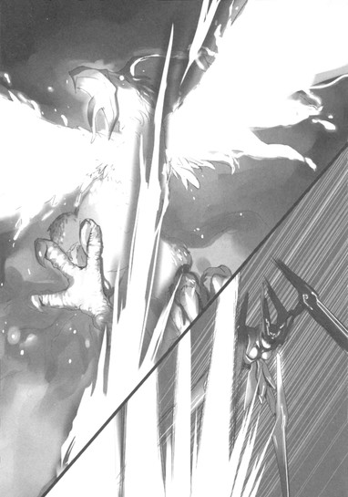
────僕も。僕も、いまは力も知恵も何もかもまるで足りないけれど、でも前を向くことはできる。それこそが、誰もが最初から持っている、本当の強さなんだ。前を向いて、息を吸って、胸を張って......さあ、吼えろ!!
「う......おおおおおッ!!」
ハルユキの絶叫に、楓子が応えた。
「飛びなさい!!」
「──行きますッ!!」
ばっ、と背中の両翼を広げ──十枚の金属フィンを、ありったけの力で振動させ──ハルユキは、飛んだ。
耳元で空気が唸り、圧縮され、壁となる。それを、まっすぐ前に伸ばした両手の指先に宿した心意の輝きで突き破る。ふっ、と圧力が失せる。一条の銀光と化し、ハルユキは突進する。
前方やや下方に、スザクの巨体がみるみる近づく。空気を焼き焦がすような、強烈なる熱気がアバターを叩く。しかしもう怖れは感じない。なぜならハルユキは一人ではないからだ。黒雪姫が、楓子が、チユリが、タクムが、背中を支えてくれている。
そして、今この瞬間、実に二年半ぶりに無制限フィールドに降り立とうとしている年下の少女も。
知り合ってまだたった二日だが、四埜宮謡はすでにハルユキの心の中に確たる存在感を宿している。〈災禍の鎧〉を浄化してくれるからではない。レギオンの戦力を強化してくれるからでもない。ただ、新しい友達として、今のネガ・ネビュラスに加わってほしい。
そのために、今は飛ぶのだ。怖れず、怯まず、ひたすら前へ。前へ。
白銀の矢となって高度三十メートルを駆けるシルバー・クロウと、橋の表面を轟音とともに前進する四神スザクが、幾つかの火の粉を散らして交錯した。
スザクはそのまま、背後の黒雪姫と、その傍らに着地したはずの楓子へと殺到していく。あとは二人が、エネミーを橋のずっと後方まで引いていってくれるはずだ。信じて任せる、するべきことはそれだけだ。
ひたすら直進するハルユキの行く手、いまだちらちらと炎が上がる祭壇の中央に──ぽっ、と緋色の輝きが生まれた。
来た。謡──アーダー・メイデンだ。完璧なるタイミング。タクムがきっちりと伝令役を務めてくれたのだ。
白と赤の色彩をまとう巫女のアバターが、みるみる実体化していく。距離はもう百メートルもない。ハルユキは謡をピックアップするため、高度を下げようと──
した、その、瞬間。
「ハルユキ君!!」
驚愕と恐怖、そして絶望に彩られたそれは──悲鳴。
加速世界では本来タブーのはずの、本名による呼びかけが、後方から追いすがった。
「逃げろ!! 今すぐ逃げるんだ!!」
「............!?」
状況が理解できず、ハルユキはちらりと肩越しに振り返った。
そして、見た。
四神スザクが、その翼を傾けて左に旋回しようとしている。長い首は弧を描き、紅の双眸がまっすぐ橋のこちら側を、いやハルユキを見据えている。
明らかに、ターゲット対象が移動したのだ。しかし、なぜ。スザクの胸には、まだ黒雪姫の〈奪命撃〉によるダメージ・エフェクトの余韻が見える。対してハルユキは敵に触れてもいない。狙われる道理がない......
と、混乱した思考を閃かせた刹那、ハルユキは声を聞いた気がした。
意思なきムービング・オブジェクトであるはずのエネミーの、それは怒り、あるいは嘲笑か。
............小さき者よ。我が領域を侵さんとした愚行の代償を受けよ。我が息吹で............
灰になれ。
巨大な嘴が一杯に開かれる。
暗黒に満たされた喉奥に、ちらちらと火炎が瞬く。ブレス攻撃。直撃すれば間違いなく即死。
────逃げろ、ハルユキ君!!
再び、黒雪姫の悲鳴が聞こえた。
瞬間、という言葉ですらも長すぎる、極小単位の時間の中で、ハルユキは逡巡した。
今すぐ急上昇すれば、ブレスは回避できるかもしれない。そのままシルバー・クロウの飛行限界高度である千五百メートルまで駆け上れば、スザクも追ってはこないだろう。しかし──、ああ、しかし。
ハルユキは、銀面の下で、砕けよとばかりに奥歯を噛み締めた。
そして、決意した。
引けない。ここで逃げることはできない。今逃げれば、ほんの数十メートル先でハルユキを待っている四埜宮謡がスザクに襲われ、死ぬ。
たとえそうなっても、現実世界に戻ったハルユキを、彼女は責めないだろう。いつもの超高速タイピングで、【仕方ないのです】と言ってくれるだろう。
でも、本当は仕方なくなんかない。なぜなら、今この瞬間、ハルユキは自分の行動を選べるのだから。謡を救出できる可能性がほんのわずかでも存在するのなら、それに向かって飛び続けるための翼を、ハルユキは与えられているのだから。
「う......お......」
再び祭壇へと視線を戻しつつ、腹の底から声を絞り出す。
「お......お......おおおぉぉぉぉぉ──────!!」
雄叫びとともに、ハルユキは脳のシナプスが焼き切れんばかりの意思を振り絞り、翼を震わせた。
まっすぐ突き出した両手の先に宿る光が、全身へと広がる。唯一の心意技、〈光線剣〉を使う時と同じ銀色の過剰光に包まれ、ハルユキは突き進む。
背後で、とてつもないエネルギーが生まれる感覚。万物を瞬時に蒸発させるであろう炎の渦がスザクのあぎとから放たれ、世界を紅に染めて襲いかかってくる。
────ハルユキ君!!
────鴉さん!!
────ハル────っ!!
三つの絶叫が、意識にほんのわずか触れた。しかしそれすらも振り切り、一条の光となって飛ぶ。
──先輩。逃げろって言われたら逃げるっていう約束、破ってごめんなさい。あとで沢山、沢山謝ります。でも......僕が僕であり続けるために、今はこうしなきゃならないんです。
そんな刹那の思考が白い火花となって弾け、消え、あとにはもう前を目指すという意思だけしか残らなかった。
祭壇がみるみる近づく。その中央に出現したアーダー・メイデンは、状況を理解できないかのようにただ立ち尽くしている。
小柄な巫女の姿を凝視し、ハルユキは声ならぬ声で叫んだ。
──手を!!
弾かれたように、アーダー・メイデンが細い両手を持ち上げた。
高度を橋の上一メートルにまで下げたハルユキも、両手を差し出す。双方の腕が触れ、しっかりと互いを掴み──
直後、ハルユキは謡のアバターを思い切り引き上げ、胸に抱いた。
──掴まって!!
再び叫び、謡の両手が首にかかるや否や再上昇に入る。このまま百八十度ループで反転して離脱............
不意に、周囲の色が変わった。
オレンジからクリムゾンまでの波長で揺らめく、赤。炎の色。
ちりっ、とアバターの全身が鳴る。スザクの火炎ブレスが追いついてきたのだ。まだ炎そのものには触れていないはずなのに、視界左上のＨＰゲージが、恐ろしい勢いで減少していく。
だめだ、上昇はできない。ほんのわずかでも速度が落ちた瞬間、炎に呑まれて溶ける。
直進するしかない。だが、もうすぐ目の前に、巌のごとき城門が立ちはだかっている。
せめてもの矜持として、あの門に激突して果てるしかないのか。いや、ここまできて自殺は許されない。生きるんだ。謡とともに生還する。してみせる。
「............開け!!」
アバターの表面をちりちりと焼かれつつ、ハルユキは叫んだ。
同時に、胸の中の謡もまた声を上げた。
「開くのです!!」
だが、分厚い藍色の氷をまとう城門は、二人を嘲笑うかのように、その門扉を堅く堅く閉ざし続けて────
いや。
光が──。
屹立する左右の扉の真ん中に、
ほんの一筋、糸のような白い光が見える。
12
静かだ。
冷たい。そして、硬い。
しんしんと冷える平面の上に、体の右側を下にして横たわっている。
まるで、全身が凍り付いてしまったかのようだ。まったく手足を動かせない。
しかし、両腕の中に、何か不思議な温かさを感じる。とくん、とくん、という仄かな振動。これは────
「......少し、苦しいのです」
突然、そんな声が聞こえた。
ハルユキはハッと両眼を見開いた。すると目の前に、つぶらな緋色のアイレンズがあった。
「あ............」
声を上げ、強張った両手を苦労して緩める。可憐なフェイスマスクが、ほんの少し遠ざかる。
「......し、しのみ......じゃない、メイさん......？」
震える声で囁きかけると、マスクがこくりと動いた。清らかな声が、小さく響く。
「そうです。あなたが助けてくれたのです、クーさん」
その言葉に、びくっと全身を震わせる。
何があったのか、よく思い出せない。祭壇に立つアーダー・メイデンをピックアップして......迫り来るスザクの火炎ブレスから逃げて......閉じた城門に、まっすぐ突っ込んで......
そのあとは、どうなったのだろう。まさか、二人して死んでしまった？これは〈幽霊状態〉なのか？
──いや、それならば、視界すべてがモノトーンに変わるはずだ。しかし今は、謡のアイレンズの、ルビーのような煌めきがはっきりと見える。
それでもなおハルユキは、自分たちがあの恐るべき炎熱の渦から逃げ延びたとは信じられず、掠れ声で訊ねた。
「あの......、僕たち、生きてるのかな......？」
すると、謡はもう一度こくんと頷いた。
「......生きているのです。でも......、ああ、でも............」
語尾が、掠れ、わななき、冷気に溶けて消えた。
アーダー・メイデンは、視線を周囲の冷たく薄暗い空間へと移し──。
ごくごくかすかな囁き声で、ハルユキに告げた。
「............ここは......この場所は、〈帝城〉の中なのです」
あとがき
川原礫です。『アクセル・ワールド６浄火の神子』をお届けいたします。恐らく、既刊の中でもっとも執筆に時間のかかった一冊ですが、楽しんで頂けたでしょうか......。
さて、私には小説書きとして足りていない物が山ほどありますが（根気とか、向上心とか、自宅で仕事する能力とか......）、その中でももっとも欠けていると自覚しているのが、〈お話をきちんと終わらせる力〉です。
正直に言いますと、Ｗｅｂ小説を書いていた頃を含めてこれまで八年以上色々なお話を作ってきましたが、そのどれ一つとして正しい終わり方はしていません！処女長編である『ソードアート・オンライン』や、初投稿作の『アクセル・ワールド』にしてからが、「俺たちの戦いはこれからだぜ！」ＥＮＤですし（よく賞をもらえたなあーと今更のように冷や汗をかいてみたり......）。
別にもうすぐ完結というわけではないのですが、アクセル・ワールドもこれだけ書き続けてくると、「このお話はどういう。ふうに終わるのかなあー」と考えたりもするんですよね。ところが、これがまったく思いつかない（笑）。広げる方向ではあれこれ妄想できるのに、畳むアイデアがこうも出てこないのは、やはり小説書きとしてはヤバイ気がしてなりません。
と言いつつも、私は読み手としては、実は「開いて終わる」話が大好きなのです。年代記風に、主要キャラクターの後半生を詳述して終わるのももちろん素敵ですが、やはり「彼らの物語は今後も続いていく」感じが欲しいと言いますか......。ＲＰＧでも〈クリア後の世界〉とかたまらなく好きですし（笑）。もしいつかゲームを作れるようなことがあったら、エンディングが流れたあとに、本編の三倍くらいのボリュームでおまけシナリオが始まるようなやつにしたいです！むしろどなたか作ってください！
脱線しました。そんなわけなので、このアクセル・ワールドも、おそらくいつか来るであろう終わりでは「俺たちの戦いは......」みたいなことになってしまう予感ひしひしですので、今から謝っておきます。ごめんなさい！
前巻に輪をかけてスケジュールが遅れ、現在大変なご迷惑をおかけしているにも拘わらず、息を呑むほど素晴らしい表紙を描いてくださったイラストのＨＩＭＡさん。財布を忘れた哀れな私に快く三百円貸してくださった編集の三木さん。今回もお世話になりました！そして、ここまで読んでくださった皆様、またしても『つづく』で終わってすみません！次巻ではちゃんと決着します多分！タッくんも活躍します多分！
底本：アクセル・ワールド６ ─浄火の神子─
川原 礫
二〇一〇年十月十日 初版発行